| あいうえ築地の河岸ことば | |
| 福地 享子 | |
| 株式会社世界文化社 (2017) | |
この本は縦書きでレイアウトされています。また、ご覧になる機種により、表示の差が認められることがあります。
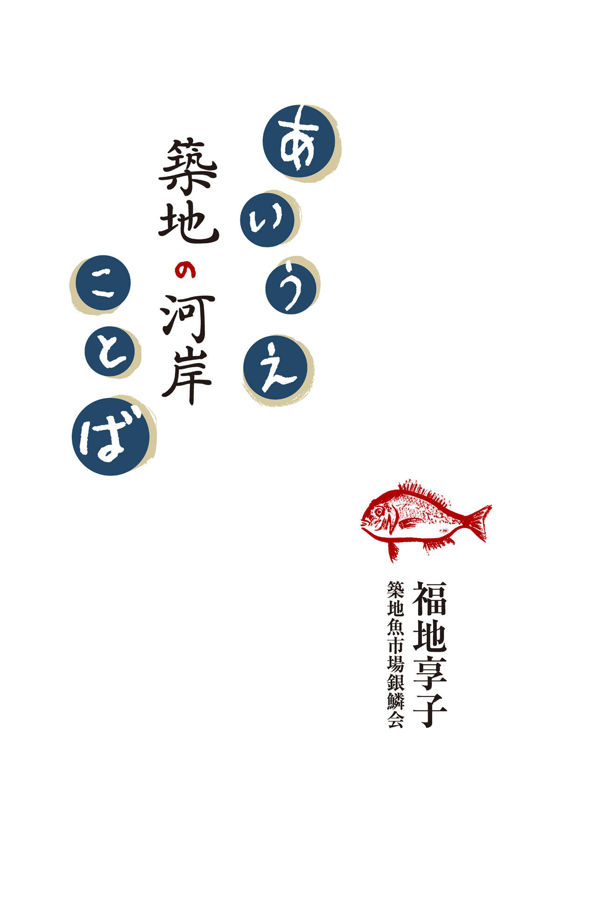
「魚河岸」「大根河岸」から築地市場へ。
語りつがれる「河岸ことば」の背景
「東京都中央卸売市場築地市場」。この市場は「日本橋魚市場」と「京橋青物市場」を前身としています。ふたつの市場は「魚河岸」「大根河岸」の俗称でもおなじみですよね。
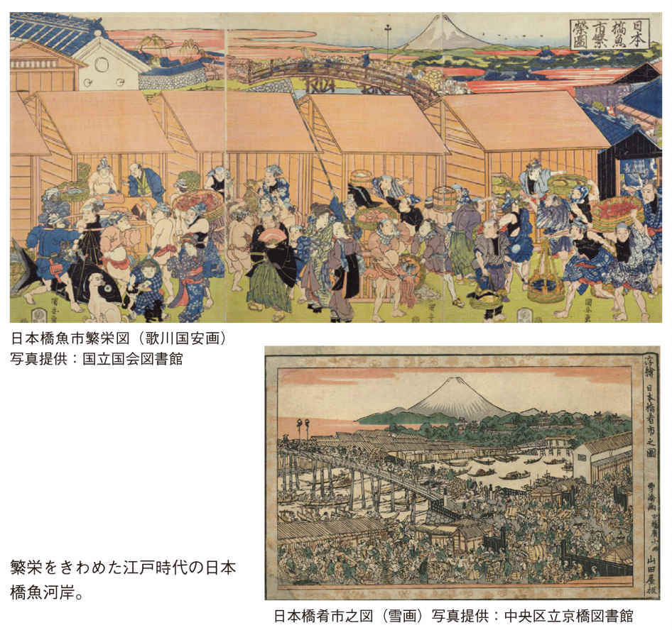
江戸に始まったふたつの河岸
江戸は市中縦横に川が流れる水の都でした。輸送の主役は船で、荷物を陸揚げする場を「河岸」といいました。日本橋川のほとりにできた魚の荷揚げ場が「魚河岸」、京橋川の野菜の荷揚げ場が「大根河岸」。荷揚げ場はそのまま取引の場となり、市場へと発展しました。
魚河岸の誕生は、徳川家康が江戸に幕府を開いたころで、それ以降、幕府御用という特権的な立場を得て、一極集中型の巨大市場に成長していきます。日本橋の北詰めには、戦後に建造した魚河岸の記念碑「乙姫像」がありますが、江戸の終わりには乙姫像の後方一万坪余りが魚河岸の商いの場でした。しらじら明けるころ、押送船 と呼ぶ搬送船が競って岸にこぎつけると、肴 店 がならぶ入りくんだ路地は歩くのもままならぬほど。その賑わいぶりは「朝千両」のカネが落ちる場とうたわれ、江戸名物となっていました。
この魚河岸からひとっ走りの距離にあったのが大根河岸。「大根」という名称は、この場合、野菜の総称で、魚河岸に遅れること七〇年、銀座寄りの京橋一帯にできました。野菜というと幕府御用の神田青物市場が有名ですが、大根河岸は繁華な街なかにあり、江戸の終わりには神田青物市場に続く規模でした。
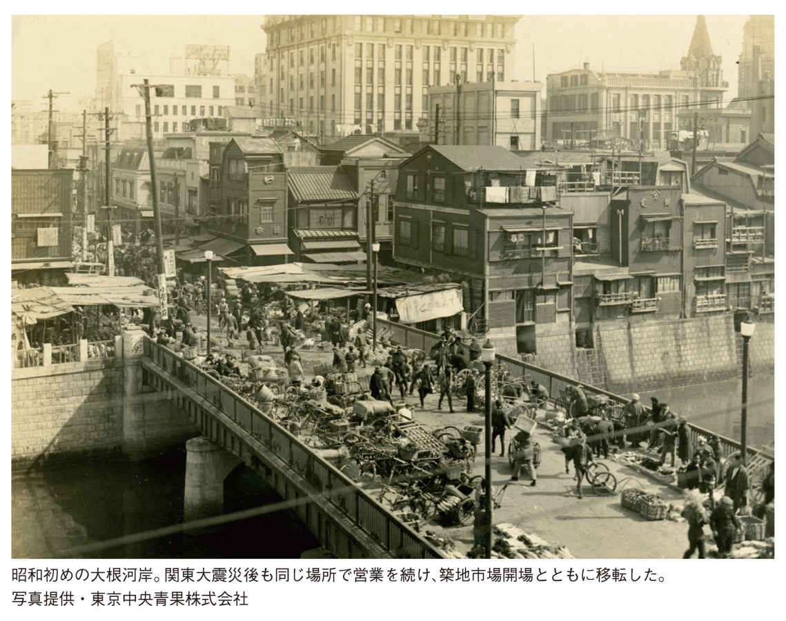
築地市場開場への道のり
そして明治の世に。国は諸外国を見習い、近代化に突っ走りますが、巨大さゆえに目立つ魚河岸も、大きな変革を迫られます。明治二二（一八八九）年、江戸からの街並みを一新する都市計画により、移転命令がでました。文明開化を発信する超一等地で旧態依然のままやっていたのですから、無理もない話です。しかし、土地買収にはじまり移転にかかる費用すべて魚河岸持ちという負担は大きく、とても実行に移すことはできませんでした。
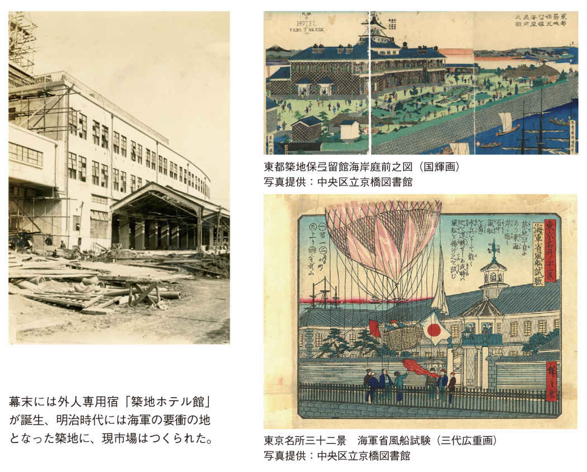
そして大正時代に入ると、新たな観点から市場の見直しが始まります。食品の価格安定のための市場です。当時の魚河岸は、問屋の単なる集合体で、投機的な商いもあり、価格は不安定でした。そこで法律で規制された公設市場「中央卸売市場」開設の動きが浮上したのです。魚河岸の移転理由は、都市計画から中央卸売市場開設のために、と変わるのですが、この直後の大正一二（一九二三）年、関東大震災が勃発、魚河岸は壊滅状態となり、築地海軍省の一角に移転します。
この移転により、築地に中央卸売市場をつくるプランが一気にすすみます。大震災による帝都復興財源をもとに、東洋一とうたわれた近代的な施設ができました。
しかし、建物はできたものの、大きな問題が未解決でした。法律により、七〇〇軒もの問屋の集合体を解体、現在のような卸売会社と仲卸のように職能を分ける必要がありました。この問屋大再編は消費者もまきこんでもめにもめ、開場は施設が完成した二年後の昭和一〇（一九三五）年、まずは京橋から大根河岸が入場、遅れて魚河岸入場となりました。
ブランドとなった築地市場
開場後の道のりも、決して平坦ではありませんでした。戦争が始まると、築地市場は国策により食糧配給の場となり、仲買人（現仲卸）は解散させられます。
築地市場が本来の姿となったのは、戦後の昭和二五（一九五〇）年のこと。市場人は、失われた年月を取りもどすかのように、フル回転で働き、築地市場は力をつけていきました。
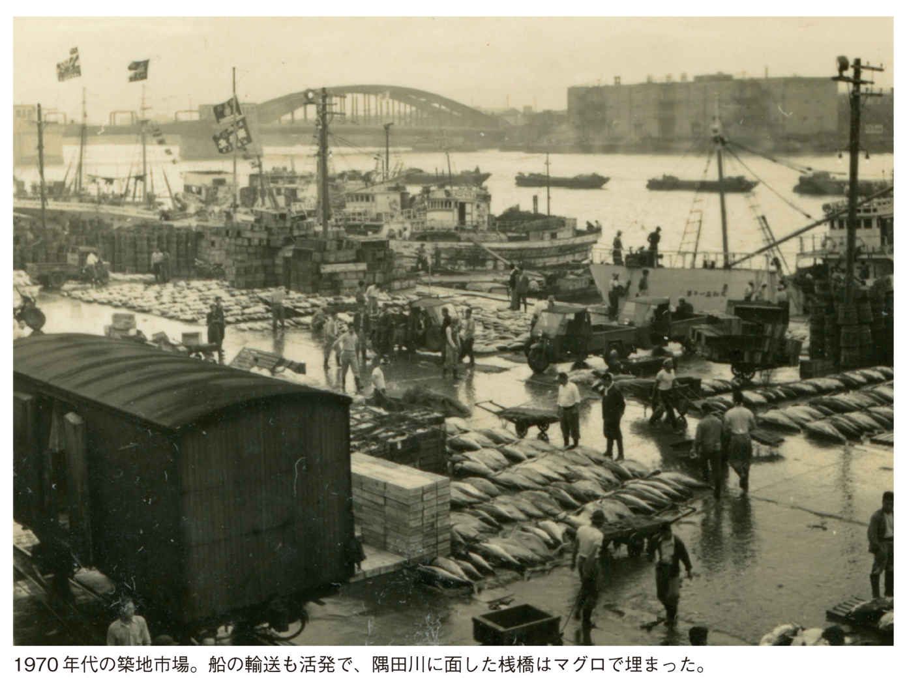
高度成長の波にのり、取扱量は飛躍的にのびました。二〇〇〇年過ぎには「築地ブランド」という言葉まで生まれ、内外に知られる世界有数の市場として今にいたっています。
しかし、その一方、場内の動線や施設の老朽化が進み、一九七〇年代には、東京湾岸の埋め立て地、大井への移転話が持ち上がったこともあります。現在、豊洲市場への移転が取り沙汰されていますが、この問題は、すでに昭和の高度成長期に端を発しているといえます。
このように、市場は時代に合わせ、変容してきました。それは宿命ともいうべきものでしょう。しかし、市場人の基本的な毎日に変わりはありません。全国から魚や野菜を集め、消費者の窓口になるという仕事は、魚河岸や大根河岸からのものです。そのなかで、独特の商習慣やしきたり、人との交わりが生まれました。この本では、そうした日常を「河岸ことば」というキーワードで切り取り、紹介しています。
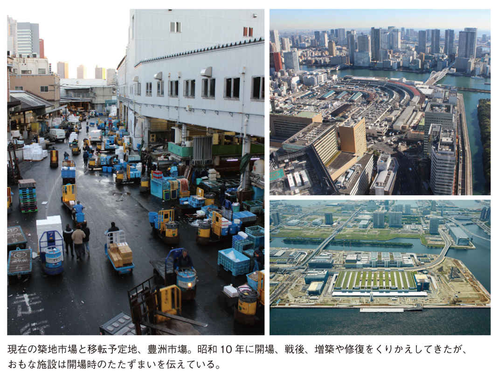
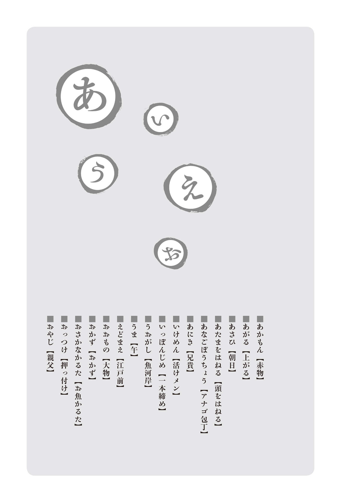
かもん 【赤物】
タイがなきゃ、かっこつかない
マダイは決してヤワな魚じゃない。挑むような面構え。ウロコを引けば、いやあ、てごわいのなんの。水中でヒラヒラやさしく揺れるヒレの先は、実は錐 のように鋭い。きわめて男前、魚河岸っぽい魚である。
このマダイを頂点としたタイ族の総称が、赤物―あかもん。築地市場には「赤物屋」といって、赤物専門の店があり、「赤物組」という組合まであった時代がある。
「なにしろ結婚式にタイが欠かせなかったからね」と、一九五〇年代の赤物全盛期を思い出すのは、仲卸「共 穂 」の大ダンナ、石塚敏明さんだ。
「婚礼の折り詰めにタイの塩焼きがなきゃ、かっこつかないって時代でね。大安吉日近くになれば、相場はうなぎのぼり。赤物屋は、暦の大安吉日には大きな丸印つけといて、早くから仕入れの算段に余念がなかった」
折り詰めのタイは、レンコダイがよく使われた。標準和名はキダイ。マダイに比べるとぐんと安いが、それでも何百枚と扱うのだから、いい商いであった。
「婚礼の引き出物の定番といえば、雌雄のカツ節。だからカツ節問屋も儲かる。結婚式はうちでやるから、料理は魚屋が仕出しする。器やお膳は、レンタルでね。場外の道具屋が貸していた」
築地という地で、タイを中心にしたブライダルネットワークが展開していたことになる。
タイのおてがら話をさらにさかのぼれば、日本橋魚河岸に行きつく。
タイが祝儀魚に昇格したのは江戸時代。将軍家のご大礼や若宮元服ともなれば、それこそ何百枚ものタイを必要とした。これにこたえるのが、幕府の御用市場である日本橋魚河岸。たとえ時化であっても注文に応じるため、驚くべきシステムが開発されていた。生け簀 を船に設けた「活け船」を仕立て、遠く伊勢湾や瀬戸内海からも、活かしたまま江戸へ運びこむ。そして、江戸湾に浮かべた生け簀に泳がしておき、必要に応じて伝 馬 船 で魚河岸へ、という離れ業である。今の活魚流通の基礎は、タイが築いたものなのだ。
赤物という言葉が次第にすたれていったのは、石塚さんによると、結婚式場がホテルに移り、フランス料理が流行となった七〇年代からだという。また赤物屋も手広く商売をするようになり、赤い魚尽くしの店は消えていった。
とはいえ、タイそのものの需要は多い。築地入荷の白身魚のうち、天然・養殖合わせ、だんぜんのトップ。魚界きっての男前魚として君臨していることに変わりない。
がる 【上がる】
小さなことにも縁起をかつぐ
ポツリポツリと灯りが消え始めた仲卸棟。まだ間に合う、あそこの店は遅くまでやっているからと訪ねてみたが「アイツなら、あがったよ」と肩すかし。仕事が終わって帰ったというわけだ。
市場では「あがった」という言葉をよく使う。仕事を辞めた人のことも「あがった」。活魚が命を終えた時も、「死んだ」ではなく「あがった」だ。
「あがった」。意味的には、すごろくの「あがり」と同じこと。つまりおしまい。
おしまいとか、まして死ぬでは、縁起でもないからだ。
ここでは、ささいなことに縁起をかつぐ。新米のころ、こんな経験もした。店で預かったお客さんの荷物がまぎれないように、赤く太いマジックインキで名札を書いて荷物の上に置いてあげた。親切でやったつもりが、こっぴどく叱られた。
「赤い字は、赤字に通じるといって、いやがる客もいるんだ、覚えとけ」
商いは水物。ささいなことにも縁起をかつぐ気持ち、今は痛いほどわかる。
さひ 【朝日】
一日の終わり、一日の始まり
二四時間、眠ることを知らぬ築地市場。
売った買ったでにぎやかなのは午前中。それも終われば、潮が引くように仲卸棟の人影は消えていく。入れちがいに広場には明日の荷物を積んだマンモストレーラーが姿を見せる。卸売会社の事務所やあっちこっちの建物のなかでは、パソコンを前に本日の集計とやらが続く。とっぷり暮れるにつれてトレーラーの数は増し、広場ではターレやフォーク車がうなりをあげて荷物の移動を始める。市場を取り巻く摩天楼の灯りが消えると、そろそろ仲卸人の出勤時間、寝起きのどんより顔が市場に吸い込まれていく。
今日と明日がごっちゃになりながら、どこかしらで人がうごめいている。そんな二四時間。もっとも美しいときを探すとしたら、朝日がのぼるころ。とくに冬のキーンと空気が張りつめた日の朝――。
見上げる空は濃紺色だが、ゆるいカーブを描く大屋根の向こう、高層ビルの間はおいしそうなサーモンの色にうっすらと染まりはじめる。
そのころ、マグロやウニやエビのセリ場は終盤戦、セリ人が声をふりしぼる。相対売りのセリ場では、販売担当が残品を横目でにらみながら、携帯電話で「あと、ヒトッパコ、頼むよ」と、どこぞのだれかにヒソヒソ交渉だ。
セリ場から、純白の真新しい発泡スチロール箱がターレや小車に山と積まれ、仲卸棟に向かう。そのまわりを、おこぼれにありつこうとカモメが低く舞う。色のないすすぼけた仲卸の店先は、そのまぶしいばかりの純白の箱で晴れ晴れと息を吹き返す。店先に、魚たちの新たな色彩が広がる。冷凍マグロを切断する電動ノコの鋭い金属音が天井へ突き抜けていく。
一番電車の買い出し人が飛び込んできた。
「ハヨザイッ（おはようございます）」
「まいどお」
眠らぬ築地。その鼓動がドックンドックンとはちきれんばかりの音をたて、なにかが始まりそうな予感にあふれ、輝きはずむとき。それが朝日がのぼるころ。もっとも築地市場の美しい時間である。
たまをはねる 【頭をはねる】
決して目利きになれねえ
初めてセリに出る息子にオヤジが耳打ちする。
「いいか、まだ相場なんて立てられねえんだから、目利きの頭をはねろ」
そう言いながら、オヤジはさりげなく長年のライバルを息子に目顔で知らす。
「ヤツがニマルつけたら、二〇〇円ばかしのせてヤリを出せ」
だれかがつけたセリ値に少し高い値をつけ、セリ落とす。これが「頭をはねる」。
息子は、狙った獲物は落とせなかった。それはそうだろう。初めてのセリで、そんな余裕があろうか。オヤジはホッとした。息子の初舞台に、つい舞い上がってよけいなことを口走って後悔していたのだった。セリ場からの帰り道、息子に言ったものだ。
「さっき言ったことは忘れろ。そういうヤツもいるってことだ。ろくすっぽ下付け（下見）もせずに、ヒトの頭はねてるヤツが。要領よく立ち回っているつもりだけど、決して目利きにはなれねえからな」
築地をずいぶん前に引退したマグロ屋の大ダンナに聞いた話だ。
なごぼうちょう 【アナゴ包丁】
魂が抜け落ちると
アナゴは、基本的には活かしたまま売る。しかしなんといっても悪 食 。あがると腹が臭くなる。そこで、店でおろして納入することも多い。
小出刃でおろすのが普通だが、使ううちに使い手のクセがしみつき、独特の形になってくる。それを、私は「アナゴ包丁」と名付けている。そんな包丁を後生大事に捨てられず、ずっと持ち続けている。
その包丁は、私が働いていた仲卸「濱長」の番頭さんの持ち物だった。アナゴは生きているうちに頰のあたりを目打ちでまな板に固定し、ニョロリうごめくヤツを割いていく。番頭さんのアナゴを割く様子は、殺生していることなぞ忘れさせるほど、あざやかなものだった。
市場で、「職人仕事はカッコモン」と教えられた。いい仕事は、はたから見てもきれいな動きであるべし、と。番頭さんのアナゴ割きは、まさにカッコモンであった。
番頭さんは、やがて定年で辞めた。とめる人はだれもいなかった。気難し屋のお天気屋。丸ごと職人体質の番頭さんを、会社組織に変わろうとしていた店は持て余していたようだ。辞めるその日、「くれてやるよ」と、なぜだか私にその包丁を放り投げるようにしてよこしたのだった。
うちに持ち帰り、初めて包丁をしげしげと眺めた。それは小出刃とはいえないくらい変形していた。柄は小刀で削ったのか、折れそうなくらい、えぐれている。店に来るお客さんたちが、「手に包丁が吸い付いているようだ」と感心していたが、なるほど、えぐれた部分に手の腹がおさまり、刃の峰に指がいい具合に重なるのだった。
刃の長さは一〇センチ足らず。切っ先だけは異常なほど尖っている。切っ先をアナゴの背に入れ、そこから骨をなぞっていく感触が伝わってきて、ゾクリとした。癇症なくらい包丁を研ぐ人だった。
あれから一〇年。包丁の姿形は変わっていない。しかし、どうしたことだろう。ただの朽ちた包丁にしか見えない。握ってもあのゾクリとした感触もない。しまいっ放しだったせいか。使ってやれば、変わるのだろうか。しかし、アナゴを割くだれかに譲ったとしても、使いにくいと突っ返されるのが落ちだろう。
職人の道具とは、そういうものかもしれない。職人の魂が抜けると、輝きもまた失せてしまう、無残なほどに。それでも持ち続けているのは、輝いていたあの日が、無性に懐かしいからかもしれない。
にき 【兄貴】
わけあり、耳打ちのワケ
人間界で、アニキといえば肩で風切る身分。
しかし、お魚界となると、これがわけありでして。
仲卸の店先、そろそろお客さんがやってくる時間である。
「これ、アニキだからな」などと、人間界のアニキが後輩にこっそり耳打ちしている。
魚界のアニキとは、残品のこと。全部をその日に売ってしまうのが市場の大原則だけど、売れ残ることもある。新たに入荷したものに対し、残り物がアニキなのである。
人間界のアニキは、「残品から、先に売れよ」と、くぎを刺したわけである。
世の中、その通りにいけば、こんな楽なことはない。長年のお客さんは、アニキかどうかなんて、すぐに見破ってしまう。
「アニキだろ、これ」
すなわち、少し勉強しろ（まけてくれ）という意味である。
魚界のアニキは、ひたすら肩身が狭いのである。
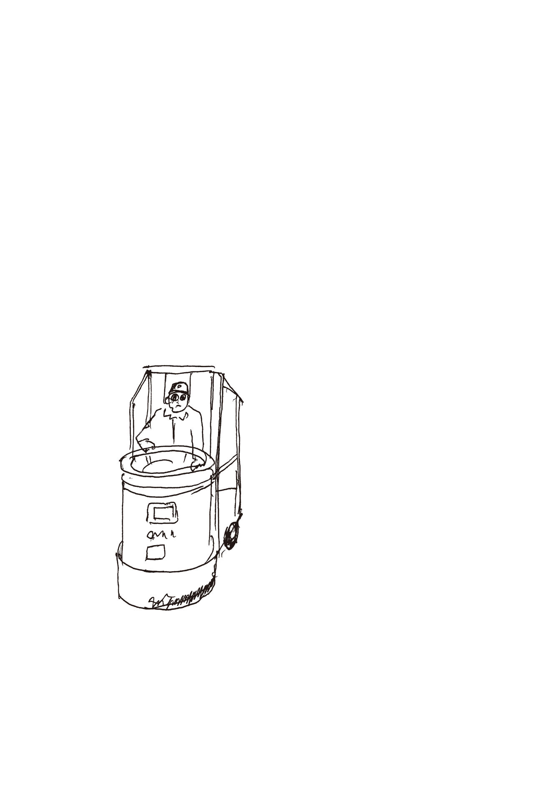
けめん 【活けメン】
渡れない河があっていい
泳ぎの魚、活魚は「活け物」と呼んでいる。略して「活け」。「活けのタイ」というように。だから活けの担当は「活けメン」ということにしよう。活けの売場でそう言うと、けっこうお客さんの笑いをもらえるし、本人もまんざらじゃないみたい。お仕事は、楽しくやらなくちゃ。
仲卸の店先、活けメンの定位置は水槽の前。水に肩までザンブと浸かって魚をすくい上げるのだから、冬場はウェットスーツである。何尾もの活けのタイなどを時間に追われて扱う姿は、荒波寄せる船っぺりで仕事しているようなものだ。
すくいあげた魚は「活け締め」という技で処理する。
魚のおいしさの頂点を得るための技。海外のシェフたちもこぞって賛嘆する日本ならではの手法だ。先日も「オー、イッケジーメ」などと歓声あげながら、さかんにカメラを向けてる外人さんがいましたっけ。
活け締めの道具は出刃包丁、そして「神経棒」と呼ぶ直径一ミリ前後のステンレス線だ。まずは魚のエラ下や尾に出刃を入れ、中骨の中心にある脊髄を切断。そこに神経棒を刺して神経を抜く。血抜きして、塩水で洗い清める、というのが一連の作業。出刃を入れるときなど、数キロの魚が思いきり暴れる。血が流れる。少々の腕っぷしでは、立ち向かえない作業だ。
「男と女の間には、深くて暗い河がある」という流 行 り歌があった。暗いかどうかは別として、渡るに渡れない河があるのはたしかだ。フォークリフトの操作に社長業、築地でも、いくつもの河を軽やかに渡る女性は多い。男たちの領域で、成績を残している女たちもたくさんいる。だとしても、活け担当は、肉体的なハンディがあり、渡れない河、そう思う。
だから、活けｍｅｎ。真剣な表情で魚に向かう姿は、かっこいい。渡れない河があってもいいじゃないの、渡れないから人生深いし、おもしろいんじゃないの。あの姿、ちょっと惚れていいかも、みたいな気分で見ている。
ホンマモンのイケメンでなくてもね。
っぽんじめ 【一本締め】
苦労があるからポンが生きる
魚河岸の人になったな、という瞬間はいくつかある。
そのひとつが一本締めの輪の一人になったとき。一本締め。「イヨウー」とやって、シャシャシャンと手を打つあれ、である。
市場に通い始めて数カ月。おしゃれなレストランで、市場の人二〇人ほどの食事会があり、私もよばれた。やっとお仲間に、という感じでかなりうれしい。
なごやかな食事。デザートが終わると、「そろそろ中締めを」という声がかかり、指名を受けた方が立った。続いて全員、ガタガタ椅子を引き、直立不動の姿勢。
はて、いったいなにが。すると簡単なあいさつののち、予期せぬことが起きたのだった。
「イヨウッ」。まさか。そのまさかが起きた。シャシャシャン、が始まったのだ。魚商売の人の手は、グローブみたいに分厚く大きい。それでもってシャシャシャンだから、店中に響くったらない。周囲からは驚きの視線。本人たちは、いっこうにおかまいなしのまじめな表情。ああ、身の置き場がないとは、このことだ。恥ずかしい。
しかし、それも一瞬。ちゃんと手が動いていた。
魚河岸流一本締めは、「シャシャシャン」と拍手三回、これを三回くりかえす。そして、最後に「ポン」と拍手ひとつで締める。
三拍手× 三回＝九
拍手九回。「九」の字に「ポン」とひとつたせば、漢字の「丸」である。
つまり、ここには「さんざん苦労はあったけど、最後は丸く（おさまった）。めでたしめでたし」という深～い意味がある。
しかるに！と、河岸を引退した元蒲鉾屋のダンナが嘆く。
「なんだい、テレビ見てるとポンだけ。ありゃないよ。さんざっぱら苦労があって、パアッと大輪の花が咲く。苦労があるからこそ、ポンが生きる。わかっちゃないよ、今の世の中」
初ゼリ、新年会、総会、仕事納め、イベント、ただの飲み会。魚河岸ではすべて由緒正しき一本締めで締めるのが恒例だ。
魚河岸流一本締め。背筋がピッとして、そりゃもう気持ちいいものである。
おがし 【魚河岸】
日本橋のＤＮＡ、脈々と
「魚河岸」は築地市場水産物部の愛称。市場の人たちの間では、単に「河岸」。仲間うちで築地市場を語るとき、「河岸」以外の言葉はないと言っていいほど浸透している。
魚河岸というのは、前身である日本橋魚市場時代の呼び名である。隅田川の支流、日本橋川筋の日本橋のたもと、ここが魚の荷揚げ場として使われたのでこの名が生まれ、そこに立つ魚の市場のことも言うようになった。
浮世絵でも、船と肴店 がセットになった光景はおなじみだ。近海から、魚を積んだ押送 船 と呼ぶ八丁櫓の手漕ぎ船が、一刻を競って漕ぎ寄せる。岸にひしめく肴店のエリアは、明治の終わりには一万坪にも広がっていたという。
明治期、欧米の「ｆｉｓｈ ｍａｒｋｅｔ」という呼び名を聞きかじったお役人が、「日本橋魚市場」なる名称をこしらえた。だけど、働く者には、やっぱり魚河岸だろうよ。魚を荷揚げする朝の喧噪、汗や怒号に満ちたあの風景にドップリ身を置いてしまえば、魚市場なんて呼び名は、なれねえ紋付き羽織、ヘッ、てなもんだ。
築地市場へ移っても、魚河岸という呼び名は残った。
市場の裏手に回れば、隅田川が広がる。川と東京湾との境界線は、市場のすぐそこだ。日本橋の魚河岸衆が、関東大震災を経て築地にやってきたころは、桟橋に船が押し合いへし合い、荷揚げのため桟橋に着けるのに、沖での順番待ちは毎度のことだった。
やがて中央卸売市場という名のりっぱな施設ができ、場内にまで敷かれた鉄路による貨車便が圧倒的な輸送パワーをみせつける。一九六〇年代中ごろからはトラック便が台頭してくる。しかしどっこい、船便はずっと機能してきた。
七〇年代まで、江戸前の魚は船便と決まっていた。マグロも輸送船で運ばれた時代で、桟橋は端から端までマグロの巨体で埋まった。
そして今も。
子安の漁師さんはアナゴを船で運んでくるし、葛西江戸川の漁師さんもシジミの袋を積んで桟橋に横付けする。トラックに積み替え、都会の道路を走るより、船のほうがずっと速いし楽だという。
船とセットになった光景は、ひっそりささやかながら続いている。現在もちゃんと「魚河岸」しているのだ。
ま 【午】
ジュージューしたたる脂。ウマッ
仲卸で働いていたころだ。近所のエビ屋の番頭さんがやってくるのは、今宵のおかず物色のためと決まっていた。その日も店頭に立ち、腕なぞ組んで、あごで示しながら言った。
「おう、ウマだ」
「ウマ、ですか」。聞き返すと、ケッと横むかれた。悪かったわね、トウシロウの新米で。言い返したいのをぐっとこらえて聞くと、「サンマだよ」と。
ウマ、サンマのことである。ジュージュー脂のしたたる焼きサンマ。「ウマッ」。語源はそこにあるらしい。
書くとなれば「午」。昔は、伝票にもそう記した。秋の刀の魚と書いてサンマと読ませたのは、詩人の佐藤春夫。夏目漱石の『吾輩は猫である』では、「三馬」という字を当てている。寸暇を惜しむ市場では、四つの棒線で書ける「午」なのである。今でもセリ人は、サンマの箱の覚書に「午」という字を当てる。
初売りは例年、七夕のころ。北海道からジェット機でやってくる。超のつく早どりサンマだから、ほっそりとして脂も少ないが、初荷ご祝儀相場で一本一〇〇〇円してもおかしくない。
そしてこのサンマには、「初荷」と書いた紙製の小さなのぼりを卸売会社が用意する。仲卸店頭にヒラヒラと舞う色あざやかなのぼり。年明けの初荷を除けば、サンマだけの光景、伝統の風物詩だ。いつに始まったか定かではないが、一九六〇年代の写真で見かけたことがある。もっとにぎにぎしい雰囲気だった。
岡本綺堂が書いた明治期の「魚河岸の一年」で、サンマに触れている。秋の入荷が始まると、河岸中こぞってサンマにとりかかり、まるでお祭り騒ぎになるところから、魚偏に祭と書いてサンマと読ませたそうだ。伝統の始まりは、このあたりにあるのかもしれない。
夏枯れとはよく言ったもので、夏の市場は沈滞気味。やがて早朝の空気に秋を感じるころ、怒濤のごとく、サンマが入荷する。初荷のぼりは、その予告、景気の前触れといったところだ。
もっともここ数年は、不漁が続く。二〇一六年の秋は北海道ではイワシが豊漁。イワシが揚がる年はサンマは不漁、というが、その通りになってしまった。秋の売り上げに大きく影響するサンマだけに、気がかりなことである。
どまえ 【江戸前】
時代とともに外へ外へ
梅雨に入れば「今の江戸前はいいよ」と、アナゴを選びながら目を細める寿司屋がいる。
夏の盛り、「昆布締めにするよ、この江戸前」と、つやのあるキスがいいお値段で売れていく。
江戸前の魚、江戸前物。市場での「江戸前」とは、産地名である。
江戸前以外からやってくるものは「旅の魚」とか「場違い」といった。
「旅は好きだが、旅した魚はどうも」といったぐあいで、江戸前物は「上物」のイメージが強く、「旅物」「場違い」は、格下とみなされていた。
魚河岸人にとって、江戸前はそれだけ値の張る大切な産地ブランドであり、海域についても、こだわりがあったようだ。
一八一九（文政二）年、日本橋魚河岸の組合が御肴御役所に提出した文書には、西は「品川洲崎」、東は「深川洲崎」、この間を「江戸前ト唱ヘ候場所」と記している。いわゆる江戸のお城が見える海域である。
やがて時代は進み、東京湾の埋め立てや漁具、船などの進歩で、漁場は沖へ沖へと広がっていった。
そこで一九五三年、築地市場が音頭をとって、東京湾沿岸各漁港の魚商や仲買人とともに、江戸前の線引きの会議を開いた。結果、「神奈川県観音埼灯台と千葉県鋸山の頂上を結んだ線」の内側を、江戸前の海域と決めた。漁港でいうと、神奈川県側は子安、本牧、横須賀、小柴など、千葉県側は船橋、木更津、富津、竹岡、金谷などだ。
この会議のリーダーを務めたのは、私が働いた仲卸「濱長」の先先代小澤長吉だった。そのせいか、店では一〇代の若い衆ですら「観音埼灯台から鋸山」は常識で、漁港の名も立て板に水のごとしで、私も河岸の行きかえり、お経のように呟いては、覚えたものだ。
今も「観音埼灯台から鋸山」の線引きにこだわる人もいるが、多くは東京湾全体を江戸前と言うようになった。外へ外へと広がっていくのが、江戸前の宿命なのだろう。
築地に入る江戸前物は、アナゴやキスのほか、マダイ、スズキ、サヨリ、ホウボウ、コチ、コハダなど。貝類では、トリガイやハマグリ、アオヤギ。そしてクルマエビも。量こそ少ないが、魚種はかなりの数にのぼる。
ほとんどの魚に高値がつくが、それは希少価値ということもあるが、味がいいからだ。「旅物」が当たり前になった今、希少価値だけで、値はつかない。
江戸前という漁場は、潜在能力の高い海なのである。
おもの 【大物】
築地の呼び名、ドンピシャリ
人ではない。日本橋魚河岸時代に始まるマグロの総称である。
マグロを扱う仲卸の団体名は「大物業会」。団体事務所の看板にでかでかと記されたその文字を初めて見たときは、「エエーッ」だったけど、今は慣れました。
ちなみに関西や東北では「太物 」。というか、卸売会社のマグロ担当さんにいわせると、太物のほうが一般的らしい。
なぜ、築地では大物なのか？
これは私の勝手な想像だけど、呉服の世界で太物といえば木綿の反物をさす。日本橋魚河岸時代、道をはさんだ呉服店、越後屋（三越百貨店）でも扱った商品である。そこで、紛らわしさを避けて大物といったのではないだろうか。
総称を大物として、さらに各マグロには特有の呼び名がある。
クロマグロ→単にマグロ、ないしは本マグロ略してホンマ。海のダイヤともよばれている希少な天然マグロが、築地で唯一「マグロ」と称していい魚種である。
ミナミマグロ→インド。当初の産地が、ジャワ沖インド洋であったことによる。
メバチ→バチ
キハダ→キワダ
ビンナガ→トンボ。胸ビレが長いから。
マグロは、築地市場で最も人気のある魚である。築地の顔、といっていい。一〇〇キロ以上もの巨体が並ぶセリの見学は、整理券が必要なほど希望者が多い。仲卸の店頭で見かける解体作業には、見学者の遠巻きの輪ができ、大きなため息がこぼれる。
巨大さゆえに小魚どもとは扱いが異なるので、マグロ仲卸は専業。その数は、全体の三割を占める。ひとくちにマグロといっても、魚種はいろいろだし、生もあれば冷凍もある。専業の商いが十分に可能なのだ。築地市場の水産物一日の取り扱い平均額は一六億円ちょっとだが、マグロだけで二億五〇〇〇万円をたたきだす（二〇一五年度実績）。
とまあ、こう見ていくと、やっぱり大物、という言葉でドンピシャリのような気がする。
かず 【おかず】
究極の食いてえ魚
「おかずにするんだからな」と言えば、暗黙の了解で心持ち安くするのが、仲間同士のお付き合い。
「なんだ、この魚は。おかずにしかなんねえよ」と、仕入れをちゃかすことも。
市場で「おかず」といえば自家用の商品、テメエの口に入るぶん。売りものは「総菜物」。そんな線引きがある。
総菜物となるとアジやイワシといった、いわゆる大衆魚だけど、おかずの魚種はよりどりみどり......。と、いちおうミエを張っておこう。
内情をあかすと、もはや明日には持ち越せないものが圧倒的だ。腹がブヨブヨで半値に下げても買ってもらえないような。だから、アマダイのような上物もおかずとなる。
しかし、おろしてみると案外いい身だったりして、ちょっと後ろめたい気分になる。これがオアシに化けてりゃ、いくらになるかって。
昔は「おかず相場」なるものがあったと、マグロのセリ人に聞いた。暮れのセリ最終日、仲卸の社長たちが正月用のおかずをセリ合うのだが、カネは問わない、仲間にいいとこ見せたいって調子だから、高値が出るわ出るわ。正月の刺し身にカジキがもてはやされたころのお話である。
こう書いていくと、ずいぶんオイシイ思いをしているみたいだが、おかずは教材、知の泉なのである。
仕事が終わり、マグロ屋の前を通ると、表情に幼さが残る従業員が、マグロの切れっぱしを前に弁当を食べていた。皿代わりの発泡スチロールのふたに、深紅の花びらのようにびっしり並べたマグロ。それをうまくもなんともねえや、といった顔で、口に放りこんでいる。おそらく明日もまた、この光景は続くのだろう。来る日も来る日も、飽きるくらい食べこむ。そうするうちに、モノの正体が見えてくる。目利きになっていく。
私も新入りのころ、さんざん聞かされたものだ。「魚は、食わなきゃわからねえ」
眼が澄んでいるとかウロコが輝いているとか、一般においしい魚の見分け方というものはある。それ以上に市場人のだれもが言う究極の見分け方は「うまそ、食いてえ」。
おかずが養った直感こそが勝負なのである。
さかなかるた 【お魚かるた】
戦前の最後の輝き
読み札は「あんこう大口なんでも食べる」。
絵札には、カニ、イカ、貝とご馳走てんこ盛りの皿を前に、タコを頰張ろうとするアンコウ君がいる。
いろは四八文字、魚が主人公の「お魚かるた」のうち、私いちばんのお気に入りである。
このかるたの誕生は、一九三六年。絵札、コピーともに制作したのは、築地市場の卸売会社で働いていた長谷川秀雄氏であった。ながらく絶版となっていたが、九九年に復刻した。それ以来、場内の本屋さん「墨田書房」のロングセラーとなっている。
テンポのいいコピーで登場する魚たちは、昭和の匂い漂う漫画タッチで描かれ、切り身しか知らない子供たちが、丸ごとの魚に出会える遊び道具、いや生きた教材となっているようだ。
そして大人には、時代に出会える道具、ともいえる。
オリジナルのお魚かるたができたころ、日本の水産業は大型漁船の新造や北洋漁場の開拓などにより、世界の漁獲量の半分を占めるほどの水産大国となっていた。かるたの読み札からも「日本の漁業は世界一」「蘭領インドへ漁船隊」と、躍進ぶりがうかがえる。
一九三五年に開場した築地市場は、そんなイケイケムードのなかにあった。お魚かるたの「せ」だけは、魚ではない。「世界一の東京魚市場」。膨大な取扱量を誇るように、絵札には長い長い貨物列車が描かれている。
いっぽうで、「兵隊さんに上げたい太刀魚」「剣を振って梶木の突撃」などのコピーもある。オリジナルのかるたの箱の絵にいたっては、鉄砲をかつぎ、兵隊さんのかっこうをしたマダイの行進である。国全体が戦争へ向かおうとしていた時代だったのだ。
実際、かるたができた五年後の一九四一年、日本は太平洋戦争に突入。人も物資もひたすら戦争に向けられ、市場への入荷量は激減、まともな魚のほとんどは姿を消す。多くの市場人が戦争に駆り出され、かるたの作者、長谷川氏もまたニューギニアで戦死している。
お魚かるたからは、戦前の最後の輝きが伝わってくるのである。
戦争中、魚河岸の子供らは、疎開先で空腹を忘れ、お魚かるたに熱中したという。六十数年を経て、市場人の手で復刻されたのは、そうした思い出を持つ人たちが動いたことによる。
っつけ 【押っ付け】
こうして信頼が生まれる
「押し付ける」という意味である。
仲卸の店頭、かつてのアニキ分であるマッチャンが、さかんに携帯電話にがなりたてている。
「いらねえよ。いらねぇったら、いらねえ」
私には見なれた光景である。
「五箱だけだからな、ゼッタイ五箱だけ」
五分とたたぬうち、ターレットに積んだ魚の箱が届いた。
「荷受け（卸売会社）のヤツ、またおっつけやがって」
渋い顔をしてみせるが、これもいつものことである。
「おっつけられるのは、売れる男の証明じゃんか」
冷やかし半分、毎度の言葉を投げかけるが、マッチャンの眼は宙を泳いでいる。このおっつけ先をどうすべえか、せわしなく頭を回転させているようだ。
ま、こうして荷受けのおっつけを受けて貸しをつくっておけば、いざというとき、面倒をみてもらえる。時化で魚の入荷状況が危ういとしても、なんとか確保してもらえるとか。
マッチャンのおっつけ先は、いずれかのお客さんである。
おっつけを受けていただくお客さんには、やはり情がわく。無理な注文がきてもなんとか応えようとするし、売り切ったあとなら場内を駆けずり回って他の店から買ってでも間に合わせる。
こうして気心、ひいては商いに大切な信頼関係が育っていく。河岸に同じような店がひしめきあい、それでも成り立っているのが不思議でならなかったけど、それぞれに信頼感を持つどうしの結びつきがあるからだ。
売る、というのは、モノだけで考えたら一方通行である。でも、そこに関わる人の心は一方通行ではない。
おっつけおっつけられて回る歯車。持ちつ持たれつのプロの売り買いには、おっつけもまたあってしかり、なのである。
やじ 【親父】
店の主人にして実の父親以上
「オヤジにだけは、恥かかせられねえ。一生懸命働いたねえ」
そう言って若いころを思い出すのは、仲卸「三 清 」の社長、佐藤康司さんだ。
「一三年も面倒みてもらったんだからな」
一九五三年、北茨城の高校を中退した佐藤さんは、築地市場の干物を扱う「丸時」という仲卸で働き始める。当時、地方からの従業員は住み込みで働くのが一般的で、佐藤さんもこの時から丸時の社長が父親代わり、つまり「オヤジ」と呼ぶ人になった。
朝の二時前、佃のオヤジの家から自転車で河岸に向かう。着くとすぐさま昼過ぎまで目いっぱい働く。河岸が引けると家にもどり、オヤジのもとで、帳面つけといって売り上げの集計の手伝いだ。終わるのは夕方六時ころ。それから商人必須のそろばん塾へ行き、寝るのは一〇時を過ぎていた。
「つらくなかったかって？ 他人のめし食って修業する。それが普通。みんなそんなんばかしだよ。そりゃね、若い衆で集まると、うちのオヤジは、なんて始まるわけさ。だけど、オレのオヤジは腹いっぱい食わせてくれたし、着るものは上から下まで横山町（衣料品の問屋街）でそろえてくれた。二の日が休みの時代で、その日に五〇〇円。使いきれないよ、甘納豆食べながら、映画見るくらいだもん」
一三年目でオヤジのもとを離れたのは、同じ仲卸に婿養子として入ったからだ。世話してくれたのもオヤジだった。
「それが今の三清。はじめは一枚看板の小さな店だった」
今は四枚看板。看板、すなわち仲卸の鑑札である。一枚、増やすだけでも容易ではないが、佐藤さんは三枚増やし、中堅どころの店に仕立て上げた。
「オヤジに育ててもらって、店つぶすようじゃ申しわけねえ。恥かかせちゃなんねえ、その思いだけだよ」
店先で、客足がとだえた合間の立ち話。佐藤さんは、年のせいだけじゃない、ちょっとだけ目の端をぬらしていた。
だれかに恥をかかせないためにがんばる。そんな重い柱を背にして生きてきた人と同じ空気を吸ってここにいる。それが不思議な気もするし、なにやらうらやましい気もする。
店の主人にして実の父親以上、一昔前の河岸のオヤジはそんな存在だった。
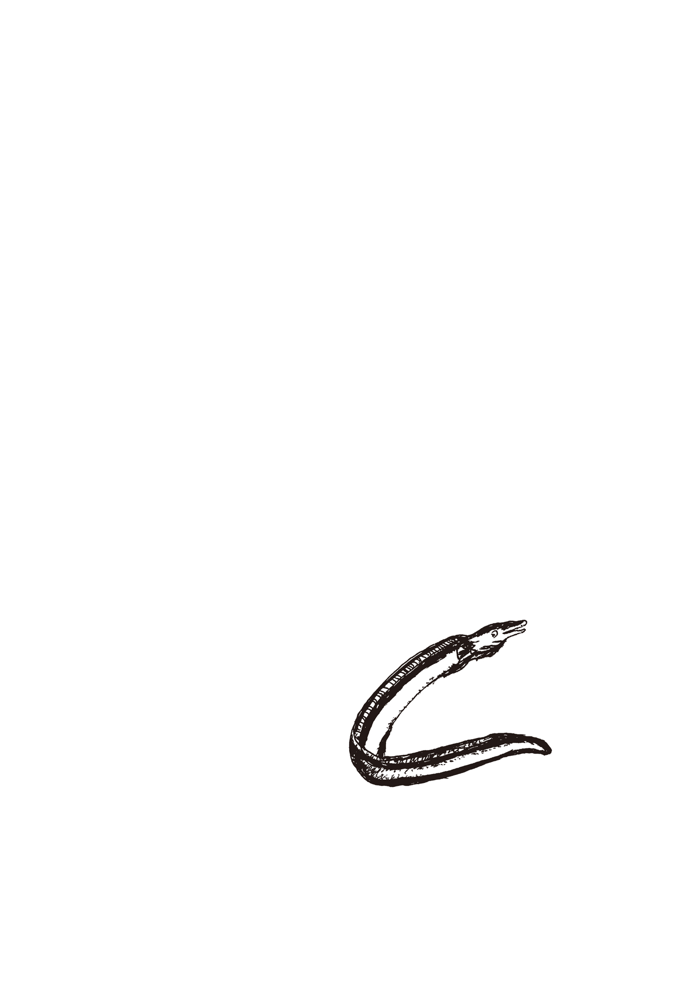
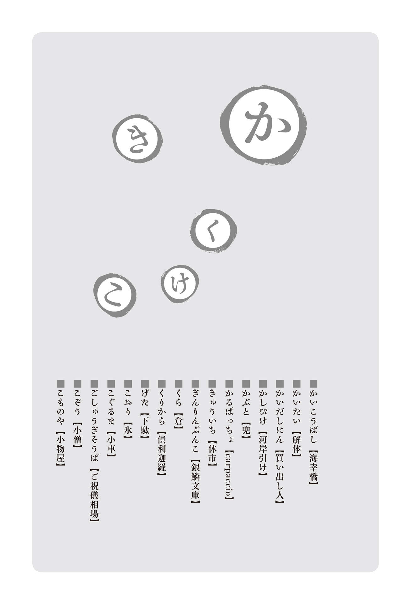
いこうばし 【海幸橋】
骨太アーチ、記憶のかなたに
過去に橋があったということで、「橋」がつく地名は多い。その意味では、「海幸橋」は崖っぷちにいる。
築地市場の場内と場外、間にはかつて川が流れており、そこに架かっていた橋が海幸橋である。橋が撤去されたのは、二〇〇二年。私は、最後の四年間、この橋を使っていた。
それはもう骨太、マッチョ系の鉄のアーチ橋だった。川幅に対して、大げさすぎるアーチだったけど、モンスターみたいな市場の入り口にはふさわしいたたずまいだった。水色のペンキは煤ぼけ、赤さびをさらしていたが、それがかえって「風雪に耐えてきた」という威厳のようなものを与えていた。長靴のオッサンたちが行きかい、暮れには正月飾りや暦の屋台が出て、オッサン連にまじり、特大の日めくりを買ったことも、今はなつかしい。
現在、橋は親柱だけが残っている。
撤去が決まると保存運動がにわかに起こり、橋の由緒が明かされた。構造的には「ランガー式補剛タイドアーチ橋」といい、日本初のランガー橋とわかった。斜め対称に設置された照明付きの鉄鋼の親柱は、日本には珍しい「アムステルダム派」のデザインだという。
創架は一九二七年。関東大震災から四年が過ぎており、現市場の建築工事にさきがけ、架けられた。大震災の復興事業のなか、架橋のデザインについては「虹の架け橋のごとくに」という号令のもと、さまざまなアーチ橋が誕生したが、海幸橋もそれを体現していたことになる。新市場への希望に満ちた架け橋である。
建築史上、貴重とわかっても、すでに撤去は決まっており、管理者である中央区は、アムステルダム風親柱だけを記念に残すことにした。創架時の深いグリーンの色に化粧直しされ、中央区の区民有形文化財という名誉の称号まで与えられている。
「海幸橋」という言葉は、地名というほどではないが、築地市場の入り口の名前として使われている。この先、どうなるのだろう。地図上の名前としては、消えてしまうのだろうか。中央区に尋ねると、その計画は未定ということだった。
五〇年後、同じ場所で、親子がおしゃべりしている。
「どうしてここ、海幸橋っていうの」
「昔、ここに大きな市場があって、海幸橋っていう橋が架かっていたからよ」
人が大騒ぎして残したとしても、モニュメントなんて人の都合次第、いつなんどき消えるかしれない。海幸橋交差点とか海幸橋通りとか、地名として残し、語り伝えていくのもあり、と思うんだけど。
いたい 【解体】
マグロは「おろす」んじゃないの？
「ビルの解体」や「解体新書」はともかく、「マグロの解体」には、素直になれない。
河岸のマグロ屋さんに聞いて回る。
「マグロはおろすなの？ 解体なの?? 」
「おろすでしょ」
おお、よしよし。魚は、やっぱり「おろす」なのだよ。
しかし、もう一人の私が首をかしげる。
「マグロみたいにあんなでっかいヤツ、小さくしてくのって、気分はビルの解体。マグロは解体じゃない？」
たしかに、冷凍マグロを切断する機械は「解体機」という。「おろし機」じゃ、大根おろしをすってるみたいで、あの巨体に立ち向かう迫力いずこへ、である。
でもなあ......。解体ショーとかいってさ、ショーが付くのが、いやなのかも。マグロをおろすことは、河岸の日常的なお仕事である。それを見せ物にする。いかがなものか。
すると、もう一人の私があざ笑う。
「だったら、包丁式はどうなのさ」
しぶしぶ、手もとの江戸時代に刊行された『料理切形秘伝抄』、もちろん復刻本を開く。これは包丁式の参考書で、コイ一匹、巧みな包丁さばきの結果であるところの切った形を、これでもかというくらい、図解している。
「日本の伝統なのよ、包丁使いを見せるのは。解体ショーは、包丁式の現代版」
だけど、包丁式には格式というか、精神性があって......。
こんなことで一生を終えるのもなんなので、広辞苑に頼るとする。意味の一つとして、〈家畜をバラバラにする〉とある。魚には触れていない。そら、みたことか。
しかし、マグロも養殖が幅をきかす時代。養殖マグロは家畜に近い気もするしなあ。
こうしてウジウジしている間も、解体問題はズンズンと独り歩きを進めているようだ。
子供魚教室に参加した。司会の元気なおねえさんが大きな声で開会宣言した。
「みなさーん、今日はサケの解体ショーでーす」
私も負けずに叫びたかった。
「ちがう、ちがいます。魚はおろすでーす」
だけど、歓声をあげる子供たちに、泥水をぶっかけるようなこと、どうして言えようか。
いだしにん 【買い出し人】
浮気されても待ってるわ
水産仲卸の売り子をやって一三年。思い出すに、買い出しのお客さんとは「浮気もんの亭主なり」と、言ったら叱られるだろうか。
もちろん、その範疇外もあり、ではあるが。
「さ、あとはお茶を買って」などと、帰りぎわにこちらの耳に届く程度につぶやく方がいる。サカナはアンタとこ一筋、という意味である。じゃないかもしれないが、同業者が連なる河岸のなか、そう解釈したほうが身のためである。気分がいい。
買い出し人がやって来る時間は、決まっている。昨夜の店じまいの時間、ランチの仕込み状況など、それぞれの都合でまちまちだが、「あら、あの人来た、もうそんな時間」と、時計代わりになるほど正確だ。新しい箱から選びたがる人、こちらにおまかせの人、それぞれのやり方に付き合い、グチに大きくうなずき、冗談話をしかけ、買い出しが終われば「さ、がんばってもうけてきてよ」のこころで送り出す。職人の古女房のつもりってとこですか。
しかるにどうしたことだろう、姿を見せないのである。
「来なかったね」で、その日は終わる。三日、四日。河岸の一週間なんて、あっという間だ。それでも来ない。
浮気が隠し通せないのと同じで、理由はすぐわかる。
仲間の店にお使いに行く。すると、通路三つを離れた店で品物を見つくろう姿を発見したりするのだ。売り子を五年もやれば、目に入るのは一にお客で、二に商品、こっちのほうが気づくのは早い。急いで別の通路に飛びこみ、会わないようにする。バツが悪いのは、あちらさまである。
そうやって、放っておく。追いかけるのは、すなわちよそのお客を奪うことであり、知らんぷりが掟である。
戻って来る、来ないは自由。戻って来たら、いつも通りに応対する。照れの気持ちがどこかにあるはずで、それを掘り起こしてなんになろう。よくできた女房が、亭主の好きなおかずでもこしらえ、普段通りに食卓を囲む。そのような平常心が大切である。
とまあ、平然とかまえているつもりだが、もしかしたら明日は、と、気弱な虫が場違いな言葉をかけさせる。
「明日もお待ちしていまーす」
当の買い出し人さんからは、「スナックみたいじゃねえか」と苦笑いされたものだ。
しびけ 【河岸引け】
波打ち際に立った時の、あの感覚
灯りが一つ消え、また消え、「おつかれさん」の声といっしょに人が去り、音が失せ、張りつめた空気がほどけていく。
仲卸棟の大屋根の下、河岸引けとはよく言ったものだ。波打ち際に立った時、足もとの砂がさらわれていく、あの感触に似ていなくもない。
午後一時を回ると、どこの店頭もきれいさっぱり洗われ、がらんどう。石畳の水たまりに防犯用の裸電球の赤い色が浮かび、猫が横切っていく。居残りのマグロ屋さんが仕事をしているはずだけど、氷の解ける音まで聞こえるような静けさだ。
セリ場の向こうから川風が吹き抜けていく。
胎内めぐりをしているような暗さを抜けると、いきなり真っ昼間の光に襲われ、ちょっとだけ茫然とする。
一〇分も歩けば銀座。街のざわめきは、これからだというのに。
ぶと 【兜】
魚の王様は、頭だけでも別格
タイの骨は硬い。頭を落とすにしても力がいるし、包丁の刃もいたむ。そこで、頭を落として納入、という注文がけっこう多い。残った頭は、捨てるには惜しい。一個一〇〇円なりほどで店頭販売とあいなる。
タイの頭を焼けば「かぶと焼き」、煮たら「かぶと煮」というところから、河岸では、料理名にちなんで「かぶと」と呼んでいる。
ここ一〇年、頭はタイだけでなく、キンメダイやブリ、アマダイなども並ぶようになった。料理屋さんにとって頭の痛い生ごみ処理や人手不足を補うために、魚をおろして納入することが増えた結果である。
しかし、どんなに頭が氾濫しようとも、「かぶと」とつくのはタイだけである。料理名からという慣習的な面もあるが、つらがまえでも得しているようだ。
お人よし顔のキンメダイ、色味が異なるブリ、女顔のアマダイ、それぞれに味は秀逸ながら、顔立ちがかぶとというには物足りない。魚の王様は、頭だけでも別格なのである。
るぱっちょ 【carpaccio】
河岸に新風送った偉大な料理
カルパッチョは、河岸に新風を送った偉大な料理、と位置づけたい。
「ワタシが小僧してたころ、白身を追いかけるのは料亭や割烹。寿司屋が加わったのが高度成長期もなかごろだろうか。そこに今度は洋食屋ときた。洋食屋が白身だよ。いやあ、河岸も変わったよ」
二〇〇〇年の初め、私が働く店の社長は、感慨をこめてそう言った。洋食とは、イタリアンやフレンチのことで、河岸では、中華料理を除くと、海の向こうからやってきた料理は、「洋食」なのである。
社長は、戦後すぐに河岸入りした小僧からのたたき上げで、小物屋一筋でやってきた。今は小物屋という言葉もすたれたが、得意先は寿司や天ぷらの店だ。社長は、得意先回りと称して、寿司や天ぷらの店を食べ歩き、この方面に関しては、聞きほれるほどの知識も持ち合わせている。
そんな社長にとって、わが店で「洋食屋の親方」が、タイやスズキ、カンパチ、ホウボウ、コチと活けの白身を買い求める光景は、驚きそのものであったのだ。
おそらく背景にあったのは、バブル時代に始まるカルパッチョの流行だ、と思う。オリジナルは仔牛肉だが、日本では魚介類ベースで定着。それまで洋食屋さんからの注文といえば、ムニエル用のヒラメやシタビラメくらいであったものが、刺し身に使える魚ならなんでも、と変わっていったのだ。
こうして白身使いのおもしろさに目覚めたのだろうか、グリルやポワレなど加熱料理用にも、いろんな魚の注文が入るようになった。売り子経験からいうと、料理人は新たな素材にはとても慎重だ。しかしこの場合、カルパッチョという下敷きがあり、急速にメニューを広げていったようだ。
カルパッチョは、洋食屋さんの魚使いを自由にした。そして、河岸は新たな客層を取り込めた、そう思う。
そうそう、社長も今は「洋食屋の親方」ではなく、当たり前のようにして「シェフ」と言うようになった。
ゅういち 【休市】
胃袋に休みはない
わが家には、二種類のカレンダーがある。ひとつは、河岸のひとじゃない夫用の全国共通版、もうひとつは、私用の築地市場専用版、通称「休市カレンダー」だ。折り合うことを知らないこの夫婦は、それぞれのカレンダーで予定を組むのですれ違いばかしだ。
なぜ、すれ違いばかしか。休市カレンダーは、共通版にくらべ、かなり変則的なのだ。基本的には日曜と祝日、さらに不定期で水曜休みが加わる。生鮮食品を扱う性格上、長期の休みはなく、最長は大晦日から正月にかけての五日間だ。
この形に落ち着いたのは、そう古い話ではない。
戦後しばらくは二日、一二日、二二日と「二の日」が休みだった。
「あのころは、カレンダーをもらうと、まっさきに息子は二の日と日曜が重なる日を探すの。その日だけは、父親といっしょに朝ごはんを食べられるし、遊んでもらえるでしょ」
昭和ひとけた生まれ、仲卸のおかみさんの思い出だ。
世の中は、すでに週休制。そこで青年層を中心に「日曜休市論」なるものが展開された。市場の文化団体「銀鱗会」の当時の機関紙を読むと「日曜休市は、市場の合理主義か、封建主義の対立にある」と、それはもう熱い。この日曜休市論争は、なんとまあ一〇年間も続き、晴れて日曜休みとなったのは、東京オリンピックの建設ラッシュにわく一九六一年のことだった。
休市の設定は、生産者や消費者との意見調整、東京都の休市に関する条例の見直しなど、多くの問題をクリアしてのことで、そうそうすんなりとはいかない。
かつて大正デモクラシーのなか、無休から月の二二日を休みにしようとしたとき、「胃袋に休みはない」と、猛反対されたそうだ。たしかに胃袋に休みはない。今も昔も、休市設定の根っこにあるのは、胃袋と人間のせめぎあいである。
んりんぶんこ 【銀鱗文庫】
歴史と人が交わる知の岸辺
「銀鱗文庫」のことは、一九九九年の初め、朝日新聞に掲載された「築地物語」というシリーズで知った。蔵書一万冊とあるではないか。河岸で働き始めて一年近く、図書室があるなんて思ってもみなかった。
魚がし横丁にある建物の二階、おずおずとドアをあけた。部屋のぐるりをしめる古ぼけた書棚をのぞくと、新刊本なぞなく、雰囲気も匂いも、町はずれの古本屋さんを思わせた。それでも私は有頂天だった。もうこれで図書館通いや古本屋めぐりをしなくてすむ。読みたかった魚河岸の歴史や魚の本をたくさん見つけたのだから。
閲覧用の机も椅子も、廃品回収に出してもおかしくないシロモノだけど、それを差し引いてもあまりある市場資料の宝庫。足を踏み入れたその日から、銀鱗文庫は、河岸いちばんのお気に入りの場所になった。
そして二〇一一年、文庫の留守番役に空席ができたので、志願してそのお役についた。
文庫の誕生は一九六一年。水産仲卸でつくる任意の文化団体「銀鱗会」が、会の創設一〇周年記念として、開設した。書棚はその時のもので、河岸のダンナ衆が寄付したオーダーメイドのオンリーワンで、今、おなじものを作ろうとしたら、いくらかかるだろうか。景気はウナギ登りの時代で、その時々のベストセラー、松本清張や池波正太郎、司馬遼太郎ほか人気作家の作品など、手当たりしだい、という調子で買い求め、一万冊の高みに達したようだ。
現在も、銀鱗会が運営しているが、昔と違って、維持費に四苦八苦だ。経理も任されている留守番としては、週になんども預金通帳を開いてはため息である。新刊本は買えず、みなさんにおねだりするしまつ。留守番の報酬は、ブラック企業レベル。周囲から顰蹙を買うほどオニのやりくりをしまくり、やっと月末を迎えられる。
それでも、逃げ出す気はさらさらない。なにしろ、ここには「築地市場の存在証明」がぎゅうぎゅうに詰まっている。資料フェチという因果な性癖から抜け出ることができない私には、やっぱり河岸いちばんのお気に入りの場所なのだ。
文庫は、一般にも開放されており、いろんな人がやってくる。蔵書の中心は水産と市場関係なので、それを目当てに、魚のセールストークを仕入れにくる市場人、ゼミや卒論の資料探しの学生がめだつ。そして、情報収集に立ち寄る産地の方、お茶を飲みにくるだけの人も。奥には、日本橋時代からの貴重な市場資料も保管。希望の方には、ちょっぴり鼻高々でお見せしている。
ら 【倉】
猛暑の夏でもストーブ囲む
「生 倉 」という言葉には、なかなかなじめなかった。生の魚を保管しておく冷蔵庫のことだ。冷蔵庫って言えばいいのに、と心のうちでほざいていたが、河岸の歴史を知れば、なるほどである。
昭和の初め、築地市場をつくるおり、魚河岸人は、いくつもの希望を東京市に出している。そのひとつに、仲卸棟の各店舗に「穴倉」を、というのがあった。台所の床下収納庫みたいなもので、人が立てるくらいの深さに掘った地下倉庫だ。「穴倉」は、結局、却下となったが、日本橋魚河岸時代には鮮魚保存のためになくてはならぬもの、誕生したばかりの冷蔵倉庫よりずっと信頼できるツールだった。
一九三五年、築地市場開場。時代の先端を行くモダン市場が用意したのは、今に続くコンクリート造りの堂々としたビル、冷蔵倉庫だった。
しかし、形が変わっても、保管場所に変わりはなく、倉と呼ぶ習慣は続いた。言葉というもの、ことに今日と明日の境目なしの河岸では、よほどの号令でもかけなきゃ、新たな呼び名は生まれない。
冷蔵倉庫は、時代とともに、低温化していった。そして、摩訶不思議な言葉も成立するのだった。
「超低温冷蔵倉庫」。冷蔵にあらず、マイナス六〇度の冷凍庫である。
入ったことがある。マグロがならんでいた。白いかたまりに見とれるまもなく、鼻毛が凍った。深呼吸すると、冷気が氷のかたまりみたいになって、のどから肺へ入っていくのがわかる。このなかで作業する人は、南極探検もかくやとばかりの重装備の防寒着に身を包む。それでもせいぜい三〇分。超低温は、体力を想像以上に消耗させるという。
猛暑日でも、超低温の倉の前にはストーブの赤い炎がゆれている。午後遅く見かける炎を囲むシルエットは、じっと固まったままだ。
おかげ、という言葉を思い出す。冷凍マグロが海からあがったままの鮮度で食卓にのぼるのは......。おいしいものの陰には、こんな「おかげ」も潜んでいる。
りから 【倶利迦羅】
かば焼きは敷居が高くても
「くりから？ うちのオヤジ、自分が始めたって、さんざん、自慢してたな。特許、とっときゃよかったなんて。だけど、だれだって考えるよ、あんなもん。オヤジ？ 大正一四（一九二五）年生まれ。二年前に死んだよ」
細く割いた鰻を串にグルグル巻きにした「くりから」。ちょっといわくありげな名前にひかれ、出自をさぐることにした。そしてたどり着いたのが、仲卸「カネキ」の裏で鰻を割いてた小池雅彦さんだった。
「戦後でさあ、天然の鰻が入ってくんだけど、サイズなんておかまいなし。メソもまじってる。メソ？ だからさあ、メソメソ泣いてるちびっこってとこ。小鰻だよ、小さすぎてかば焼きにならねえ、おかずだよ、おかず。それを、カネがとれるようにって、串に巻いて売ったわけ。バカにされたってさ、仲間には。そんなもん、売るのかって。だけど、居酒屋や焼き鳥屋が買って行くようになって市民権、得たんじゃねえの。当時一本一八円。エッ、何年ごろ？ 昭和三〇年代だよ。ああ、もうここまで。金輪際、話しかけんなよ。数、数えるんだから」
丑の日の二日前。小池さんはタオルのねじり鉢巻き、首にもタオル、目を血走らせて鰻を割いては串に刺している。たまったところで数勘定。そのくりかえしで、このところほとんど寝てないのだった。
くりからを漢字で書けば、「倶利迦羅」。辞書には、倶利迦羅竜王の略で、炎のなかで剣に巻きついた黒竜が剣をのみこもうとしている像とある。イメージ的にはどんぴしゃりだけど、ごたいそうな名前をつけたものだ。しかし、入れ墨の人気の図柄と知れば、誕生の時代背景とともに察しがつく。鶴田浩二や高倉健のやくざ映画がブームのころだ。
丑の日が終わって数日後。小池さんは、気の抜けたサイダーだった。
「ああ、終わった、終わった。一年のお祭り騒ぎも終わったよ」
くりからは、お祭り騒ぎも一段落、とんと暇になっての職人仕事である。名前は最近、ちょっとあぶないものから「鰻の串焼き」というあたりさわりのないものに変わってしまい、私としてはおおいに不満。くりからまで、世の中の風潮に染まることないじゃないのにさ。ま、家庭でかば焼きを焼くのはたいへんだけど、くりからなら焼くだけのこと。おまけに安いときているから、ときどきおかずに買っている。
た 【下駄】
ＶＩＰ待遇のお立ち台
「下駄履いてすずしき河岸の往き還り」
河岸の俳人、故尾村馬人 さんの作。わが銀鱗文庫にも、夏の午後、カラコロ小気味のいい音をたててやってくる人がいる。ゴム長から解放された市場人に、もっともお似合いなのが下駄ではないかしら。
市場には、そしてもうひとつ、下駄がある。
こちらはすごいことになっており、セリで五万円だ六万円だの値がつくこともある。もっとも、値のいかんは、下駄の上に乗っかるものに対してである。花びらの重なりのように盛り上げた生ウニ、その容器を下駄という。
ウニは古くからの食用だが、容器に盛った生ウニの流通が始まったのは一九六〇年前後。築地市場へ、北海道函館の業者さんが売りこんだのが発端だった。ウニの主食は昆布で、昆布の名産地すなわちウニどころである。しかし、ウニの食欲はすさまじいものがあり、手を焼いた産地では、駆除をかね、手間のかからない生での出荷を考えたのである。
容器は、初めから下駄だったのだろうか。ウニの品質などを自主管理する仲卸の団体「うに取引委員会」の靭江 貞一さんによると、ウニの担当になった六〇年代なかば、すでに下駄であったというから、早い時期に考えられたのだろう。
当時は北海道の元国鉄マンが、背負子をかつぎ、夜行列車で運んできた。それまでウニといえば「練りウニ」しか知らない築地だったけど、認知されるのは比較的早く、高級食材として寿司屋や料理屋が買っていた。といっても、扱う量は知れており、セリ場のかたすみでのささやかな相対売買だった。
あれから半世紀。ウニの出世ぶりは、まったくたいしたものだ。売買はセリに。ウニがならぶ場所は、市場の奥、室温四～七度に設定した厚い扉の向こう。市場最高のＶＩＰ待遇である。弁当箱と呼ぶ木箱、塩水漬けのガラスびんと、今や容器もさまざまだが、陳列台の先頭に誇らしげに置かれるのは、下駄に盛ったそれである。ここ数年は、中国マネーやブランド熱により、「羽立」「橘」「東沢」などトップメーカーのものになると、一箱数万円の値をたたきだす。
生ウニは、軍艦巻きというスタイルを得て出世街道にのったことは知られているが、下駄の役割も大きかったと思う。下駄は小さなお立ち台。そこに整然とした重なりを見せる姿は芸術的ですらある。おいしさは、まず目から。下駄がそれを可能にした。
おり 【氷】
かき氷特盛り、一日七〇万杯
「きょうは何回？」
「予定一八回」
市場橋門を入って朝いちばん、リキチャンとのあいさつは「回数問題」である。場内を歩く以前、この数で忙しさが推測できる。
リキチャンは築地のミスターアイスマン。氷配達人のことを、アメリカではそう呼ぶらしいが、リキチャンは、市場橋門の製氷工場から場内の氷販売所に氷をとどけるのが仕事だ。氷といっても、一四〇キロもの氷柱で、それを四トントラックに最大二五本積んで出動する。夏と冬の差はあれ、市場が忙しくなればなるほど、出動回数は増える。
魚商売に氷は欠かせない。陳列台に敷き詰める。配達用の箱にも、市場に留めておく魚箱にもごっそり入れる。買い出し人の持ち帰り用にも、ポリ袋に詰めた氷を添えるのが習慣。女性とちがって、魚は冷たくすればするほどお喜びなのである。
だから、夏は、もういくらあっても足りない。買いおきの氷はたちまちなくなり、そのたびに小車や台車で氷販売所に走る。販売所は場内六カ所にあり、どこからでもひとっぱしりの距離。ボタン一つで角氷をくだく砕氷機があり、たいていはそれを買う。
そんなわけでリキチャンの出動回数は夏、いきおい増える。午前二時ちょい過ぎ、製氷工場の真下にある貯氷室の扉が開き、巨大氷柱のお出ましとなる。それから一一時過ぎまで、ほぼ休みなし。最多忙日で二二回の往復である。
逆に冬は、あまり必要としないので五～六回という日も。リキチャンが有給休暇をとれるのは、冬だけだ。
場内に製氷工場はもうひとつあり、市場全体での氷の販売量は、一日平均、七～八月がおよそ一四〇トン、一～二月が三〇トンだ。
一四〇トンの氷といわれても実感がわかない。大きな数はつかみどころに欠ける。身近に引き寄せようと、かき氷の数に換算してみた。
特盛りで、一杯二〇〇グラムの氷を使うとすると、七〇万杯である。炎天下、一〇万人動員の野外フェスで、全員が七杯食べる......。なんか、これはこれで、実感に乏しい。要するに、実感がともなわないほど膨大な量の氷に助けられ、魚たち、元気にやってるというわけです。
ぐるま 【小車】
乗せても切っても昼寝でも
「桐生製車」に一台の小車が運ばれていた。ずいぶんと使い込まれたようで、車輪はさびつき、荷台がちょっといたんでいる。
場内の一角にある「桐生製車」は小車の販売と修理をてがけ、この道五〇年の桐生源三さんがひとりできりもりしている。週に数回は、どこかしら不調をうったえる小車が持ち込まれ、桐生さんのやっかいになる。
ロの字の梶棒と荷台にふたつの車輪。時代劇などで見る大八車に似ているが、荷台に特徴がある。長さは二メートル近く、幅七〇センチと、きわめてスリムにできている。
実はこの形ゆえ、市場ではそれは重宝しているのである。
細い通路が行きかう仲卸棟、どこへでも小車なら入りこめる。ことにマグロには小車がいちばんだ。巨体が楽にのる。車高が低いので、石畳の通路を行くのにも、揺れが柔らかい。一〇〇キロ超えのマグロを店に運び入れるのはたいへんだけど、荷台でふたつ割りにすれば人力を軽減できる。包丁が使いやすい高さなのだ。
小車名人は、発泡スチロール箱を身の丈ほどに積みあげ、四〇箱ぐらいは軽く運んでしまう。ロの字の梶棒のなかに入り、平均をとりながら運ぶのだけど、重みでヘタすりゃ体が宙に浮く。そこをなだめすかしてひょいひょいと。名人と呼びたいゆえんである。
さらに昼寝によし、おしゃべりや弁当をつかうベンチ代わりにも。河岸引けには、ここで小さな将棋大会も。重宝ぶりは、あげるときりがない。
それもそのはずで、桐生さんの父、国次郎さんが大八車をお手本に、市場用に考案したものなのだ。大八車は、江戸時代、車大工の「八左衛門」が考案したとされている。八人力の働きをするから、はたまた「大工の八」がつくったので、大八車と称されたそうな。日本橋魚河岸、大根河岸でも、めっぽうな働きをみせたが、場内奥深くへと入りこむのは無理がある。そこで、築地市場開場のころ、国次郎さんが市場用に改良したのだった。
桐生製車に持ち込まれた小車は、いたんだ箇所を補修し、仕上げに黄、白、赤のラッカーで化粧直しをし、屋号をふと太と記すと、持ち主に返される。本体は堅い樫でできているので、手荒に扱っても一〇年やそこら働ける体力はあるという。場内の小車の数、ざっと一〇〇台くらいだろうか。
しゅうぎそうば 【ご祝儀相場】
大輪の花火のように
ご祝儀相場が立った日は、あっちにもこっちにもヒソヒソワイワイの輪ができる。その品物を扱っていなくても、気になるのが市場人の性ってものだ。それを扱うご当人は、「今日は儲けなし」と渋い顔をして見せるが、高値に付き合う客を持っているあかしで、まんざらでもない様子である。
ご祝儀相場という言葉は、株の世界が本家本元らしいが、市場では「年明けの初ゼリや季節物の初荷につく高値相場」をいう。打ち上げ花火のようなもので、年明けや季節の到来を祝い、産地に向かっては「今年もよろしく」のあいさつなのである。
ご祝儀の高値相場を扱える仲卸は、ひとにぎりだ。まして仰天価格ともなれば、よくて二軒か三軒か。市場人のほとんどが、雲の上の価格のそれを食べたこともなければ、だれの口に入ったかも知らない。それでも、ご祝儀相場が立った日は、大輪の花火をあおぐように浮き立つ。ここは相場に生きる人が集う場所、と改めて感じる日でもある。
ぞう 【小僧】
時代を変え、歴史を築いてきた先人
仲卸が、まだ仲買とよばれた半世紀ほど前、仲買には「小僧」がたくさん働いていた。身一つ、たいていは一〇代で上京し、主人の家に住み込んで仕事を覚えていった人たちだ。
といっても、「仕事は盗むもの」。魚の箱を洗ったり、客の荷物を運んだり、と雑用に追われる日が続く。衣食住の面倒はみてもらっているので、報酬は小遣い程度だ。
河岸でそうした経験を持つ、最後の小僧世代というべき方は七〇歳以上。みなさん、立ち居ふるまいからして、筋金入りという言葉がぴったりだ。その姿を見ては、築地市場誕生に思いをはせることがある。
築地市場は一九三五（昭和一〇）年に開場したが、その道のりは厳しいものだった。
築地市場水産部のルーツは日本橋魚河岸。関東大震災により、魚河岸が壊滅状態となったので、築地の地に移転した。表面上の事実はそういうことだが、実は移転については、おまけの要素、といっていい。近代的な施設作りも、いくつかの問題はあったが、時代の要請にこたえたもので、クリアできた。
なにがたいへんだったか。
開場の大命題は、市場体制の抜本的な改革だった。徳川時代から続く旧態依然とした市場システムを、中央卸売市場法という法律にそった近代的市場へ移行することにあった。魚河岸四〇〇年の歴史をくつがえすこの問題は、市場ボイコットに発展するほどもめにもめた。この道のりを敢然と切り開いたのが、小僧出身の人たちだった。
日本橋魚河岸の人に、新市場のあらましが見えてきたのは大正時代。河岸の古くからの有力問屋は、こぞって反対した。ダンナ衆と呼ばれる人たちで、市場運営のさまざまな権利をにぎり、そこから多くの収入を得ていた特権階級だ。公営の新市場になれば、それらを失うわけで、反対するのも無理ない話だった。
新市場構想はなかなか進展しなかった。そこに賛成派として頭角をあらわしてきたのが小僧出身の人たちだ。血のにじむような努力のすえに独立し、ダンナ階層からは「小僧上がり」と揶揄されながらも、商売で力をつけ、モノ言える立場となったのだ。さまざまな特権とは無関係だったし、魚河岸流の因習や体制にとらわれることもなく、真に理想の市場を描けた。諸外国にくらべ、衛生、流通、取引、すべてに遅れた市場に新たな命を吹き込むことを望み、突き進めたのだった。
今、最後となった小僧世代は、その後の築地市場を育てた人たちだ。ふだんはため口、憎まれ口をきいている私だが、心の底では尊敬してやまない。
ものや 【小物屋】
小さなたねでも大きな誇り
私が世話になった仲卸は「濱長」という小物屋である。顔もガタイも声も人一倍大きな社長が「手前、小物屋でして」とかしこまって言う姿に、初めは吹き出したくてしょうがなかったものだ。先々代の小澤長吉は、小物屋の組合、「小物組」初代会長であり、まずは生粋の小物屋といっていいだろう。
小物屋というのは、種物屋とも呼ばれるが、寿司や天ぷらのタネを扱う店である。マアジ、キス、コハダ、シラウオ、アナゴに貝類と、代表的なタネはいずれも小さい。マグロが大物というのを意識してのことだろうけど、簡単明瞭、いかにも河岸風の呼び名だ。
寿司ダネ、天ダネ、ともに江戸前という言葉が付き物だが、八〇歳に手の届く社長が先々代のもとで仕事していたころ、一九五〇～六〇年代初めにかけての商いの姿を知れば、なるほどである。
店にはセリ場で仕入れたものが並んだが、上物をねらう客の目当ては、富津や竹岡など内房の漁港から、カンカンと呼ぶブリキの箱を背負ってくる人たちの品物だった。アカガイやミルガイなど貝専門の人もいれば、キスやコハダ、カスゴ（タイの稚魚）が得意な人もいる。
一番電車で店に着くのが八時過ぎ。客は、時間より少し前にやってきて、出されたお茶でもすすりながら待っている。カンカンのフタがあけば、その場で売りさばけた。量は知れていたが、当時の寿司屋、天ぷら屋ともに小さな商いだったから、それで間に合った。
直接、漁師さんのもとに買いに行くこともあった。西風が吹くと、東京湾が荒れるしるしで、翌日の入荷量が案じられる。そこで、河岸が引けると、「オイ、サダオ、行ってこいや」と長吉さんの声がかかり、小僧身分だった社長は、検見川にアカガイを、子安にアナゴやシャコを、と使いに出される。体格のいい社長は、五〇キロ以上はゆうにある荷をかつぎ、電車を使って帰るのだった。
小物組が、料亭向けの魚介類を扱う上物組やカキ業会、シャコ業会などと組んで「特種物業会」として生まれ変わったのが一九六四年。七〇年代に入ると、東京湾の埋め立てや汚染が目立ち、のどかな商いは姿を消した。
今は「特種物」と言うほうが、通りがよくなり、小物屋も内外の魚介類を広く扱うようになった。しかし、店をのぞけば、アナゴやキスにうるさい番頭さんがいたりして、小物屋のしっぽ、おいそれとは消えないようだ。
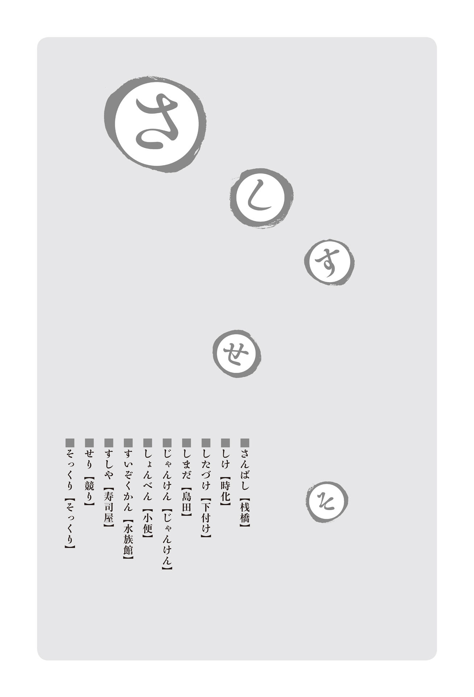
んばし 【桟橋】
隅田川と江戸湾の境は、どこ？
クサクサすると、桟橋へ足を運ぶ。洞窟みたいな仲卸棟を横切り、人と運搬車をすり抜けると、いきなり隅田川が広がるのだから、そりゃもう気分転換にもってこいである。
桟橋自体は、船という相棒がめっきり寄り付かなくなり、朝のうちは荷物の仕分け場に、昼を過ぎると、大小の車やがらくたが置かれた雑然とした広場になっている。
しかし、一九五〇～七〇年代初めの桟橋の写真は、まったく違う。
船を背景に、おびただしい数のマグロが並んでいる。この桟橋でマグロのセリをやっていたのだ。荷下ろし、計量、セリと、桟橋でおこなわれたマグロのための作業風景は、笑い声がはじけ飛んできそうなほど明るい。最盛期の六〇年代は、それこそ桟橋の端から端を埋め尽くす量。桟橋は、川に向かって傾斜しており、マグロが川に落ちて大騒ぎする場面も、再三のことだったらしい。
新造船の進水式の写真もある。大漁旗に飾られた大きな白い船。陸には花輪が延々とならんでいる。出航の風景では、乗員の家族と思われるたくさんの人がテープを握り、手を振っている。戦後しばらくは大量輸送をになう鉄道便の石炭が不足、さらにマグロ需要も手伝って、冷蔵運搬船や遠洋航海用のマグロ漁船を持つ卸売会社があったのだ。
高い建物のない時代だから、空は広く、水面は川というより海だ。そう、海にしか見えない。ちょっと気になって、「隅田川と東京湾の境界」を、東京都の河川局に問い合わせてみた。すると、まあ、驚いた。浜離宮をのぞむ市場の南端、築地川が隅田川に注ぐ地点が、海と川の境なのだという。そういえば、昔、桟橋のある一帯を「海岸通り」と呼んでいた。
船、貨車、わずかばかりのトラックという三本柱で始まった築地市場への輸送手段。船便が統計上ゼロとなったのは一九九三年だった。
二〇一四年には、「築地大橋」がやってきた。あれはまさしく「やってきた」だった。朝日にぎらつく巨大な鉄骨がクレーン船にゆられ、東京湾から姿を現した光景は、ゴジラの襲来そのものだった。そして、桟橋でおおぜいの市場人がみまもるなか、あれよあれよのうちに橋は架かってしまった。実感としての海は、ここでまったく遠のいた。
風景にも、青春時代がある。マグロ船がやってきた桟橋の青春時代。川風をうけながら、「あんな時代もあったんだよね」と笑ううち、クサクサ気分はどこかへすっ飛んでいる
け 【時化】
どなり、走り、人も化ける
河岸に入りたてのころだ。
真っ青な空。帽子が飛ばされる程度の風が吹き、汗をぬぐってくれる。仕事終わりの風の心地いいこと。てなことを先輩に話したら、バカにされた。まだまだヒヨッコだと。
雨なら漁師さんは海に出るが、風は波を呼ぶ。東京でちょっとした風でも海は荒れていることが多い。船は出ない。休漁となる。すなわち時化により入荷が危ぶまれるわけで、眉でもしかめておけ、というわけだ。
台風、爆弾低気圧と、この二つが休漁の最大要因だが、台風は、きめ細かな天気予報もあって、お客様もそれを見越して算段してくださるので、さほどの混乱はない。
やっかいなのは、暮れ、北海道を中心に荒れ狂う爆弾低気圧だ。ここで売らなきゃいつ売ると、期待パンパンのとこへあらわれるのだから、たまったもんじゃない。
船は出ない。産地で留めてあった魚を積んだトラックが出るには出たが、猛吹雪のために延着というのも、毎度のことだ。航空便でいくらか届くと連絡が入れば、担当セリ人に張り付いて、「なんとかオレのとこだけでも」と、泣き落とし戦術である。
もちろん、日付が変わる前の晩からセリ場をかけずり回る。それでも希望の魚が集まらない。仲間の店を思い浮かべる。ゼッタイあそこは持っていると、あたりをつけた店に走る。持ってはいても、勝負のこの日にゆずってくれるようなおマヌケはいない。
キリキリ胃が痛む。時化のため入荷なし、と電話した先の怒るまいことか。幸か不幸か、東京は晴天続きが多く、爆弾低気圧への理解は薄いのだ。帳場にも、「なんでないのか」と、ひっきりなしの電話である。
みながみな、顔をひきつらせ、どなり、走り、そしてささいなことでいくつもの口げんかが起きる。
時が化けると書いて時化。でもホントは、人が化ける、と書きたいとこです。
たづけ 【下付け】
数字の羅列でしのぎを削る
紙切れ、はたまたポケットサイズのノートに、解読不能な数字の羅列。こんなもん持って、危ない国の国境をウロウロしていたら、スパイと間違われるかも。
築地市場における意味不明の数字の羅列、これ、すなわち下付けのメモである。
下付けとは、セリの前に販売物を下見することをいう。「見る」だけでなく、自分なりの「値を付け」、必要によっては、メモを「書き付ける」。そこらから言うらしい。
築地市場のセリは「番号ゼリ」。いちいち「どこ産のマダイ三キロ」などと、悠長なことはやっておれない。そこで販売物には番号をふる。買う側の仲卸担当者は、下付けしながら、買いたい品の番号と値をメモするのだ。
実はこのメモ、部外者には意味不明でも、セリ参加者には一発でわかる内容、ぜったいのマル秘事項となる。
セリが始まれば、例の紙切れやノートは、ちょっとした小道具になる。
セリの値段は、指を曲げたり伸ばしたり、で示す。ゲンコツ握って親指だけ立てると「六」、という具合に。その動きを、つまり自分が出したセリ値を隠すのに使えるのだ。
これだけ重宝する下付けメモだが、セリが終われば、たいていは丸めてポイだ。
二年三年とためておいたら、すごいデータに、と思うが、実際はそうでもないらしい。セリ値は、自然条件やその日の需要、ときには気分、さらには場の雰囲気で変わるもの。過去のデータなぞ、たいして役に立たないのだ。
付き合ってわかったが、市場人は過去のことにあまり関心を示さない。過去を引きずらない。明日は明日の風が吹く体質なのだ。そうした風潮は、おそらくこうした日々の業務に関係しているのかもしれない。
まだ 【島田】
昔は、それでも余裕があったのかも
河岸では、「売れねえ」というのは、「こんちは」「元気かい」みたいな日常のあいさつである。「売れて売れて」などと言う方にお目にかかったことがない。
だけど......。
「こんちは」「元気かい」は、そこからコロコロ会話がはずんでいくが、「売れねえ」は、尻つぼみになるとこがツライ。
「売れねえなあ」「まったくだ」「どうなってんだろう」。あとは、ただもうため息。
「余裕がなくなっちまったんだよ」と、しんみり同情するのは、元かまぼこ屋のダンナだ。
「オレの若いころなんて、芸者の頭だよ。芸者は島田に結うだろ」
「島田髷でしょ。それがどうして」
「だから東京の人間は、ヒがちゃんと言えねえんだよ。だからヒマダ。暇で客が来ねえ。売れねえッ。ここまで説明させんのか」
半世紀前のお話。昭和は遠くなりにけり、と嘆くダンナでした。
ゃんけん 【じゃんけん】
セリの勝負に仁義あり
「じゃんけんポン」
いい年をした男が、愛らしくもじゃんけんする図が、セリの最中に始まる。
下付けを終え、わが手中に、とのぞむセリだけど、ときに二人、三人と同じ値を示すことがある。それ以上、値に変化がないとき、さてどうするか。じゃんけんで決めるのだ。買い手すべてが見守るなか、これほど公平なことはない。じゃんけん、すばらしい。
しかし、不思議なもので、どうしても欲しいとなると、意気込みが違うのか、負けないものらしい。最初はグー、でガッとげんこをつき出しておき、チョキを出すとたいてい勝つよ、と自信満々の人がいたけど、ホントかしら。
仲良しのタシタさんは、じゃんけんはせずに、ゆずることが多い。
「オレ、負け癖があるから」と笑っていたが、これも戦略の一つ。相手にそうやって貸しをつくっておけば、いつか返してもらえる。
セリのじゃんけんには、仁義あり、である。
ょんべん 【小便】
「まじかよ」「かんべんしてよ」
「まじかよ」「かんべんしてよ」
と、ションベンには、このような言葉がつきものとなる。
ある仲卸人の人生最大のションベンは、「ボラ子五〇キロ」。カラスミの材料となるボラの卵は、ボラ子と呼ばれ、高級食材の一つだ。
「キロ五〇〇〇円で五〇キロ。やったと思ったら、ションベンなんだからさあ」
ションベン、すなわち返品のことである。
ションベンの由来は、ツラの皮の厚いヤツを意味する「蛙のツラに小便」から。はたまた蛙のまたの名は「かわず」、買わないに通じる。
「オレの目利きにケチつけやがって」
返品してきた客のツラの皮の厚さをなじり、それでも応じなければならない負け惜しみといったところか。
ま、たまにはこういうこともあるのです。
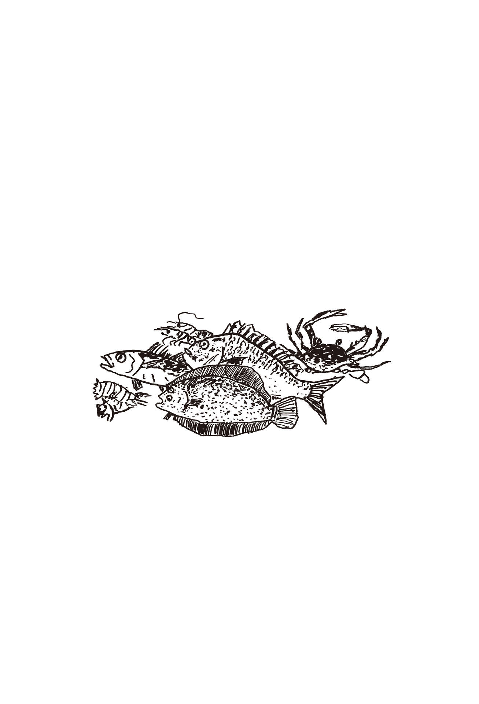
いぞくかん 【水族館】
日替わり、世にも稀な水族館
隅田川沿い、四五〇〇平方メートルほどの敷地に卸売会社の大きな水槽がいくつも並んでいる。夏も、ここだけはヒンヤリとしている。魚が泳いでいる。泳ぎの魚、活魚のことは「活け物」、この場は「活け場」と呼んでいる。ここは、セリの出番を待つ活け物たちの楽屋である。
活け物の入荷量は、一日平均、ざっと四五トン。平均的なマダイの大きさを三キロとすると、日々一万五〇〇〇尾がここにやってきていることになる。
マダイを引き合いにだしたのは、実際に圧倒的な数で入荷するからだ。マダイと張り合うのがヒラメだ。続いてカンパチ、ヒラマサ、シマアジといった養殖白身の御三家。水底にしんと静まり返っているのはカレイ類。カワハギ、イサキ、イシダイ、クロダイなどの磯魚。トゲで武装したオコゼ。活け物ならではの透明感が美しいイカ類。時にはウツボが牙をむき、エイがヒレを思いきりのばし、泳いでいる。
そこらの水族館には負けない数と量。やってくると翌日には外へ出ていく、世にも稀な美味なる日替わり水族館でもある。
セリ前の活け場。仲卸の活け物担当の下見が始まる。水中で手のひらを魚の腹のあたりに持っていき、泳ぐ方向になじませながらすくいあげる。プロの手にかかると、魚もしゃくにさわるほど、おとなしい。彼らがチェックしているのは、傷の有無、太り具合、色つや。いや、それよりも「パッと見、うまそうか」。
てんでに持った大学ノート、メモ帳、バインダーにはさんだ紙片などに結果を記す。買い、ならおよその値を。仲間には決して見せない極秘メモだ。
丁々発止のセリが終われば、仲卸の水槽に運ばれ、誇らしげに泳ぐ姿を披露。名人技の活け締めを経て、刺し身や寿司に使われる。
つまりは、刺し身や寿司にしなきゃ、もとがとれないのだ。活け物の流通の歴史は古く、江戸時代には始まっているが、飛躍的に増したのは一九八〇年代のバブル期だ。札びらの舞ったあの時代にもてはやされたことが象徴するように、運ぶのにはコストがかかる。活魚として市場にやってくる魚は、値が出て当たり前、高級イメージのある刺し身や寿司用でないと務まらない。並みいる鮮魚のうち、活け場出身は、エリートクンたちなのだ。
だから、流通の途中で「あがり（自然死）」となれば、半値以下。加熱調理用に回される。「活け」と「あがり」には、天と地ほどの差がある。
しや 【寿司屋】
だんな衆の「サロン」だった
「そんなことしてたら、店、つぶれちゃうよ」
愚痴やら羨望を込めて語られる「築地寿司屋伝説」なるものがある。
築地市場は、場内外を問わず、寿司屋が多い。軒を連ねて、と形容したいほどになったのは最近だとしても、江戸や明治から河岸に寿司屋はつきものだった。
そんな昔はさておき、市場の長老が小僧時代に見聞きしたことを話してくれた。
「河岸の寿司屋を使うのは、今でいえば社長連、だんな衆と呼ばれた人たちでね。朝、セリ場を一回りして、ちょっと寄って寿司のふたつみっつもつまんで店に行く。店が終われば、また寄って一杯やって、仕上げにちょいとつまんで家に帰る。そんなふうで、アタシら小僧にはとてもじゃないが近寄れない場所だった」
それぞれに行きつけがあり、いつもの顔ぶれで朝に語られるのは、セリ場の動き。やれ、房州のタイが値を下げたの、常磐のスズキをどこの店がしこたま買ったとか。時にはセリ場でみつくろった初入荷の魚の一本もぶらさげてくる。初物の試食というわけで、板前に刺し身といくつか握ってもらうと、あとはお好きなように、と鷹揚なとこみせるのも、だんなたるゆえんだ。
河岸が引け、舞い戻ると、冷や酒でのどをうるおしながら、本日の商いがどうのこうのと始まり、仲間のうわさや息子の愚痴やらに流れてお開きに。たまには、カアチャンのごきげんとりに寿司折りでもこさえてもらってさ。
寿司屋は、だんな衆の憩いの場、コミュニティーであった。
今、河岸の寿司屋は外のお客さんでいっぱいだ。喫茶店も定食屋もおでん屋も、寿司屋に暖簾替えした。それでも長い行列ができている。
しかし、だんな衆の姿は、まず見かけない。
「いい時代だったんだよ」と長老たちは懐かしむ。
どこの仲卸の店でも、今は社長がいちばんの働き者だ。ターレを運転し、人手がたりないときは、配達にだって出かける。連日、寿司屋でおだをあげてるようじゃ、店はつぶれかねない、そんな時代になってしまった。
河岸には「いい時代だったね」話がいくつも転がっているが、寿司屋伝説はその最たるもの、かもしれない。
り 【競り】
女性が立つのも当たり前に
青果のセリ場では、セリをおこなう女性は珍しくない。男性と同じ制服制帽で、セリ台に立つ姿の凜としていること。見ているだけで、こちらまで清々しい気持ちにさせられる。
水産物部では少ないが、それでも最近、筆頭セリ人にかわって、ときどき活け物のセリ台に立つ女性と知り合った。手ごわい男どもがいならぶセリだ。
「そりゃもう緊張しますよ、なにしろ週に一度は長靴が飛んでくるっていう伝説の現場ですから。向こうも真剣。示した値段を見落とされると、カアッとなる。バカヤロウは当たり前の世界」
色白のかわいい顔して、コロコロ笑いながら、そんな話をしてくれた。
女性の進出が遅れている市場だけど、卸売会社それぞれに女性のセリ人もいるのである。
セリ人というのは、セリ台に立ってセリを行うだけではない。卸売会社に入荷した品物の多くが、セリではなく、相対で販売される今は、公設の市場での業務を遂行できる資格、いわゆる「セリ人免許」を持つ人をいう。セリ台に立つ立たないは別として、要は開設者である東京都が行うセリ人免許の試験に合格した人たちである。
試験のハードルは、高い。まずは卸売会社で三年以上の実務経験を積むと、受験資格が与えられる。試験内容は、東京都の場合は筆記と論文。市場法と呼ばれる法律や実務の専門的な知識が問われ、法令集を丸ごと暗記しなくちゃならないほどの猛勉強が必要だ。
市場の仕事というと、重い荷物を運ぶなどの肉体労働をイメージしがちだが、セリ場に大量の荷を展示するなどは、専門の分野があり、セリ人の仕事ではない。セリ人は、あくまで産地から荷を集め、販売するのが仕事、女性の進出は可能なのだ。
とはいえ、問題がないとはいえない。このところ、市場の女性たちの間で話題になるのが、保育施設のことだ。待機児童ゼロをめざす横浜市では、中央卸売市場内に市場時間で働くママたちのための保育施設ができた。この話題は、女性たちにパッと広がった。それだけ切実なのだ。
男社会といわれる場所だが、実際のところ、男どもはけっこう親切である。女性を大切にしてくれる。もっとも手ごわいライバルに成長すると、とたんにキバをむいてへこませにかかってきますがね。ま、これはどこの社会でもよくあることだ。
もしも若いころ、セリ人という選択肢を知っていたなら......。それには遅すぎる自分の年をうらみながら、彼女たちの仕事ぶりを目で追っている。
っくり 【そっくり】
これぞ河岸流おとな買い
河岸引け近くの仲卸店頭。半端な数でアジが残っている。
客がやってきた。
「いっちゃってくれませんか」と売り子が客にささやく。客がアジの上で、クルリ人差し指で輪を描く。「そっくり（いくよ）」のサインである。こんな場合、声に出すのは野暮天で、「しようがねえなあ、買ってやるよ」の顔してぞんざいにクルリ、がお決まりの形だ。
そっくり、すなわち「ぜーんぶ」の意味である。
「こんなこともありました」と、かつてマツタケを買いあさったことのある長老が、ポツラポツラと語ってくれた。
マツタケシーズンも終わり近くとなったセリ場である。セリの調子もだれだれで、値は低めの一本調子で動かない。そこで、長老、「そっくりっ」の一声をかけた。仲間に「やられた」の空気が漂う。
「そっくりやっちゃっても、冷蔵庫に放りこんどいて、暮れにでも売れば、半分腐っちゃっても商売になるわけですよ」
あのときの、おいしい話に、長老の頰がちょっぴりゆるんだ。
「こんな芸当、なれてなくちゃできませんよ。気配ですよ、気配を読む。周りの買う気の気配。この先の荷の動きの気配。いろんな気配がウッと自分を押してくるわけです」
そっくりにくらべたら、カネにまかせてのおとな買いやら爆買いとやら、子供じみたものに思えてくるのですが、さていかがなものでしょう。
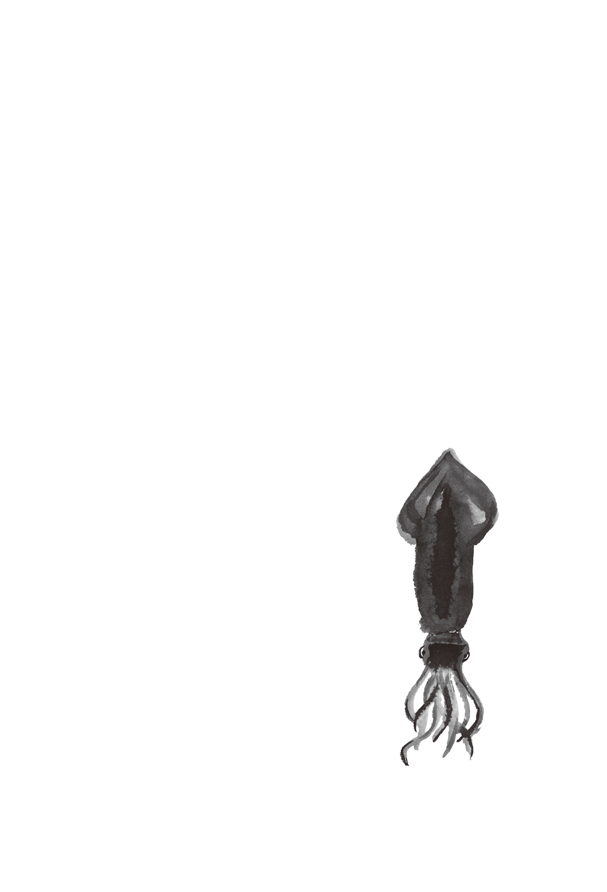
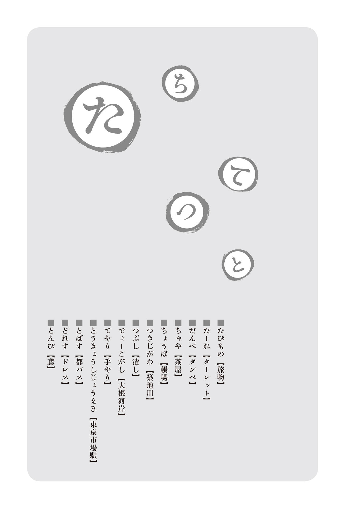
びもの 【旅物】
大事な魚が旅立つ日
「旅は好きだが、旅した魚はごめんだね」
そんな口をきいた時代がある。東京湾でとれた魚を「江戸前」ないしは「地物」、遠くからやってきた魚を「旅物」と称していたのだった。
この言い方は、日本橋魚河岸時代はもちろん、築地市場となってからでも戦後しばらくまで通用した。
当時、江戸前物は船でやってきたが、多くの鮮魚は貨車便だ。いかにもはるばる旅してきたという感じだ。おまけに、冷蔵コンテナなどなく、炎天下でも、産地で氷をぶっかけただけでくるのだから、鮮度は知れている。旅物といえば、ランク落ちの代名詞だった。
東京湾でとれる魚が減り、輸送技術が発達した今、旅物という言葉は死語になった。
海が汚れた一九六〇～七〇年代以降、海外からの輸入はいきおい盛んになり、タコはアフリカ、アカガイやハマグリなど貝類は中国産の流通が国内産をうわまわるようになった。八〇年代に始まったノルウェーのサーモンは、初めから刺し身需要を意識して航空便を使い、たちまち人気の魚になった。
こうして「旅物」が幅をきかす今、築地市場では「旅に出そう」という機運が高まっている。国内で魚を食べる量が減り、売れ行きはパッとしない。しかし、海外の魚食熱は高まるばかりだ。そこで、旅へ、というわけだ。
すでに輸出を手がける仲卸もいるが、築地の高級魚は香港をはじめ、東南アジアの和食店での評価が高く、けっこうなお値段でも応じてもらえる。朝いちばんの航空便を使えば、現地のディナーに間に合うので、そうした店の早朝は、海外向けの荷造りに忙しい。
この取り組みをもっと広げようと、仲卸の組合も動き出している。先日は、組合代表がベトナムのホーチミン市を訪ね、試食会を開催、手ごたえを得て帰ってきた。海外から輸入目的の視察団も珍しくない。築地の魚は、その扱いがていねいだし、「ツキジ」というブランド効果も大きいのだ。
旅の魚を受け入れる側から、旅に出す側へ。
ツナ缶のためにアメリカへ大量のマグロを輸出していた戦後、あるいは俵物と称して干しなまこなどを中国へ送っていた江戸時代、いずれの時代も食べることを我慢して輸出にまわしていた。外貨獲得という切実な目的があった。
魚を海外へ旅に出す話は珍しくないけれど、このたびの「魚食の減少」という裏事情を思うと、なんだか複雑な気分である。
ーれ 【ターレット】
発想のもとは、戦艦だった
ターレット。略してターレ。
その数二二〇〇台ほど。築地市場を代表する運搬車だ。ターレだけで写真集を、というカメラマンと知り合ったが、多くの人がユニークな姿に目を奪われるようだ。
運転台にはハンドルがついたたる状のものが据えてあり、座席はなく、立って運転する。うしろには三メートルほどの荷台。車種により、最大積載量は一～二トン。といっても重量オーバーは毎度のこと。タイヤは、空気タイヤではもたないので、丸ごとゴム。これ以上は考えられないほど、運ぶことに特化させてある。
ターレット。お菓子のタルトレットみたいで愛らしい語感だ。しかし、物騒なものが始まりだった。戦艦の大砲である。
戦後のことだ。戦艦から突き出た大砲の機器を内蔵する根っこの部分、その名もターレットと呼ぶたる状のものにヒントを得て、自動車メーカーが開発した。
戦艦のターレットは三六〇度回転する。開発者はそこに目をつけた。応用すれば小回りがきくクルマになる。実はこれこそターレの得意技で、運転台のたるも三六〇度回転し、場内の狭い通路でもターンが可能。ミズスマシのごとくに走り回れるのだ。
それにしても、と思う。豊洲新市場へ引っ越しとなったら、ターレはどうするのだろう。
ターレの正式名称は「ターレット型構内運搬自動車」。運転には小型特殊自動車免許以上が必要なれっきとしたクルマで、公道も走れる。ということは、豊洲への道を、最大時速一五キロというターレが、引っ越し荷物満載で数キロにわたって連なるありえへん光景となるのだろうか。いくらなんでも真っ昼間とはいかないだろうから、深夜、目の玉（ライト）をギラギラ光らせての大パレードだ。あるか、ありえへんか。ターレを見るにつけ、わが心、千々に乱れっぱなしである。
 んべ
【ダンベ】
んべ
【ダンベ】
「海のダイヤ」をがっちりガード
河岸のマグロ屋の店先には必ずある。これがなきゃ、商売あがったり。それがダンべ。マグロを入れる冷蔵ないしは冷凍のストッカーのことだ。一〇〇キロアップのマグロが二本三本ゴロリと入る大きさだから、縁起でもない言い方だけど、お葬式の棺の三倍、いや四倍はあるだろうか。頑丈なカギが複数個。さすが「海のダイヤの貯蔵庫」。ガードは堅い。
それにしても、なんでストッカーがダンべなんだろう。
聞いて回ったが、昔は「木の箱」だったというだけで、肝心のことはよくわからない。
江戸時代に各地の産物を記した「日本山海名産図会」に、ちょっとした発見があった。この本にマグロ漁のことがのっており、定置網をしかけ、網にかかると「数多のダンベイ」が総がかりで漕ぎ出し、捕獲した、とある。添えた絵には、大勢の男たちが小舟に乗り、生け捕ったマグロを船に持ち上げている。注釈によると、ダンベイとはこの船のことをいい、「ずんぐりして平たい船」とある。
船が先か、箱なのか。ともあれ、ダンべの語源はここらにありそうだ。
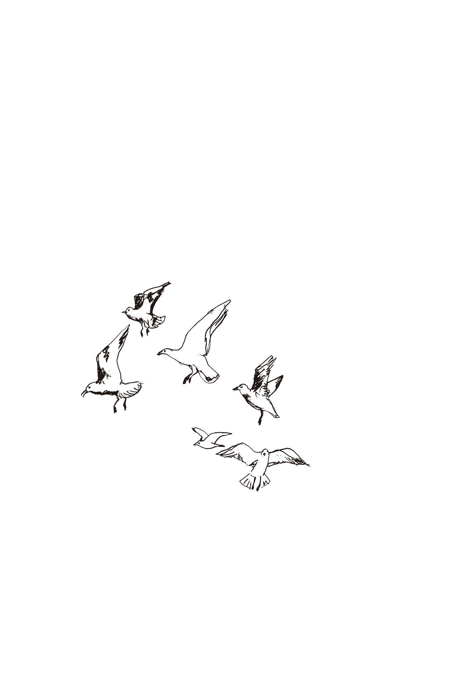
ゃや 【茶屋】
江戸から続くすぐれものシステム
「急げ、茶屋出し、あがっちゃうぞ」
「茶屋札、なくしたって？ バカヤロウ」
魚河岸ひよこ時代、茶屋という言葉が耳に飛びこんできた。
はて、いったい？
茶屋といえば、京都の祇園に金沢の東の郭と粋筋の場所。きれいなおねえさまのおもてなしとかあって。でも長靴のオッサン連が集うこの河岸に茶屋？ そりゃ、河岸のオッサン連の好物は、一におカネで、二に女とお酒、が相場だけど、いくらなんでも。
そして探し探して行きついたのは、仲卸棟に連なる殺風景過ぎるコンクリートのたたき。河岸流ねえさんがたはいましたけどさ。
茶屋。正式名称は「買荷保管所」。読んで字のごとし、買い出し人の荷の保管所だった。
買い出し人は、仕入れた荷物を持ち帰ることもあるが、仲卸店の人に茶屋へ運んでもらう。茶屋は、地区ごとに分かれており、客の荷物をまとめてトラックで届けるのだ。
朝っぱらからムダ金使わぬ買い出し人が場内でラーメンなぞそそくさ詰め込み、電車で自分の店に帰るころ、茶屋から荷物も届く、という寸法。それなりシステマチックにできている。
トラックの出発時間は決まっており、間に合わなければ自前の配達となる。客の荷物は、似たり寄ったりだから、荷物に店の名前を記した茶屋札を添えるのは必須。茶屋札といっても、ただの紙っきれだから、風にでも飛ばされた日には、だれの荷物かわからない。こうして朝の仲卸は、茶屋がどうので、とかくせわしい。
この茶屋システムは、日本橋魚河岸時代に始まった。当時の客の運搬ツールは、大八車である。河岸の魚屋は、入り組んだ細い路地に連なっており、大八車は乗り入れできない。そこで河岸周辺に専門の預かり場所があり、それを茶屋と呼んだ。今とおなじように、買った荷は、店から茶屋へ運んでいた。
潮待茶屋、という名を残す買荷保管所もあるが、こちらは船人用。河岸の前を流れる日本橋川は浅く、江戸湾の潮が満ちなきゃ船を出せない。それを待つための場所だった。
いずれも仕入れや船からの荷下ろしで一仕事したあとだ。お茶の一杯もふるまわれたのだろう。そこで茶屋。
江戸から続く配送システムが未だ現役、というのも、いかにも河岸らしい。
ょうば 【帳場】
店を支える秒速の気配り
仲卸でのお勘定は店の奥の帳場で、というのがしきたりだ。
売り手は、お客が買った品物の名前、目方、値段を帳場に通すだけ。ややこしい計算やぬれた手でおカネをあつかわなくてすむようになっている。
帳場に座っているのは、おかみさんか「帳場さん」と呼ばれる女性たちだ。評判のいい帳場さんは他店からの引きぬきもあるくらいだし、よしんば店がつぶれても帳場さんはわりとすんなり次の勤め口もあるようで、河岸のプロとして成立している職種である。
なにしろ客が詰めかけるのは朝のいっときのこと、帳場さんは目の回る忙しさだ。領収の明細書はたいてい手書きだし、消費税のおかげでつり銭はやたら細かい。電卓をたたきながら、電話注文を受け、注文伝票を書いては各担当に渡す。配達が遅れているだの品物がどうだのというクレーム電話の対応もある。鬼の形相で細かな伝票を書きながら、顔をあげたときはにっこりスマイルで、お客に受けそうな冗談のひとつも言ってみせる。店がうまく回るのは、ひとえに帳場さんの腕次第、店の司令塔といっていい。
すごいと感心することは、まだある。
お札を渡されるときだ。二カ月に一回、八〇軒ほどの仲卸さんから銀鱗会の会費をいただいて回るのだが、秒速で渡されるにもかかわらず、野口英世の顔が同じ向きなのだ。たまに社長から、という場合、てんでばらばらである。
帳場さんに聞くと、お札は必ず「同じ向きにしまっておくから」秒速で渡しても向きは同じであり、そうしなきゃ、「気持ちが悪い」そうだ。お財布も、ちゃんと各人の顔をそろえて入れているという。お札の向きなんて、どうでもいいやとずぼらに生きてきた私には、別世界の驚異である。
プロ、と言わずしてなんと言おう。河岸の男どもも、帳場さんには頭が上がらない。
きじがわ 【築地川】
築地、水辺のある風景
築地を「都会の中心にある小さな水郷」と、教えてくれたのは、鏑木清方。夜会巻きに髪を結った黒紋付きの女を描いた「築地明石町」などで知られる日本画家だ。
明治生まれの清方は、幼少期から青年期にかけて、築地を縦横に走る築地川近くに住み、「築地川」や「築地の河岸」などの随筆を残している。情感こまやかに描いた水辺の風景は、築地歩きにかっこうの道案内として、何度となく読み返してきた。
河岸から銀座方面にちょっと歩けば、新橋演舞場が見え、采女橋がある。橋の下は、高速道路が走っているが、もとは築地川が流れていた場所。清方の子供のころは、木々がうっそうと茂って昼なお暗く、かわうそが出ては人をだました、と、まことしやかにささやかれていたという。
この采女橋あたりで、築地川は二手にわかれ、本川は浜離宮に沿って、隅田川に注ぐ。今は、この本川の河口だけがささやかに残り、築地市場との境界になっている。
もう一方は、築地川東支川の名で、波除神社方向に向かい、隅田川へ。かつての築地市場は、隅田川と築地川本川、東支川と、三つの川に囲まれていたことになる。
築地市場は「シマ」と、呼ばれた時代がある。
吉原の別名も「シマ」で、足抜けされないように、おはぐろ溝でグルリを囲まれた地形をいった。それにたとえて、と聞いた。一九五〇年代、国会で「築地市場は伏魔殿」と騒がれたそのころの話だ。ともに、中はうかがい知れず、河岸人の心は今より、ずっと荒っぽかった時代のことだ。
筑地川東支川が、すっかり埋め立てられたのは、一九九五年。二〇一六年には、そこに場外の市場施設「築地魚河岸」が建てられた。
清方の描く水の風景は、跡形もなく消えた今だが、それでも川のあったころを記憶に残す人は多い。イナっこ（ボラの幼魚）やフッコが泳ぐのが見え、海幸橋で釣り糸をたれたという市場人もいる。
この川で、生計を立てていた方もご存命だ。波除神社の近くにある、コーヒー店「網兼」は、昭和の時代、船宿だった。
「アタシが、ここんちにお嫁に来たのは、昭和二三（一九四八）年」というハツコさんが店主で、店の壁には、満々と水をたたえた東支川の写真がかかっている。
「東京湾にお客様、ご案内してたのよ」と、ハツコさん。市場でアナゴやキスなどの天ダネを用意して、沖で揚げたてをふるまう遊覧船を出していたのだ。
「家の裏が小さな桟橋になっていて、姑は、膝ついて、お客様、送っていた。お客様のこと、お殿様と呼んでたわよ。大会社の社長さんとか、ええ、ほうぼうのだんな衆。新橋の芸者衆も一緒。芸者連れで、東京湾に出てお涼みすんの。粋よねえ」
小さなカウンターの向こう、ハツコさんは、当時を思い出し、目を閉じるのだった。
川の思い出は、きれいなばかりではなかった。酔っ払った河岸人同士のけんかで、人がおぼれ死んだこともある。学生運動さかんな時代、干上がった川筋で、ヘルメット姿の学生の捕り物劇もあった。メタンガスがわき、臭くてかなわなかった時代も。
だけど、不思議なくらい「川はきれいだった」という証言が多い。
「日中には、川底の泥をさらすこともあるが、夕潮が満ちてくると、青柳の影をうつし、美しい」と清方は書いた。東京湾は、すぐそこで、潮が引けば、塵芥 のたぐいもぬぐわれ、満ち潮になれば、新たな水面を描き出す。
思い出も同じようなものかもしれない。いやなことは、引く潮といっしょに消え、残るのは美しい景色。
私が知る築地川東支川は、すでに雑草が生い茂る水無し川だった。セイタカアワダチソウ、ススキ、ヒルガオ、都会のまんなかで、野生のままに猛々しく茂る草花の群れを、海幸橋に立って、眺めることも多かった。それはそれで、美しいものだったと覚えている。
ぶし 【潰し】
料理人の命に生まれ変わる
「つぶし」は、水産でも青果でも買える。だけど、店頭で見かけることはまずない。うぶな買い出し人が入手することはむずかしい。
謎の「つぶし」。
いや、たいしたものではない。たとえばエビの頭とかホタテガイのヒモとか熟しすぎたトマトとか。「つぶし」はそれらの総称だ。
そんなもん、どうすんじゃい、と問うなかれ。料理人の命であるソースやだしには、またとない材料なのだ。
なれた買い出し人は、どこそこの店のだれのとこに行けば持っているかちゃんとご存じで、わが命 のために買ってくださる。この世には、殻つき丸ごとのエビを買っても、頭はいらんからむいてくれ、という奇特な方も多く、それを無料、はたまた手間賃くらいのお値段でおわけするのだ。
本来、つぶしとは、かまぼこやさつま揚げなど練り製品の材料になる魚介類のこと。スケソウダラ、イトヨリ、グチ、エソ、サメといった魚たちだ。それらを原形がわからぬほどに「すりつぶして」使うから「つぶし」である。
そのすそ野が広がったと思えばいいだろう。
私は、つぶしのヘビーユーザーだ。とくにつぶし用の大玉トマトを見つけると、うれしい。これで塩味だけのトマトソースをつくる。水一滴も入れずに、ヘタを取って弱火で煮るだけ。薄皮は煮ているうちに、ペロリとはげるので、箸でつまんで捨てればいい。水分があらかた飛んで、トロリとなったらできあがりだ。たくさんつくって冷凍し、パスタやトマトシチュー、冬は鍋用にも使う。
こういう時って、ホントいい人になったみたいで幸せだ。つぶし用トマトは、買い手がつかなければ捨てられる運命だ。それを救う。なんと気持ちのいいことだろう。
しかるに、スーパーでよりどりみどりのトマトがあると、選びまくっている。いい人なら、形かまわず、熟しすぎでも、その後の彼らの運命を思えば、なんだっていいはずだが、本能がそうさせない。
帰るとき、いつも思う。私って、ただのシブチンか。妹は、シブチンだと断言する。
ぇーこがし 【大根河岸】
ハイカラ野菜が時代をリード
築地市場の青果部のルーツは、京橋青物市場。
ま、これはよそゆきのいい方で、ふだんは「大根河岸」。さらに、東京風になまって「でぇーこがし」と呼べ、と市場の古老よりの伝言である。
銀座中央通りを京橋方面に向かうと、頭上に高速道路が走っている。このあたりの銀座を背にした左側一帯が、大根河岸のあった場所だ。
寛文二（一六六二）年、数寄屋橋に誕生した青物市が火災で焼失、一〇年後にこの地に移ってきたという。京橋川という掘割があり、この水運を利用して発展。青物市場としては、神田市場に続く規模となり、一九三五年、築地市場の開場までこの地で営業していた。
「大根河岸」という名のいわれは、はっきりしない。が、こんなことを、想像してみる。
昔から親しまれてきたのが大根である。江戸のころには、「大根一式料理秘密箱」とか「諸国名産大根料理秘伝抄」と、オール大根メニュー集が出版されているほどだから、その人気の高さ、消費量の多さはうかがい知れる。
まっしろな大根が山と積まれた幾艘もの船が、京橋川の河岸に漕ぎ寄せる。色のとぼしい時代、さぞや目にしみる光景だったろう。そこで人呼んで「大根河岸」。
あるいは、神田や千住の青物市場が、幕府の御用市場として名を売ったのに対し、大根河岸は、庶民がお客。大根は、庶民派の野菜。そこらにも関係してないだろうか。
しかし、大正、昭和の時代、大根河岸の主役は、ハイカラ野菜だったようだ。
明治も終わりに入ると、東京は都市化に拍車がかかり、ホテルや洋食屋が増えていく。ジャガイモ、三寸ニンジン、キャベツなど、洋野菜の需要が増していったが、当時、洋野菜を扱っていたのは肉屋である。肉屋といっても、野鳥や鶏肉が中心で、洋野菜の商いは、いってみれば鳥屋の片手間仕事だった。
その洋野菜を精力的に扱い始めたのが、大根河岸だった。
なんといっても、銀座は地元。洋食流行の発信地である。
横浜と行き来する新橋ステーションにも近く、横浜で、外国人居留地や外国船に洋野菜を納入していた問屋の参入もあった。
幕府ご用という束縛のなさ、堅苦しさがないことも幸いしたのかもしれない。思い切り新しい商いに邁進できたのだった。
当時の問屋は、産地のことを山といい、農家に生産を委託していた。
洋野菜の生産は、はじめは、江戸川区の砂町、次に船橋、さらに東京湾にそって南へ南へ伸びていった。千葉県の君津や姉崎などが、後にレタスやパセリの一大ブランド産地になっていくのは、そんな流れがあってのことだった。
大正一二（一九二三）年の関東大震災後の復興は早く、市場らしい整備もととのい、築地での営業始めは、一九三五年二月一一日。
前日は、大根河岸から銀座を回って新市場まで、問屋の従業員や八百屋など総勢二五〇〇人もの大パレードがあった。そろいの半纏に紺の股引、白緒の草履のいなせな姿もあれば、紋付き羽織にモーニング姿も。思い思いの正装で、楽隊を先頭に、練り歩いた。
午後一時、築地新市場に到着。花火があがり、広場には初入荷のリンゴを積んだトラック十数台が勢ぞろい、時計台下で来賓が迎えるなか、入場式となった。
「駕籠でゆくのは西瓜じゃないか。わたしゃ、築地にゆくわいな」
これは、このおりに八百屋たちが大合唱したざれ歌の歌詞である。元歌は、「わたしゃ売られてゆくわいな」とあって、色街に売られていく女を描いている。身売りされる事情はそれぞれでも、先行きの見えない不安に涙にかきくれる。この心情は、そっくり大根河岸の人々のものであった。
今でこそ、築地は海外からの観光客も押し寄せるにぎわいの街だが、当時は足の便の悪い、海辺のさみしい場所。銀座を庭のようにして営業してきた大根河岸の人にとって、そんな場所での商いは、ただもう不安でしかなかった。電話もメールもなく、買い出し人が、市場に足を運んでくることで成り立つ商いである。おそらく、築地から豊洲へ、という感覚より、ずっと切実であったろう。
パレードの日、大根河岸での出発風景は、行く者送る者、涙涙であったという。当日は、朝方から氷雨が降っており、この情景をいっそう、切ないものにした。
そして八〇年以上。
取引量こそ、青果の大市場である大田市場にかなわないが、レストランや料亭さん好みのタケノコやマツタケなどの季節先取り野菜やハーブ類、イタリアンやフレンチ用の新野菜などでは、一歩リードしている。
大根河岸で築いた「ハイカラ野菜の聖地」というトレードマークは、いまも変わりないようだ。
やり 【手やり】
お年を聞いたら指が勝手に
築地市場のセリは、手やりでおこなう。一から九まで、決められた指の形で、値を示す。たとえばゲンコを握って、親指、人差し指、中指を立てると「八」。単位は、ものにより、万にも千にもなる。万か千かは、暗黙の了解といったところだ。
手やり名人によれば、指と頭は別行動だという。指が現在のセリ値をさしている間、頭は次に落とす値を考えている。ひとつのセリが終わるのに数秒。指が勝手に反応するくらいでなきゃ、まだまだヒヨッコらしい。
高齢の方に、お年を聞く。ちょっと照れたりしながら、指をヒョヒョイと曲げたり伸ばしたり。
翻訳すれば「言いたかないけど、やだねぇ、もう八〇だよ」
こと数については、口で言うより、指が先に動く。セリで手やりをしたのは、もう何十年も前のことだろうけど、それが習い性になっている。根っからの市場人なんだなあ、とちょっとしみじみである。
 うきょうしじょうえき
【東京市場駅】
うきょうしじょうえき
【東京市場駅】
モデルはＮＹの市場
西日が濃い陰影をつくる鮮魚のセリ場。早朝の喧騒は失せ、コンクリートと鉄でできた太い柱の間を川風がすり抜けていく。
昔、同じような時間帯に、ここでヴォーグだかなにかのファッション撮影があったという。送られてきた雑誌のそのページを見たら、日本じゃないみたい。市場人一同、ビックリポンで大笑いしたそうな。
カメラは、ときおり、上手なウソをつく。そのウソ、見たかった。いや、なれるものなら、ディレクターとして、私も同じウソ、やらかしてみたい。
私の目にうつる鮮魚のセリ場は、モノクロームの映画で見たヨーロッパの古い鉄道駅である。ここを往年のミステリアスな女優ローレン・バコールにカチッとしたスーツを着せ、歩かせたい。カメラマンは、同じく天国から招いたファッション写真の大御所リチャード・アヴェドンだ。
ヨーロッパの古い鉄道駅、というイメージは、単なる思いつきではない。ここがかつて駅のプラットホームであったことによる。
築地市場をつくるときの至上命令は、大量輸送が可能な鉄道便をとりこむことだった。当時、誕生したばかりの米ニューヨークのブロンクス市場がそのスタイルだった。
今は高層ビルがならぶ商業エリアとなっている汐留の停車場から側線を引き、場内の奥深くまで鉄路を敷いた。
側線の名は、「東京市場線」、駅名は「東京市場駅」である。
一九三五年、築地市場開場後には期待通りの活躍を見せた。戦後のニュース映画のアーカイブスで、八ケ岳高原の畑のなかに停車した貨車に、キャベツを運びこむ映像を見たことがある。「貨車が向かうのは、東京の台所、築地市場です」というナレーションは、ファンファーレみたいに晴れやかで、物流の主役ぶりを見せつける光景だった。
五〇年代の鉄道便最盛期には、一日一五〇両もの貨車が入線した。汐留―築地間の鉄路は、入線待ちの貨車で埋まったという。
やがてトラック便が台頭する。築地市場への輸送手段の変化を見ると、貨車便とトラック便による入荷量がクロスするのが東京オリンピックのあった一九六四年。以後、貨車輸送の量は放物線のように落ち込んでいく。
最終便が去ったのは、一九八七年一月三一日深夜のこと。東京市場駅に「蛍の光」のメロディーが流れた最初で最後の夜となった。
ばす
【都バス】
乗ったら分かる、魚河岸バージョン
築地市場の正門を入ってすぐのとこに都バスの停留場がある。新橋駅から「市場専用」のバスが走っているのだ。市場専用と言い切れるのは、バスに乗ってみたらすぐわかる。
椅子のシートはビニール製で、魚や貝をしこたま詰め込んだ仕入れかごから水滴が落ちても、ふけばどうってことないようにできている。シートの色は海の色で、買い物とコーディネート。壁の「休市カレンダー」という気配りも、またうれしからずや、である。
席に座り、聞こえてくるのは、買い出し人のスッピン商い話。「まいったよ、昨日は閉店だってのに、どっとだよ」「売れたんだから、いいじゃねえか。オレ、おっつけられたアマダイ３本、まだ冷蔵庫に寝たまんま」「いくらで買った、それ」とかなんとか。
そのうち訪れる沈黙の時間。沈黙は金なり、もうけの生みの親。それぞれに、めまぐるしくも本日の仕込みの算段、はては売り上げの計算などしている気配。ふつふつとバス内には「今日も......」の空気がみなぎってくる。
ああ、ナイスな市場バス。もちろん、だれでも乗車可能である。
れす 【ドレス】
へんてこ英語、まかりとおる
ソーイングマシン→マシン→ミシン、と伝言ゲームみたいに変容した和製英語。河岸にもある。たとえばドレス。むくつけき男には似合いそうもない言葉だが、河岸のドレスは出刃を振りかざし、魚の頭を落とし、内臓をかきだせば、一丁あがりとなる。頭無し、ヘッドレスのことで、海外との取引であみ出された言葉だ。
殻つきのカキは、セルという。初めて聞いて、これもドレス同様、頭を悩ました。辞書をひき、謎がとけた。殻つきカキのシェル・オイスターからの変容だった。殻ガキを生食する習慣は、東京オリンピックを機に、フランスやアメリカから日本に入ってきた。あちらさんの言い方が、セルなんていうへんてこりんな言い方で定着したのだった。
河岸は頑固者ぞろいに思えるけど、お客様は神様である。ドレスやセルのように、けっこう柔軟に、先様に合わせることもあるのだ。シタビラメのフランス語ソールも、シェフ様御一行に合わせ、シタビラメより通りがいいくらいだ。
んび
【鳶】
おかずとんびに倉とんび
冬の午後、河岸に、どこからともなくトンビの群れがやってくる。空の高いとこで、ゆったりと大きな孤を描いているかと思うと、いきなり急降下して、広場にこぼれた魚くずに飛びかかる。それはもうみごとなものだ。
昔、「倉とんび」と呼ばれる人たちがいた。市場界隈にたむろする一種のブローカーだ。どこの倉（冷蔵倉庫）には、なにがどのくらいあるという情報を頭に、必要と聞けばすばやく調達する。狙った獲物に向かう手法は水際立ったものだった、と聞いた。
私には、「おかずとんび」の名があった。包丁上手のヤマチャンがつけた。ヤマチャンのおかず用にとっておいた魚のかまや腹のきれっぱしを、横取りするのが私だったからだ。それは、ちょっとした遊びみたいなもので、そうやってふざけあっていた。
おかずとんびの名は、ヤマチャンが定年でやめ、なくなってしまった。倉とんびもずっと昔のことだ。河岸にくるトンビは、害鳥としてとらえられているが、どこかにくめないのは、ふたつのとんびが、胸の奥底にしまわれているせいだろう。

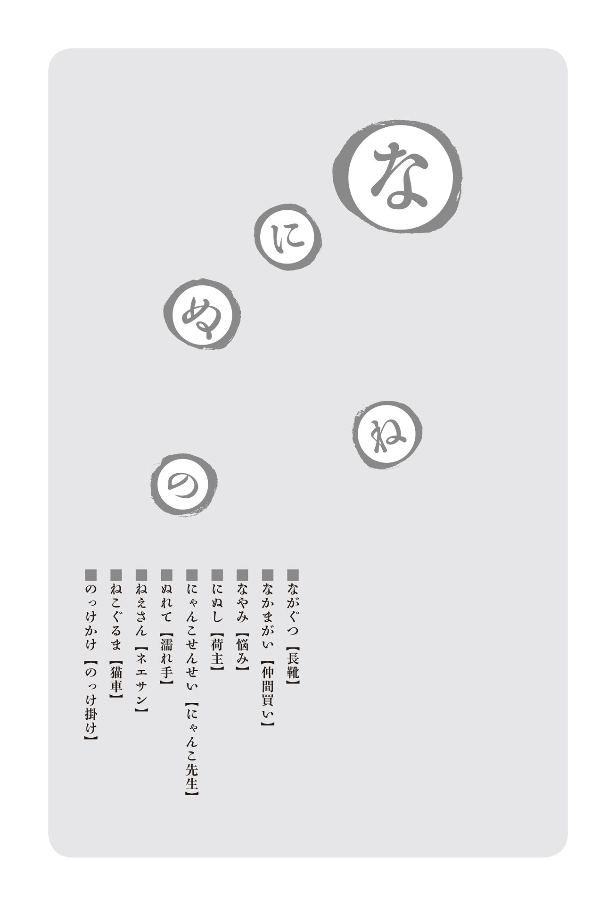
がぐつ 【長靴】
長靴お散歩エリア
新年初荷。この日ばかりは、あいさつ回りの商社マンらしきスーツ姿もチラホラ。足元を見ると、おやまあ、ズボンをたくしこんだ長靴着用である。カッコ悪いと思うなかれ。これぞ場内歩きのまっとうなスタイルなのだ。
水浸しの場内では長靴が必須。市場人はもとより買い出し人も長靴だ。
なにかと便利な履物で、ふくらはぎのブカブカ部分は物入れにも重宝する。入っているもので、その人の仕事だってわかる。折りたたんだスポーツ新聞を入れているのは、買い出し人だ。もう片っぽうに、お札や領収書を入れた仕入れバッグを突っ込んでりゃ、百発百中買い出し人で、それもかなり市場通いに年期がいっていると断言していい。懐中電灯を突っ込んでいる人は、マグロのセリ場帰りの仲卸だ。セリ前の下見で、懐中電灯は肉質を見るのに欠かせない道具なのだ。
まだどんぶり勘定のよき時代。帳場からカアチャンの眼を盗んで長靴にお札の数枚もたくし込み、銀座はたまた新橋へ直行、という社長もいたそうな。長靴さんオッケイのキャバレーやらスナックがあった時代のことである。
長靴は、履きなれると歩きやすい。私も水からは縁遠い図書室の留守番役だけど、着くとすぐに長靴に履きかえる。扁平足にもやさしく、歩きやすい。ちょっとそこらにお出かけするのも長靴だ。
市場のあるのは築地五～六丁目、晴海通りを渡って七丁目、さらに新富町あたりまでは、おてんとさんがカンカラ照る日でも長靴闊歩でおかしくない。市場関係者の住まいや事務所が多いし、魚をおろす作業場や仕分け場もある。午後に界隈を歩くと、塀に長靴が干してあったりして、ちょっとほのぼのだ。高層ビルにすっかり囲まれてしまったけれど、ここだけは戦争の被害も少なかったとかで、看板建築の肉屋や米屋もあって、昭和の雰囲気を色濃く残している。私の好きな長靴お散歩エリアである。
しかしこの数年、古ぼけた家並みに都会の風が舞い込んできた。先日は、市場人ご用達の超レトロな喫茶店が、おしゃれなピッツァ店になり、出版社の男性に誘われて行った。店を出たとたん「ワッ、フクチさん、長靴ですか」と、彼は素っ頓狂な声をあげた。あのね、ここは長靴闊歩のエリアなんだよと説明したかったのだが、ピッツァ二枚を平らげた身にその余力は残っていなかった。
こうして長靴はしめだされていく。街は姿を変えていく。ああ、としか言えない
かまがい 【仲間買い】
魚の貸し借り、生き残りの知恵
仲卸間の「ヘエーな商習慣」に、「仲間買い」というのがある。品切れの場合、同業の仲卸から買って、お客の注文に間に合わせるのだ。
敵に塩を送るという故事があるが、そんな悲壮感というか重々しさはない。感覚的には、長屋のしょうゆの貸し借りだ。
河岸に入りたてのころ、注意されたものだ。「仲間の悪口を言う時は、気をつけな。最後まで聞いときながら『それ、オレの親戚』なんてこと、ザラだから」
親戚同士や半世紀以上の幼なじみ、さらに後継ぎは仲間の店で修業するのが伝統で、師弟関係めいたものができる。仲卸の相関図は、真っ黒に塗りつぶされるほど、濃い。長屋のしょうゆの貸し借り的雰囲気は、そこらが関係しているのかもしれない。
商いは水物。その日、どんな売れ方をするかわからない。この競争社会でライバルに対してよくもまあ、と思うが、長い大屋根の下、軒を連ねて持ちつ持たれつの関係は、生き残りの大切なシステムのようだ。
やみ 【悩み】
もがける日を夢見て
「その悩み、引き受けた。持ってくよ、そっくり」
お悩みごとの解決は、せいぜい誰かに相談するぐらいのものだけど、持ち帰ってくださるという。
続けて、鼻ピクピクもんで「いくらだ」ときた。
なんとまあ、お代まで支払いたいとのご所望である。
漫画「日本昔ばなし」にでもありそうな光景。いやいや、これ、おとぎ話ではなく、青果物部のある日の光景、現実話である。
青果物部、堅苦しいので、やっちゃ場と言おう。やっちゃ場では、入荷はたっぷりあるのに買い手がないことを「悩み」という。
「二〇日悩み」といえば、二〇日から二五日の給料日まで、とんと売れ口が悪くなることを意味する。
転じて、売れないモノをさすことも。悩みモノだから、買い手は、しっかり値切り倒してお引き取りになるという寸法だ。
やっちゃ場の「悩み」の語源は、一説によると「お納屋」にあるという。
お納屋とは、江戸時代、幕府が江戸市中の御用市場に設けた「お買い上げ」のための役所のことをいう。お納屋の役人たちは、「御本丸御用」をかさに、野菜にしろ魚にしろ、名ばかりの代価で召し上げていく。入荷が払底したっておかまいなしだ。どれだけ市場人は、「お納屋」に苦しんだことか。「お納屋苦しみ」転じて「なやみ」である。
ちょっと飛び過ぎのお説にも思えるが......。
悩みに対する言葉としては「もがき」というのがある。
入荷が少ないのに、買い手が多いことを言う。注文の調達にあたふた、ジタバタてんてこまいする様子をあらわしたものだ。
「悩み苦しむ」「もがき苦しむ」。ふたつとも、ある意味、苦しい。同じ苦しみなら、だんぜん「もがき」なのだが、このところ聞くのは「超」とか「スーパー」がつく「悩み」ばかり。不景気ってことですかねえ。
ぬし 【荷主】
産地の顔を届けてくれる
「荷主」すなわち産地からの荷の送り主のこと。公的には出荷者といっているが、荷主のほうが親しみがあり、「顔が見える」気がする。
私にも親しくしている荷主さんがいる。木更津から貝類を出荷している方で、何度か訪ねては殻のむき方や漁師料理の「さんが焼き」などを教わった。
昔は、もっと深い交流があったようだ。たとえば青果の前身である大根河岸では、荷を運んできた荷主さんたちは、受け入れ先の問屋に一泊して帰るのがお決まりだった。
夕刻から夜にかけ、近郊から荷馬車や荷車に野菜やらを積んで、荷主さんが到着する。問屋の上階は宿泊施設となっており、荷主さんはそこに一泊する。問屋は、まずは銭湯札を渡す。汗を流して戻ると夕飯だが、これは弁当持参。問屋はお茶、時にはおかずの数品を用意する。そこはそれ、商人の世界である。おかずがつくのは、それだけ大事な荷主さんというわけだ。
朝食もめしは持参するが香の物と汁は問屋が用意する。そして運んできた荷の仕切（取引の結果値段）をもらって帰途につく。大きな問屋ともなると、雑魚寝だろうが、三〇人四〇人が宿泊したという。問屋には従業員も住み込んでおり、夜更けのいっときは、世間話はもちろん、身内のことや縁談話も出たことであろう。荷主というビジネス以上の交わりがあったことは、容易に推測できる。
私が木更津の荷主さんを訪ね、いろいろ教えてもらえたのも、働いていた仲卸「濱長」の先々代から、遠い親戚みたいな付き合いがあったからだ。
荷主という言葉には、単なるビジネスじゃない感がある。昔みたいに悠長な荷主さんとの付き合いは薄れたとはいえ、市場のなかでは、出荷者という言葉より、荷主というほうが優勢である。
ちなみに荷主に対しての言葉は、「荷受け」。産地から荷を受ける卸売会社のことだ。こちらも、卸売会社という四角四面な呼び方より、荷受けのほうが広く使われている。
ゃんこせんせい 【にゃんこ先生】
築地のネコは何を食べているか
「にゃんこ先生」とは、三年前、天に召された猫の名前である。
夏目漱石の「吾輩は猫である」の猫は、飼い猫となっても名無しのままだったけど、にゃんこ先生は、仲卸のＫ君の店に居ついてから、そう呼ばれるようになった。容姿風貌ともに、私にはただの野良の成り上がりにしか見えないので「どこが先生なのよ」と聞くと「見てりゃ、わかるよ」と、いう返事だった。
たしかに先生と言われるだけあって賢かった。仲卸店が稼働しているときは、店の上の物置にじっとしている。Ｋ君の店は遅くまでやっており、ほかの店の灯りが消える三時ころに後片付けが終わる。そのころ、ひっそりと姿をあらわす。自分の存在が、市場という場にふさわしくないという自覚をしっかり持っていたらしい。
すでに食事の用意がしてあり、食卓がわりのダンべに、マグロやタイの刺し身盛り合わせが置いてある。にゃんこ先生は自分用の小さな椅子にお行儀よく座り、食べ始める。居ついて一〇年、野良風のガツガツした食いっぷりは失せ、ゆっくりと味わう。
こうしてすっかり口ぜいたくになっているので、いつぞやけがで入院したとき、病院側は手を焼いた。キャットフードにまったく手を出さない。病院から、いつも食べているものを持ってきてくれ、と電話があり、届けたのが刺し身盛り合わせ。病院の人間先生、うらやましがることしきりであったそうだ。
食事が終わるころには、Ｋ君のヤンチャ仲間が集まり、雑談が始まる。にゃんこ先生は眼を細め、聞いている。話がもつれると「にゃんこ先生がそれは違うと言ってるぞ」とかなんとかで、丸く収まるのだった。
老衰で亡くなったときはペット専門の火葬車に頼んで荼毘 に付し、ターレに遺影やら花を添えた祭壇を設け、葬儀がおこなわれた。お坊様こそ呼ばなかったが、ヤンチャ仲間一五人が香典を携え、集まった。葬儀後の直会は、どんちゃん騒ぎのへべれけで故猫をしのんだのだった。葬儀の記念写真がないのは、そのせいだ。
近頃、にゃんこ先生の落としだねらしい猫を見かける。Ｋ君の店を遠くから、じっと眺めている。
れて 【濡れ手】
魚屋の手になるまで
「魚屋らしい手になったなあ」
夫にそう言われた。河岸に入って五年を過ぎたころで、たくましく変容したわが手に、夫も気づいていたらしい。
「手が乾くまもない」といえば、魚屋にとっては忙しさの象徴。いつだって、濡れた手でいることが望ましい。
一年目の冬、初めての吹きっさらしのなかでの作業は、氷を浮かべた海水のなかから、魚を選ぶことだった。身体は、使い捨てカイロで万全でも、手はまったくの無防備である。数分もすると、手から冷えがはいあがり、肩がこわばり、頭の芯に到達するころはめまいを起こしかけた。見かねたひとりが「温泉があるよ」と教えてくれた。発泡スチロール箱にためたお湯を温泉と呼んでおり、そこに手を浸して温めるのだ。ふたをあけると、生臭い湯気が鼻をつき、底にはウロコがよどんでいる。それでも「ごくらくごくらく」と、ジイサマみたいにうなりたくなるほど、心地いい。しかし、ほどなくごくらくじゃないと、気付いた。いったん温泉の味を覚えてしまうと、一〇分おきに浸かりたくなる。温泉とは、おさらばすることにした。三冬目からは、氷水で濡れっぱなしでも平気になった。
三年目、うろたえる事件が起きた。その年は、生ダコを扱っていたが、手にイボがいっぱいできたのだ。タコみたいな手になるのか、と思い悩むこと半年、イボが消えた。どうやらタコのヌルヌルがついた手を、きちんと洗わなかったせいだと思うが、ヌルヌルのほうが、私のずぼらさに降参したのかもしれない。ざまあみろ、である。
ずぼらといえば、ハンドクリームを持ってはいるが、つけるのがめんどくさい。初めは、カサカサの無残な手になったが、やがて癒えた。「魚を扱ってたら、魚の脂で手はすべすべ」という先輩の言葉を素直に受け取ることにした。
魚屋らしい手、と夫にいわれたときは、ショックだった。これでもいっぱしの女である。デリカシーのかけらもないヤツ、と心のうちで罵 った。でも、思えば濡れ手に魚、で幾星霜、やっと勝ちえた魚屋の手である。なんの恥じることがあろうか、と、スマホをいじくる男の子の華奢な指を盗み見している。
えさん 【ネエサン】
貝むき包丁、二人の子を育てる
桜の季節になると、ミッチャンを思い出す。
築地市場で働く女性は「ねえさん」と呼ばれるが、ミッチャンは、仲卸「濱長」時代の先輩ねえさんである。桜のつぼみがほころびるころに危篤の知らせを受け、花が散るころに逝ってしまった。
ミッチャンが河岸で働き始めたのは、離婚がきっかけだった。まだ小学生だった二人の子供を「カギっこ」にしたくないので、昼過ぎに仕事が終わる河岸を選んだと言っていた。
知り合ったころのミッチャンは、すでに大ベテランの貝担当で、こうるさい寿司屋のダンナたちに「ミッチャンがいるから、この店に通ってんだ」と言わせるほどの存在だった。
卸売会社の担当が一目おくほどの目利きのうえ、アカガイやハマグリなどの貝むきがこれまたうまかった。ことに寿司の煮ハマグリは、むき身の表面の薄皮に傷がつくと、ふっくら煮あがらない。他店で買ったハマグリをミッチャンのところに持ち込み、なにがしかの技術料でむいてもらう寿司屋もあったほどだ。
娘と息子、それぞれに結婚話が持ちあがり、夏だというのにいつも首にタオルをグルグル巻きにしているので、理由を聞くと「花嫁の父の代わりに、バージンロードを娘と歩くんだよ。留め袖の首が黒くちゃまずいだろ」と、大真面目な顔をして話すのだった。息子の嫁さんの実家に送るメロンを買うのに付き合ったり、同居するために自宅を改築する話は、何度聞かされたことか。
こうしてやるだけのことをやって、ミッチャンは亡くなった。
葬儀の日、私は棺の隅に愛用の貝むき包丁を納めた。
その帰り道、おせっかいだったかしらと、少し後悔した。貝むき包丁には、子育て中のつらい思い出もしみ込んでいたのだから。入ったばかりのころ、上に付いた人が容赦しない人でいじめ抜かれた話をするときは、唇が震えていた。いつやめようか、そればかり考えていたが、子供のために続けるよりほかなかったと。
しかし、私の知るミッチャンは、貝をむく技術者としての誇りを持つねえさんだった。いつだったか、オバサンと呼ばれて憤慨していた。
「オバサンというのは、仕事してない人のことだよ。仕事してんだからねえさんだよ。ねえさんと呼んでくれなきゃ腹たつよ」
貝むき包丁一本で、二人の子供を育て、巣立たせた河岸のねえさん。案外、そそっかしいとこもあったから、届け物を喜んでくれたかもしれない。
こぐるま 【猫車】
ポチのお散歩風なのに、なぜ猫か
「ネコ、持ってこいよ」「ネコ、どこだ」
築地市場には、働きものの猫がいる。ことに冷蔵倉庫の内外には、一〇〇以上が常駐。鼻毛すら凍る超低温冷凍庫での作業もなんのその、というのだから引っ張りだこである。
フフのフ、思わせぶりですみません。正式名称は猫車。運搬車のことである。
一メートル長さで幅七〇センチほどの荷台に小さな鉄の車輪四つ。荷台には引っ張り棒として細長い鉄の棒がついている。素朴過ぎる形だけど、細かく仕切られた部屋が続く冷蔵倉庫などでの荷の出し入れには、うってつけなのだ。
人間様が引っ張っている姿は、ポチのお散歩風。なのに猫車とはいかなるゆえか。
古くからの運搬車なので、市場の長老も知らないという。推測するに、猫ときたら魚。魚を運ぶ車だから猫車。しゃれ好きのだれぞが言い出したのだろう。ほんまもんの猫は、魚をくわえたら逃げるのみだが、冷蔵倉庫に集まる「ネコ」たちの、なんとけなげなこと。
っけかけ 【のっけ掛け】
名物メニューは馬方のために
「ごめんください。いらっしゃるぅ」
小津映画の奥さまみたいなあいさつで銀鱗文庫を訪ねてくださるのは、「豊ちゃん」のおかみさんだ。豊ちゃんは、河岸の洋食屋で、おかみさんは三年前に現場を離れたけど、私にはやっぱり「豊ちゃんのおかみさん」のほうが、長田光子さんという名前よりしっくりくる。
引退間際は、豊ちゃんの味やスタイルを次の代に伝えるために、よく厨房に立っていた。真っ白な三角巾で髪をキリッとまとめ、白いコック服で、フライパンを手にした姿は、カッコよかった。卵三個も使ってしんなり甘みの出たタマネギを包みこんだオムレツを、キャベツを添えたご飯の上にフライパンからのっける。そこにカレーをかけるまでの手際のいいこと。「オムカレーライス」一丁あがりだ。のっけてかけるから通称「のっけかけ」。豊ちゃん名物の料理スタイルだ。
おかみさんの話す「のっけかけ」スタイルの誕生は、荷馬車での入荷物も多かった戦前のことである。
「最初は、カツカレーなのよ。馬方が、馬の手綱を肩にかけ、立って頬張れるようにって初代が考えたの」
豊ちゃんの創業は、一九一九（大正八）年。長豊軒の名で日本橋安針町、魚河岸の一画に開業した。初代は日本初の本格的レストラン「精養軒」で修業した人で、お披露目案内によるとポークカツレツやカレーライスなど三〇品以上もの西洋料理が味わえたらしい。おもしろいのは、あいさつ文に添えてある「調理法は皆さんのご要求に従います」のひとことだ。この心意気が、カツカレーを生み出したのかもしれない。
「だからね」と、おかみさんがちょっと悔しがる。「河岸のことだから、のっけかけできちゃったけど、カツカレーの元祖はうちなのよ」
こういう話をするときのおかみさんは、かわいい。一九二七（昭和二）年生まれの人をかわいいなんておかしいかもしれないが、お肌つやつやで、だれもがのけぞる若さである。その人が「元祖はうちなの」と目を丸くして言う表情は、昭和の女学生が内緒話をしているみたいなのだ。
今では河岸から飛び出し、あちこちの洋食屋さんのメニューにもなっている「のっけかけ」。おかみさんの内緒の元祖話は、いかにも河岸らしい。
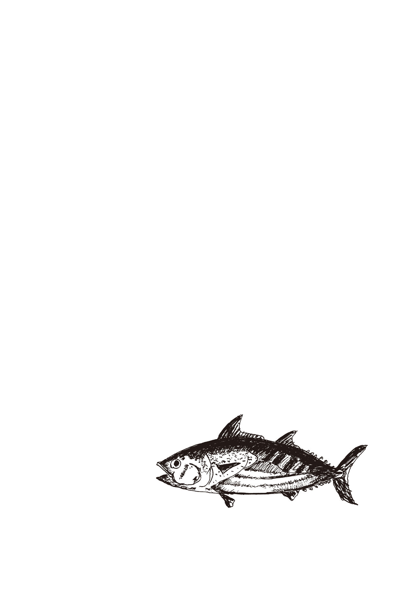
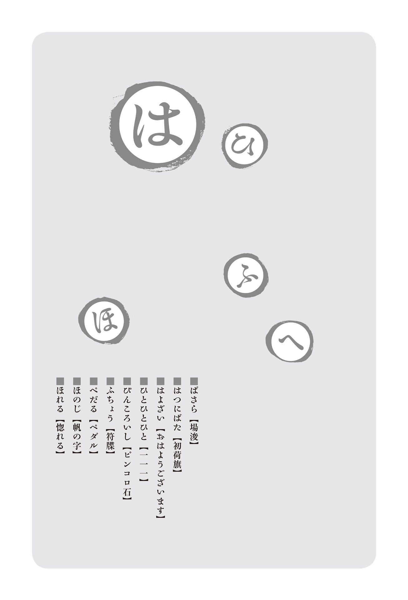
さら 【場浚】
残品一掃、場をひとさらい
「戦国ＢＡＳＡＲＡ」人気で、「ＢＡＳＡＲＡ」が気分だという人も多いだろう。漢字では「婆娑羅」と書くのが一般的だが、河岸の場合は「場浚」の文字を当てたい。
早朝、仲卸の店開きを待つように飛び込んでくるのは「一番河岸」。値は二の次でともかくいいヤツめがけるお客で、こだわりの寿司屋とか一流料亭さんたちだ。
そして、商戦一段落。残品チェックなどというころに姿をあらわすのが「ばさら」である。売れ残りを翌日に持ち越すより、その日に売ってしまいたいのが仲卸。それを見越してお勉強値段で買ってくださる。残った魚をそっくり浚うように。だから「ばさら」である。
「アイツは、ばさらだ」などと軽く見られはするが、こういうお客もいて、商売はうまく回っている。実は残品一掃のありがたいお客といっていい。
もっとも、最近は「ばさら」も死語に近い。仲卸店頭の取引は、箱で動くことは少なく、アジのような大衆魚でも、キロ単位、もしくは本数で買っていくのが当たり前となった。ばさらのような、ある面、太っ腹な買い方をする人は、もはや絶滅危惧種に近い。
つにばた 【初荷旗】
一日限りの色の氾濫、一年願う心意気
「もういくつ寝るとお正月」
初荷というと、唱歌「お正月」を思い出す。
歌詞には、こま回しにたこ揚げ、羽根つき、まりつきと、お正月お決まりの遊びがいっぱいでてくる。
初荷もお決まりの行事で明ける。
まずは深夜のセリ場で、市場人の初顔合わせがある。市場トップの新年のあいさつがすむと、魚河岸一本締めで気合を入れて、セリ開始。マグロの最高セリ値は、ほぼリアルタイムで市場中に知れ渡り、あちこちでため息がこぼれる。青果のセリ場には、近郊農家が腕によりをかけた野菜の宝船や七草のミニ盆栽がならぶ。
唱歌みたいに「早くこいこい」と口ずさんでもみたくなる光景である。
だけど仲卸の店頭で働いていた一三年間というもの、そんな光景は夕方のテレビで知るだけだった。
だから私にとっての初荷というと、セリ場から持ち帰った初荷旗である。ペラペラの紙に派手な色使いで朝日や富士の絵柄と卸売会社の名前を印刷したたわいないものだが、まだ明けやらぬ店頭にこれがいくつも飾られると、とたんにそれらしい雰囲気が生まれる。
本音をいうと、マグロを除くと、本格的な漁は始まっておらず、魚の入荷状況はチョビチョビ。店頭にならぶ魚のさびしさを、初荷旗が補っているともいえるけど、ま、そんな憎まれ口はやめておこう。
初荷は正月五日で、五日間も休みをいただいている。年に一度の長期休暇である。初荷旗を背景に、こざっぱりと散髪してきた男衆や頰のふくらみを取り戻した帳場のねえさんたちと、「今年もよろしくぅ」なんて、おどけまじりにあいさつをかわすのはいいものだ。
そのうち、売れてる店の料理人が若い衆など連れてやってくる。店は色めき立ち、「おめでとうございます」やら「今年もよろしく」の洪水に。初荷旗越しに、それを受けるお客さんの表情も、なんだか晴れがましく見えるから不思議だ。
年初めの商いの心意気を示すにはささやかなものだけど、一日限りの色の氾濫は目に焼き付けるには十分であり、初荷というと初荷旗なのである。
よざい 【おはようございます】
音があふれ出す合言葉
午前五時半過ぎ、始発電車の客がやってくる。
店主や番頭さんの「はよざい」の声が客を迎える。「おはようございます」のぜい肉をそぎにそいだ市場の朝のあいさつだ。「たんと買ってください」と商魂ではち切れそうな意味をもふくませ、寝ぼけ眼の買い出し人の背をバシッとはたく勢いで声かけする。
「毎度ォ、今日はなにを。アジ、淡路のいいのがはいってますし、イワシは大阪湾で。どのくらいいきます？」
「はよざい」を合図に店が活気づく。客とのやりとりに音があふれ出す。
買い出し人の仕入れルートは、歩く通路も時刻も判でおしたように決まっている。しばらく顔を見せないと、どこかにくら替えしたんじゃないかと気がもめる。電話でもしようかとうわさしていると「ごめん、ちょっとカアチャンが急病でさあ」と現れる。そんなときもやぼなことは言いっこなし。いつもの「はよざい」があればいい。
「はよざい」の数だけ客がある。「はよざい」が途切れがちな朝は、かんべん、かの字だよ。
とひとひと 【一一一】
生きてるように数えろ
仲卸の朝の仕事の大半は、注文の仕分けだ。
ちょい憂鬱なのが「アジ一四〇―一六〇グラム、一〇三本」なんて注文だ。
目方を量りながら、ダンマリを決め込み、ひたすら数える。
三〇本あたりで気分はどんより。やっと四〇本。「電話？ すぐかけなおす」。ええっと六五本で......。「ヤダ、客来たのに、誰もいないじゃん、もう」。発泡スチロール箱のふたにチョークで六五となぐり書きして、客の応対。戻ると、ふたがない。「捨てたぁ？ 数、書いてあったでしょ」。怒鳴り散らして、六六、六七。からかい半分で話しかける不届き者もいる。「数えてんだから邪魔しないで。ほら、いくつ数えたかわかんなくなったじゃない。どうしてくれんのよぉ」
最後までやり通すための手段は、ただひとつ。せいぜい声を張り上げて数え、つけ入るすきを与えないことだ。
数えるとなるとこんな調子だから、伝説の「ひとひとひと」の光景を見たかったものだ。
八〇歳、河岸の長老格が若い衆と呼ばれたころである。
「魚は生きてるように数えろ」と教えられた。
「ひとひとひと、ふたふたふた、みっしょみっしょ、よっせいやよっせいや、いっしょういっしょう、むっしょうやむっしょうや、なんなん」と、以上七まで。「とうやとうや」で一〇となる。これを、唄う調子で威勢よくやる。ぼそぼそやってるようじゃ「なんでえ、それじゃ魚が腐っちまうわ」と、頭のひとつもこづかれた。
まどろっこしいようだが、「ひとひとひと」で五本くらいひっつかんでやるのだから、それなりにスピーディーだ。大量にさばけたし、端数がどうのという客などまずいない。
「ひとひとひと」のノリのよさで、人を食い、押し切れた時代だったのだ。
私は、仲卸「共穂」の大ダンナにこの魚屋特有の数え方を再現してもらった。「ひとひとひと」と唄える最後の世代といっていいだろう。
もし、さわりを知りたい方がいたら、落語「芝浜」をお聞きください。
ただし数えるのはおカネである。芝浦の魚市へ買い出しに出かけた魚屋の勝が、浜辺で財布を拾う。なかには小判がぎっしり。ビックリで、小判を数える。魚屋だから、カネ勘定も「ひとひとひと」なのである。
んころいし 【ピンコロ石】
アッピア街道の哀愁
私は、自称「ピンコロ石同好会」の会長である。会員はいないが、先日も「ねえさん、ピンコロ石、もらえるとか情報入ったら、教えてよ」などと、仲卸で働くお祭り男に声をかけられた。ピンコロ石に愛を覚える同好の士は、かなりの数にのぼるとにらんでいる。
ピンコロ石というのは、仲卸棟の通路である石畳の素材だ。ほんとは花崗岩なんだけど、仲卸のじいさまから「ピンコロ石っていうんだ」と聞き、即座にこの名称をいただくことにした。すりへり、欠けた箇所もみられる石くれにはピッタリではないか。
この石畳は、築地市場開場時からのもので、当時のこと、人の手で一つずつ埋めていった。と、話で聞いていたが、実際にその写真を見たときは、背中がゾクゾクッときた。かがみこんだ男たちが黙々とピンコロ石を手作業で埋めている。背には、山と積んだピンコロ石。おお、古代ローマのアッピア街道敷設の現場もかくや、の光景である。
またある人のうわさに、「パリの石畳を模した」というのがある。
そういえばモンマルトルの丘って、石畳が多かったっけ。二〇年以上も前に訪れたおりの薄らぼけた記憶をたよりに「モンマルトルの石畳」をネットで検索したら、あら、うれしや、表面を四角に切り出した石ころを、扇状に埋めてある画像がみつかった。ピンコロ石でつくるわが石畳と同じ形状である。築地市場の施設は、欧米に学んだところが多いので、このうわさもあってしかりである。
アッピア街道にモンマルトルの石畳。「ピンコロ石同好会」の楽しみは、こうして想像、というか妄想の羽を地球規模に羽ばたかせることにある。
会長としては、阿波踊りなどを招き、下駄の歯音を盛大に響かせ、「音で鑑賞するピンコロ石」などの企画を考えないでもないが、都の施設であり、厳重な警備を考慮すると、口にすら出せないでいる。
しかし、鑑賞という点では、視覚に訴えるだけで十分だ。魚の脂と海水がしみ込み、乾くまもない石くれ、あちこちにできた水たまりに裸電球がにじんだ光景には、得も言われぬ哀愁が漂う。私自身、何千何万回と踏みしめた石くれである。ここで泣いて笑ってすっころんで。思い出は尽きない。それを思うと、哀愁はいや増し、胸が張り裂けそうだ。
「ピンコロ石同好会」最大の目的は、この「ピンコロ石が織りなす哀愁に浸りまくること」である。しかし、目的が後ろ向き過ぎるきらいがあり、会員を募るという行動に踏み出せないまま、三年という時がいたずらに過ぎているのだった。
 ちょう
【符牒】
ちょう
【符牒】
店のものだけの値付け、どう決める？
築地市場の仲卸で働いていたころ、浪曲師の発声法を真剣に研究した時期があった。伝説の浪曲師・広沢虎三のＣＤを買い込んで、どこから声をだせば、あのように低く通る声になるのか、そればかり考えて聴いていた。
けっこう、せつに願っていたのである。低く通る声の人になることを。
仲卸店での買い物の精算は帳場で行う。売り手は、帳場にお会計を通すだけだ。そのさいの声である。私の声は甲高いくせに通りが悪い。聞き取りにくいと帳場から文句の言われどおしだった。
さらに私は、大きな問題を抱えていた。符牒である。
仲卸の値段は、お客によって、多少、異なる。上得意のお客さんとか、残り物を気前よく買ってくださる方とか、状況次第でお勉強させてもらう。そこで、店の者だけがわかる符牒で値段を通すのだ。
私が働いていた濱長の符牒は「イロキニカヘトクリ」。これを、一～九に置き換える。「イ」は一だ。さらに、もうひとひねり。「イ」は、漢字の偏「ニンベン」なので、「ベン」。「ロ」は「クチ」と告げる。キロ当たり一二〇〇円なり、すなわち「ベンクチ」となる。
これがなかなか身につかない。頭の中で「一二〇〇円だから一はベンで」などとやってちゃダメなのである。
符牒に苦手意識があるので、声に迷いがある。虎三風の声をもって、ビシリ符牒で通す。これをめざしていたのだ。
符牒は、店によっていろいろだ。
「シラハマノアサギリ（白浜の朝霧）」「ミタカラハイリクル（御宝入りくる）」「ハヤオキハサカエル（早起きは栄える）」など、河岸らしい意味を持たせたものが多い。
濱長の符牒は「色気に替えとくり（れ）」。お値段に色を添えてお勉強します、とでもいうのだろうか。女の端くれとしては、めざせ虎三より、色っぽい声でも研究したほうが、受けがよかったかもしれない。
いずれにしろ、恨めしきは符牒である。
もっとも、最近は符牒を使わない店が増えた。値札を置いて駆け引きなしをアピールする店、若い者が覚えたがらないので使うのをやめた、という店もある。
歯切れがよくって生きのいいリズムをもつ符牒。今さらだけどもっと練習しとけばよかった、なんて首をすくめている。
だる 【ペダル】
三角乗りは、大人への階段
「自転車乗りを覚えたのも市場。はじめは三角乗りで」
一昔前の仲卸の子は、市場でよく遊んだ。どんなことして遊んでいたのか。
今は仲卸社長となった方たちに聞いて回るうち「三角乗り」という言葉が出てきた。
三角乗りは、昭和の子供が編み出した大人用自転車の乗り方だ。
足だって短いから、サドルに座るとちゃんとペダルを踏めない。そこでサドルとハンドルの心棒を一直線に結ぶパイプの間に片足を入れ、ペダルを踏む。片手でハンドルを握り、もう一方の手はパイプにしがみつくという曲芸じみたあぶなっかしさだが、大人用自転車に乗れるという誇らしさには替えがたい。歯を食いしばり、懸命にペダルを踏んだ。
今、三角乗りする子供はいない。
危険だから、とばかり思っていたが、「今の自転車じゃ三角乗りはできないよ」とあっさり言われてしまった。
うかつだった。パイプ一直線の自転車は、すでに過去形で、ママチャリ型が一般形なことに気づいていなかった。
うっかりも当然で、場内には過去形が荷物運搬用としていくらでも走っているのだ。あちこちひしゃげたハンドル、泥がこびりついたペダル、さびついたパイプ、そしてなんといっても荷台が目につく。明らかに特注とわかるビッグサイズだ。なかには、板っきれを継ぎ足して、さらに面積増加をはかっているものもある。
昭和の時代の活躍ぶりはめざましかった。配達といえば自転車だった。届けるだけでなく、売りに走った思い出話も聞いた。
町にいっぱい寿司屋があったころだ。河岸の引け際、キスやコハダが売れ残りそうだとなると、とりあえず握るばっかりにおろす。それを荷台に積んで、若い衆がなじみの寿司屋を回るのだ。近場の新橋で「ニイサン、置いときな」の声を聞けたら御の字で、売れなきゃ銀座から池袋へ、さらにその先へと山手線一周分ぐらいは走る。荷台に積んだ魚の目方は一〇キロ、二〇キロほどだとしても、容器は重量のある木箱だし氷も入っている。おまけに東京は坂道だらけ。舗装してない道も多かった。
「泣かされたよ、まったく。ペダルに直立で立ったって前に進みゃしない」
三角乗りを覚えたあのころと、ペダルはどっちが重かったのだろうか。
のじ 【帆の字】
ほの字異変で、高嶺の花に
「からほ」に「むきほ」。ふたつの「ほの字」、なーんだ？
答えはホタテガイ。
貝なのに、殻をパクリパクリとやって水中を器用に泳いで移動する。殻を立てた時のかっこうが、帆をあげた船みたいだから、漢字で書くと帆立貝。殻つきを、市場では「カラホ」、殻をむいた貝柱を「ムキホ」と呼んでいるのだ。
朝のいっとき、てんやわんやの取引である。長ったらしい言葉はそぎ落とし、かつ商品名は的確に、ということで生まれた略語のひとつだ。
ほかにもヒラメは、天然と養殖があるので、「テンビラ」「ヨウビラ」。アカガイは、「玉（殻つき）」「むき玉（むき身）」「さき赤（内臓を取り除いたむき身）」となる。はたで聞いていたら、なんのこっちゃ、であるが、輪の中に入ってしまえば、便利この上ない言葉だ。
それにしてもこのところ、ほの字、食べてない。メニューはいくらでも思いつく。まずはムキホを生でそのまま。薄切りにして刺身だなんてケチくさいこといわずに、焼き海苔を巻いて、軽く醤油をつけて丸ごといく。生を一晩、味噌漬けにして、さっと炙るなんてのもよし。ハーブパン粉焼きにカレー、グラタンに......。いくらでも思いつくのに、財布が追いつかない。数年前にくらべると、二倍、ときにはそれ以上の値上がりなのだ。
生産量が減ったわけじゃない。干し貝柱の原料としての取引が急増したためである。干し貝柱は中国料理によく使う。豊かになった中国への輸出が増えて、原料のコストが高騰、それにつられて異様な値上がりをみせているのだ。
ほの字異変は、産地に出向かなくても、場外市場を歩くだけでわかる。あちこちの店先に干し貝柱が、やたら目立つようになった。場外の鮭屋のユミちゃんのとこでも置いてあるが、よく売れるという。買っていくのは中国からの観光客だ。日本の、ことに北海道産は良品として中国では知られており、お土産に大人気なのである。
江戸時代、フカヒレや干しナマコは「俵物」と称して中国へ輸出。貴重な外貨獲得の品だった。平成の「俵物」となったほの字、さぞや驚いているにちがいない。
れる 【惚れる】
後先考えずに競り落としてしまう
「あーあ、久しぶりに惚れちゃった」
「色香に惑わされってか」
「見た瞬間、ヤバイと思ったわけ。でさあ、無視してたんだよ。それが、ギリギリでパッと手が出ちゃうんだからさあ」
「いいんじゃねえの。たまには惚れて泣きをみんのも」
朝っぱらからオッサン二人、なに喋ってんだか。
愚痴るオッサン、なぐさめるオッサン、お二人はたった今、セリ場から戻ったばかりの仲卸である。
セリ場にちょっと時間を巻き戻そう。
「コンチクショウ、いい魚じゃねえか。だけど、オレの客でこんな上物、買うヤツ、いねえし。ああ、絶対、買わねえぞ。わすれろ、わすれろ」
愚痴るオッサンには、下見の際、以上のような葛藤があった。
しかし、セリは魔物。惚れた弱みに魔がさした。気がついたら一番やりなぞだして、買っていたのだった。
市場の目利きは、世の目利きとはちょい違う。いい魚を見わける目は、あって当たり前。なにより求められるのは、きちんと自分のもうけを出しながら、買い手にも満足してもらう品を選ぶ目だ。どんなにいい魚でも、買い手がつかないものに手を出すようじゃ、目利きとはいえない。
「惚れるな。もうけの出る魚を買え」
これがセリ場の鉄の掟である。
とはいえ、掟なんて破られるためにあるようなもの。熱くマグロに向かっていたら、惚れることだってままあるさ。ま、惚れてばっかじゃ身が持たないのは、いつ、いかなる場合でも同じですが。
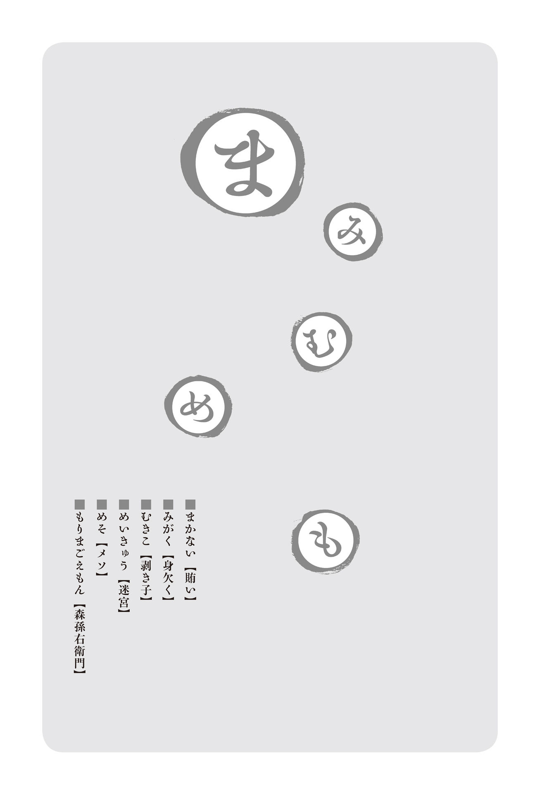
かない 【賄い】
プロが食べる取っておきレシピ
朝一〇時、仲卸の店々は仕事も一段落、そろそろ昼食の時間である。いい匂いがする。仲卸「尾 吾 」さんとこからだ。ほとんどの店が配達の弁当ですましているというのに、尾吾さんとこは、社長自ら賄いを用意する、という志高き店である。
店の裏が台所で、シャケの入っていた木箱の上には卓上コンロ、水を張ったポリ容器にはまな板が乗っかっている。電気炊飯器や茶わんが入ったカゴやらを置いた特大ストッカーが食卓兼調理台だ。河岸は「ぜいたく言いっこなし。あるものを工夫」の精神みなぎる場だが、その象徴みたいなスペースである。
近所の店の社長二人がそのスペースで腕なぞ組んで立ち話をしている。賄いのお相伴目当てなことは尾吾の社長も先刻承知の助で、欠けたおわんになにやらついでいる。
私はこういう現場を見ると、すかさず輪の中に入っていくことにしている。食文化のフィールド調査のためだ。の、つもり。しかし、勘違いされていつもお相伴にあずかってしまう。
本日は、社長宅の夕飯の残りのてんぷらを甘辛く煮たものだ。かろうじて衣の一端をつけたゲソ、種からはげ落ちてしょうゆ色のブヨブヨの塊と化した衣、そこにネギがたっぷり散らしてある。七味もこれでもかっていうくらいに。こういう下世話な味って苦手なはずだが、意に反して味蕾がおいしいと反応するので、当惑すること大である。ごちそうになった手前、調査のためにあれこれ質問するのもはばかられ、単なるお味見だけに終わってしまうのがいつも残念だ。
もっともレシピだけはいっぱい収集できた。
「ヤリイカと焼き豆腐の煮つけ」なんて、もうわが家の定番料理だ。ヤリイカと焼き豆腐をすき焼き風に煮て、片栗粉で煮汁をとろりとさせる。熱々できたてもいいが、冷蔵庫に一晩おくと、焼き豆腐がしょうゆ色にそまって味がこなれるので、作り置きおかずにとても重宝している。
得も言われぬぜいたくな味をあげるとすれば、「生ウニの転がし焼き」だろう。温めたフライパンで、ウニを転がしながら焼くだけのことで、端っこの焦げたとこと一緒に賞味する。実は生ウニとして売れないもののお助け料理なことは、秘密である。「正調ねぎま」「スズキのカマ焼き」「さつま揚げ入りみそ汁」「たこカレー」と数え上げればきりなしだ。
最近はフィールド調査かレシピ収集のための味見なのか、自分でもわからなくなっている。
がく 【身欠く】
ニシンを磨くのではありません
河岸で国産のみがきニシンを見つけたのは、四年ほど前。脂がきつくないのが気に入り、まとめ買いしては冷凍保存し、焼き豆腐や里芋と炊き合わせにするなどして使っている。もちろんソフトタイプのもので、業者間で「本 乾 」と称する硬く干しあげたものではない。
みがきニシンは、北前船の産物として京阪神で好まれているが、関東に広がったのは、一九六〇年代のソフトタイプ登場以降だ。本乾ものに何度か挑戦したが、戻すのがむずかしい。脂っけや魚のうまみを残しながら、かつ柔らかく、とはいかず、挑戦はあきらめてしまった。そこへいくと、ソフトタイプは戻す手間いらずで扱いやすい。現在、築地市場で本乾ものが売れるのは、年末のいっときだ。
ところで、みがきニシンの「みがき」である。
表面がテラテラつやっぽいので「磨き」という字をあて、作る過程で脂でも塗って磨くのだろう、ぐらいに思っていた。勝手な思い込みと知ったのは、河岸に来てからだ。
河岸には、「みがき」とつくもう一つの売れ筋商材がある。「みがきフグ」だ。この名称は、二〇一二年、東京都のフグの条例緩和の話題とともに新聞紙面などに登場、一般にも知られるようになったようだ。
猛毒を持つ内臓はもちろん、頭や皮も除いたのがみがきフグだ。身を欠いたフグなので、漢字を当てると「身欠きフグ」。同様に、みがきニシンも、内臓やエラなどを除去してあるので「身欠き」を当てるのが正解なのだった。
河岸のマグロ屋さんにも「身欠く」という作業がある。
四つ割りにしたマグロをさらにカットしてお客さんに売るおり、血合いやちょっと色の悪くなった部分を除くことを「身欠く」と言っている。また冷凍マグロを解体機で切断して身に骨が残った場合、骨を削り取るのも「身欠く」である。
それなら、アジやイワシなどのエラや内臓などを取り除く行為も「身欠く」でいいような気もするが、この場合は「水洗い」とか「おろす」である。
なぜだかは河岸中を聞いて回ったがはっきりしない。慣習だと言ってしまえばそれまでだけど......。
そんなことで頭を悩ますよりも「女を磨くほうが先決」などと、河岸のオッサン連からありがたい忠告をいただきましたけどさ。
きこ 【剥き子】
子どもたちも稼ぎを自慢した
ムキコのねえさん、今の河岸に何人いるのだろう。
ほんの少し前まで、寿司ダネを得意とする仲卸には、たいていムキコのねえさんがいた。貝の殻をむく専門職の女性だ。
私が世話になった濱長でも、ちゃこねえ、笑子さん、ミッチャンの三人が店の一角に陣取り、ガラガラとにぎやかな音をさせ、アカガイやハマグリの殻をむいていた。貝をむく道具は、むき包丁といい、刃先は、うっかりするとケガしそうなくらい、よく砥いである。それを、眼にもとまらぬ素早さで使いこなしていた。貝をむいてもらうのは、寿司屋が多い。仕事道具である大切な手に負担をかけないため、と聞いた。
むき始めるのは、予約注文をこなす午前四時過ぎからで、六時を回ると入れかわり立ちかわり買った貝を持って寿司屋が立ち寄る。むいてもらう間、きのうは売れなかったなどとお定まりの愚痴をもらす寿司屋に、「この天気じゃさあ」などと相づちを打ちながら、冗談話に切り替えていく。むき身がビニール袋に詰められるころには、寿司屋の顔は寝起きの仏頂面から、ちっとは締まったものとなり、その場をあとにする。ねえさんたちは、客あしらいもなかなかのものだった。
ムキコのねえさんたちは、千葉県の浦安から通っていた。
笑子さんが子供のころの話を聞かせてくれた。一九五〇年から六〇年にかけてのことで、浦安には遠浅の浜が広がり、アサリなぞ「おかっぽり」でいくらでもとれた。おかっぽり、すなわち前浜で手掘りすることだ。そんな調子だから、町には貝をむき身にする作業場「むき身屋」がたくさんあった。
笑子さんは、母親がムキコとして働くむき身屋に小学校のころから出入りして、貝むきを覚えた。高学年になると、すでにいっぱしのムキコだった。その時代の小学校は、昼食をとりに家に帰されたが、まずはむき身屋をのぞく。
「アサリだったら、しゃんめえ、午後からも学校行こうかって。バカガイだったら、カバン放り投げて、夜まで貝むきさ」
賃金は貝の種類は問わず、パイスケとよぶざる一杯の計算だ。アサリのように小さいものは、手間のわりに実入りが少ない。やってもたいした稼ぎにはならない。子供でも、そのぐらいのしたたかさはあって当たり前のことだった。
笑子さんだけでなく、クラスの女の子はたいていムキコをしており、学校で顔を合わせると「おめら、きのうはなんべ（何杯）むいた？」と稼ぎを自慢しあったものだ。
やがて浦安は埋め立てが進み、むき身屋も減った。そこで、築地市場が新たな職場となったのだ。
濱長で、ムキコのねえさんたちが高齢のために一人、また一人とやめ、いなくなったのは五年前。補充はしなかった。町の寿司屋が減って貝をむく注文が減り、仕入れ担当の男性だけでやれる量となったからだ。
どこの店も同じような事情で、ムキコのねえさんたちの姿は消えていったようだ。
三人のねえさんたちのきつい浦安なまりや素早い手の動きは、今も昨日のことのように覚えている。
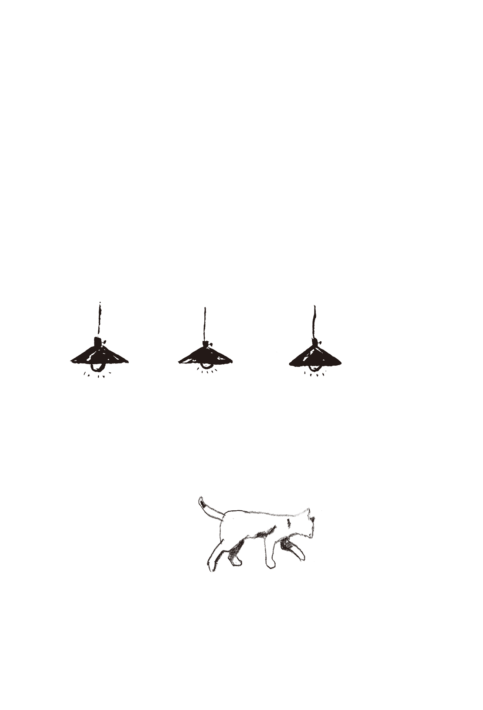
いきゅう 【迷宮】
その歩き方、教えます
ユミちゃんは、ほやほやの買い出し人。仕入れ先を探すため、水産仲卸の店々を歩き回っている。すでに二カ月近くが過ぎたが、会うたびに大きなため息だ。
「これぞって店をみつけるじゃない。でさあ、二～三日して行こうと思っても、みつからないわけ」
ユミちゃんは、べつに方向音痴ってわけじゃない。私だって、初めてひとりで歩いたとき、ここは迷宮か、とわめきたくなったもの。
なにしろやたら横に長く、しかも大きなカーブを描いているから見通しが悪い。狭い通路が縦横に走り、魚を見ながら足の向くまま、なんてことしてたら、ゼッタイ、元には戻れない。目印を探そうにも、なれない目にはいずこも同じような店に見えてしまう。
店名で覚える、というのは、かしこい手に思えそうだが、まず役にたたない。働く人をつかまえて、店名で聞いても、首をかしげるばかり。知らないふりしてるんじゃない。店の数五〇〇以上。すべてを覚えるなんて、どだい無理な話である。
ならばどうするか。
縦に走る大きな通路に出て、眼を斜め上方に転じてほしい。看板がある。「第四大通路」などと、通路の名が記してある。続いてなにやら番号が。実はこれ、店舗番号といって、各店の所番地だ。
碁盤の目のように走る通路、縦軸は「一〇〇〇～七〇〇〇」、東京オリンピックの年に建て増しし、いまだに新店舗と呼んでいる棟は「イ～ニ」である。
横軸は、一から数えていく。
縦軸、横軸が交わったところが、その店の番号となる。だから場所がうろ覚えでも、「六〇〇〇番代の一桁数字」くらいで、なんとかお目当ての店に行ける仕組みになっている。
とまあ、エラそうに書いてはみたが、私、どうやら先天性方向音痴らしい。二カ月に一回、仲卸さん八〇軒ほどへ会費徴収に回るのだが、いまだ手製の「回遊路表」が手放せない。効率よく、かつ迷うことなく会員さんの店をめぐるためのアンチョコペーパーだ。
いつまでたっても、私には、迷宮は迷宮のまま。ま、これも楽しからずや、ですが。
そ 【メソ】
小さき魚にも深い愛
小さいウナギやアナゴのことを「メソッコ」とか「メソ」という。
今、ウナギはまずもって養殖だから、メソにお目にかかることはない。しかし、天然ウナギがたくさん入荷した一九六〇年代までは、メソまじりが普通だった。河岸のウナギ屋さんのなかには、自家用に大鍋で甘辛く煮つけたメソの味を覚えている人もいる。
メソメソ泣いてばかりの幼子にたとえた呼び名だ。
ちっこいタイやチダイは「カスゴ」。寿司では上等の光り物となる。漢字で書けば「春子」。これをカスゴとすんなり読める人っているのかしら？ 私なんて徳川家光の乳母で大奥を取り仕切った「春日局」が思考回路を刺激して、やっとうなずけるのだが、なんとなく呼び方に不自然さを感じる。すなおに「はるこ」でいいじゃないか。
ところがある日、古い東京弁では末っ子のことを「かすっこ」と呼んだ、と知った。これでストンと胸に落ちた。カスゴはメソと同じように、幼い魚の意味であり、「春子」は当て字もいいとこなんだと。
笑っちゃうのは、「ジンタ」だ。豆アジより、もっと小さなアジのことだ。語源は仁丹。ジンタも銀色で、丸っこい小粒アジである。
他にも、コハダ（コノシロ）の幼魚は、「シンコ」。小さくて売り物にならないような貝は「チャリコ」。小魚一般の幼魚は「ジャミ」。いずれも詮索抜きで、小ささがイメージできる言葉だ。
こうした呼び名は、取引に重宝するので使っている。シンコを除くと、儲けの少ないまともな売り物じゃないというニュアンスが強い。カスゴも、手を加えてこそ上物の寿司ダネになるが、売値は成魚にくらべると格段に安い。
だけど、その呼び名には愛嬌がある。愛嬌ある言葉で救ってやろうという心意気、というか河岸的愛を感じる。
「そりゃ儲けは少ねえよ。いくらもとれねえ代物だよ。だけど、漁師がせっかくとってきたんじゃねえかよ。工夫してみな、案外うまく食えるって」
そんな河岸の声が聞こえてきそうだ。
りまごえもん 【森孫右衛門】
河岸の開祖は、海賊衆？
築地本願寺の境内をブラブラしていたら、とんでもないもの、見つけた。森孫右衛門二〇〇回忌の追悼墓である。文久元年（一八六一）建立とある。森孫右衛門は、日本橋魚河岸の祖といわれており、ほんまもんのレジェンドの痕跡が築地市場の近くにあるなんて、ちょっとびっくりだ。
孫右衛門は、江戸の人間ではない。摂津国佃村（大阪市西淀川区）の名主で、江戸に縁もゆかりもない。それが花のお江戸のど真ん中、朝千両といわれる巨大市場の祖となるには、大河ドラマにちょい役で名を連ねていいぐらいのお話がある。
転機は、徳川家康との出会いだった。
天正一〇年（一五八二）といえば、「本能寺の変」が起きた年だ。その少し前、家康は多田神社（兵庫県川西市）に詣でている。そのおり、大阪のはずれを流れる神崎川へやってきたが、橋がない。渡船の調達を申し出たのが孫右衛門であった。佃村は、神崎川ほとりの漁村。漁師の長を務める孫右衛門にとって、船の用意などお安い御用である。
家康のごきげんは麗しく、このおり、孫右衛門は「森」という姓をたまわった。
これを機に、孫右衛門とその一族は、一気に家康に肩入れするようになる。家康上洛のおりには「お魚御用」を務め、江戸へ任地替えとなれば江戸へも下った。
江戸湾でも、江戸の古くからの漁師をしり目に漁に励んでは「お魚御用」をこなした。江戸幕府誕生（一六〇三年）のころには、お城に魚を納め、なお余りある魚の市中販売を許される。これが日本橋魚河岸の起こりとなる。
江戸在住の漁師たちは、さぞや歯ぎしりしたことだろう。西から来た新参者に、おいしいとこ取りされて。家康と付き合いが長いとしても、ひいきされ過ぎじゃないか。私が漁師なら、むしろ旗の一つも持って、家康に詰め寄りたいとこだ。
しかるに、おおきな騒動は史実として残っていない。
実は、一説に孫右衛門とその一族は、徳川方の水軍（海賊衆）だったといわれる。大坂の陣（一六一四〜一五年）では、豊臣方の動向を探るなどのスパイ活動ばかりか、漁船を軍船に仕立てて海戦にも参加している。漁師にしてはあっぱれな軍功への恩賞、と思えなくもない。
そして戦乱の世も終わった正保元年（一六四四）、孫右衛門一族は、江戸湾鉄砲洲の干潟をたまわり、そこを埋め立てて佃島の名で生涯の地とした。
戦国の世をタフに駆け抜けた孫右衛門、やはり大河ドラマにいかがでしょうか。
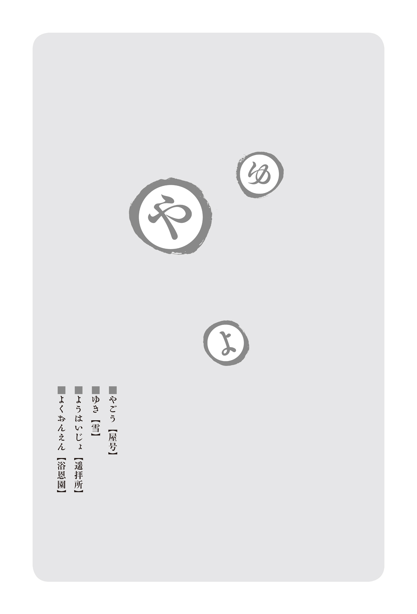
ごう 【屋号】
世代をまたいで、つづれ織り
初めて仲卸のならぶ通路を歩いた日、どこまでも続く看板の行列に目をうばわれた。
間口二メートルに満たない店でも、看板はやたらどでかく、漢字二，三文字の屋号が筆太に記してある。なにやら時代劇の映画のセットに迷いこんだ気がした。
そんな風景も当たり前になってきたころ、屋号が語りかけるものが見えてきた。
わが銀鱗文庫の会長の店は「神奈辰」である。
ご先祖さまの言い伝えによると、江戸の終わりに一族郎党、神奈川県子安から桁船で江戸深川に移住。日本橋魚河岸で働き始めた。当主は、龍蔵といい、神奈川出身の龍蔵だから「神奈龍」と呼ばれた。二代目は、徳蔵なので「神奈徳」。三代目辰蔵となり「神奈辰」に。三代目ともなれば、ちっとは河岸で名がうれるようになり、五代目の今もその名で通している。
というように、屋号は、出身地と名前を組み合わせるのが基本パターンである。
それを念頭に見ていくと、意外なことに、「堺」とか「伊勢」など西の地名をまじえた屋号を、けっこう目にする。江戸時代の河岸の名簿をたぐると、伊勢屋某、堺屋某などとあり、たどりたどっていけばそこに行きつくのだろう。
日本橋魚河岸の開祖といわれる森孫右衛門は関西の出身。その後も江戸の繁栄を聞きつけ、関西からの魚商人がたくさん入り込んだ。西の地名の入った屋号は、そんな魚河岸草創期を呼び起こしてくれる。
森孫右衛門の子孫は、隅田川河口に佃島を築き、そこを根城に魚河岸での商売にいそしんだ。今も「佃」のつく屋号は多いが、「佃林」とか「丸半佃寅」などエビ屋さんが目立つのが特徴だ。実はわけありで、かつて佃の魚商人たちは、江戸湾でいくらでもとれたクルマエビを扱うのを得意としていたのだ。
屋号の新陳代謝は激しい。晴れて暖簾分けとなる場合、本店から屋号の一文字をいただくが、本店が消え、支店や分店が栄えるというのは、よくある話だ。支店や分店からさらに枝分かれしつつ、屋号は浮き沈みの波にさらされる。大正、昭和の仲買人名簿と今を比べると、消えた屋号の多さに茫然とする。
それでも平成の今、屋号のひとつひとつを吟味していくと、遠い記憶への赤い糸がほぐれていく。太い糸、細い糸、撚 りの甘い糸、強い糸。屋号が紡ぐ糸をたぐり寄せ、機 織 りしてみたら。さぞやみごとなつづれ織りとなることだろう。
き 【雪】
タイヤはきしみ、歯車も狂う
晴れ、曇りはいい。雨もまあまあ。だけど、雪だけは、だめだ。
朝の仲卸店頭。マフラーで顔半分を隠した買い出し人がやってきた。分厚いジャンパーの背に、けしの実ほどの白い物が点々と散っている。雪が降り出したらしい。
「やだね、積もらなきゃいいけど」
東京の雪は、たいてい午後には雨に変わる。しかし、年によっては裏切られる日がある。午後、人の絶えた河岸は、まわりに高い建物がない分、思う存分、舞い狂う。
そして翌朝、河岸はきしみっぱなしとなる。
雪に弱い東京。交通網への影響は大きく、もろにそれをかぶってしまうのだ。
トラック延着で、産地からの荷が届かない。いつもなら、真っ白な発泡スチロール箱で埋まる夜更けのセリ場はガラガラだ。だるまさんみたいに着込んだセリ人が、充血した眼でガラケイに怒鳴っている。
「トラックは今、どこだ、着くのは何時ころだ」
かろうじて集めた荷を、仲卸人が引っさらうようにして持っていく。
仲卸の店は、朝から電話が鳴りっぱなしだ。「荷が届かない」と、クレームの嵐。こんな日、買い出し人は、まず来ない。配達のトラックは、今頃、雪道に往生しているとわかっていても、最敬礼で「今、向かっています」。それ以上にこたえようがない。
郊外の道は、あちこちで寸断状態となり、最後の手段、社長以下、魚の入ったレジ袋や箱をかかげて、電車で回る。
引退したトクちゃんは、新幹線で軽井沢まで行った。河岸着の薄いジャンパーのまま、すっ飛んで行ったからたまらない。向こうは膝までつかる雪。荷物かついで、延々と注文先まで歩くはめに。真っ青な顔して帰ってきた。
市場の業界新聞のバックナンバーを読んでいたら、「一五年ぶりの大雪のため、初の自然休市」という記事を見つけた。日付は、一九五一年二月二四日。買い出し人が雪で足止めを食らったためだ。
クルマ社会になる以前、配達など考えもしなかった長閑な時代の話だ。
つぶやきは一瞬にして世界中に運ばれるというのに、魚の運搬は、雪にて超アナログの世界に舞い戻る。
河岸で雪のなか、うれしそうに舞っているのはカモメだけだ。
うはいじょ 【遥拝所】
魚河岸人の心のよりどころ
築地場内、魚がし横町の近くに、なにやら市場らしからぬ一角がある。ちょっとした囲いがあって、入ってすぐのトクサの緑に目を細め、階段を一〇段のぼると小さな鳥居がある。さらに階段を六つのぼったとこには小さな祠 。とまあ、たたずまいは神社だけど、魚河岸人の「遥拝所」である。
浮き沈みの大きな魚河岸の商い。神にご加護を求めたのは、日本橋魚河岸草創期のころからで、祭神「彌都波能賣命 」を祀り、神田明神に「魚河岸水神社」を設けている。魚河岸人は、一九三五年、築地の中央卸売市場に入ることになったが、日々、お参りするのに神田はいささか遠すぎる。そこで、場内に「遥拝所」を設けたのだった。初めは、市場の広場のまんなか、浴恩園跡の築山にあったが、一九五八年ごろ、現在の場所におさまった。
水神社をお守りしているのは、「魚河岸会」で、毎年二月に会員一同、神田に詣でるが、遥拝所では「正五九祭」といって、一、五、九月、神田明神の宮司様をお呼びして、祝詞 奏上をおこなっている。当日は、祠の前のちょっとしたスペースに、魚河岸会の幹部や卸会社の社長たちが集まり、宮司様をお待ちする。彌都波能賣命は女の神様で、嫉妬深いというのがもっぱらの噂で、昔は鳥居のなかに女は入れなかったという。今はそんなことさらさらなくて、魚河岸会の末席にしがみついているような私も鳥居の中でかしこまる。藍に、波がしらを巴 に白く抜いた魚河岸紋の法被など着て打つかしわ手は、青空に吸い込まれ、不信心なことを忘れてしまうほど、すがすがしい。
大小の神輿や賀茂能人形の山車がでる水神様の祭りは、幻といわれるほど不定期で、戦後に催されたのは、たったの三回。豊洲移転が決まった二〇一五年には、波除神社の本祭りにゲストとして神輿だけがやってきた。水神神輿と波除神輿、二基が集うのは、最初で最後とあって、「獅子睦」やら「鬼火会」など河岸の神輿担ぎのメンバーだけでなく、多くの市場関係者も参加した。場内でしばしもみ合ったのちは、連れだって町内を回り、「ありがとう築地」の心をこめて別れを告げたのだった。
燃えに燃えた一日で、水神様も、これでほっとしたことだろう。と、思っていたら、翌年の二〇一六年一一月に予定された移転は、延期となってしまった。人の思惑は、神様すら予期せぬできごとに迷いこませてしまった。
くおんえん 【浴恩園】
市場の地中、お宝が眠っている？
学生のころ、染め付けの小皿を買って以来、古い器が好きになった。といっても、買えるのは、お財布が許すガラクタばかりだし、きりがない。古い器集めはもう卒業しよう、と思ってはみるが、やっぱり骨董店の前を素通りできないでいる。
器好きとしては、今、気になってしかたないものがある。築地市場の地中に眠っているかもしれない器である。
築地は、江戸時代の埋め立て地で、市場のある場所は有力大名の下屋敷があった。銀鱗文庫が入っている建物は、松平定信の「浴恩園」があった場所だ。寛政の改革（一七八七～九三）後、政治の表舞台をしりぞいた定信は、ここで庭づくりを楽しんだのだった。
定信自身がわが庭のようすを綴った「楽翁公自選浴恩の記」によれば、春風、秋風とふたつの池を中心に、四季の草木や石を配した、堂々たる大名庭園だったらしい。定信は、ここで宴を開くこともあったが、みごとな器が使われたであろうと、推測する。シブチンで知られた定信だけど、そこはそれ、客人の手前ってものがある。
浴恩園の隣は、尾張藩の地所で、こちらは実質本位。大きな舟入の池をもうけ、国元から船でさまざまな物資を運んだ。なかでも重要なのが、尾張藩の特産、瀬戸物である。出入りの瀬戸物御用商に入札させ、市中で販売させていた。波除神社には、「奉納尾州御蔵・小揚」と記した鉄のりっぱな天水桶がある。運搬をになった小揚の人たちのこの奉納品は、いかに多くの物資が運ばれ、彼らがその恩恵を受けたかを示す証拠の品である。
この江戸の一大茶碗センターも、浴恩園も、明治維新により、国に返納される。引き払うにあたっては、たいへんな騒ぎであったろう。どさくさにまぎれ、たくさんの器が残され幾星霜、地中に埋まったままかもしれない。
いつかは大きな工事が始まるだろう築地市場。器なぞ出土したおりは、そのいくばくかを入手できないだろうか。わが最高峰のコレクションとして、終生、大切にするのだが。
とはいえ埋まっているという保証はなく、小判ならいざ知らず、茶碗なんぞの話に付き合ってくれる人はいない。
先日も、夫に「シュリーマンて、すごいよねえ」と切り出した。シュリーマンは、ギリシア神話を読み、神話の都市トロイアの発掘に貢献した人だ。からめ手で、狙う器の話に持っていくつもりだったが、返ってきたのは生返事とあくびのみ。
気がかりながら、一人、悶々としている。
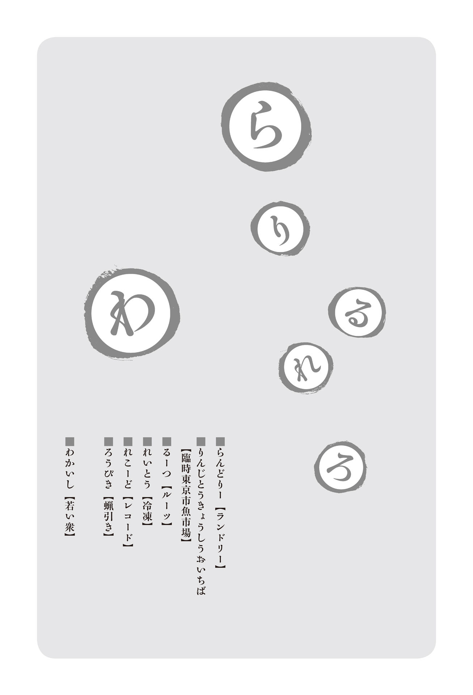
んどりー 【ランドリー】
近代クリーニング業草分けの地
敗戦後、東京の焼け残った主要な建物は、連合国軍総司令部（ＧＨＱ）に接収された。築地市場の敷地と建物の一部も一九四五年一二月から接収が始まり、四六年の春には、青果部の建物がランドリーとして稼働している。洗濯工場だ。
なかの様子はどうだったのだろう。
東京都発行の市場史は、その様子には触れていない。市場の最長老に聞いて回っても、「近寄ればシベリア送り」などという噂が流れていたぐらいだから、知る由もない。
なかで働いた人がいるかもしれない、と、築地界隈を訪ね回ったが、無駄足だった。
半年後、行き着いたのが、クリーニング関係者の方たちだった。そこには、予想以上の資料が残されていた。
進駐してきたアメリカ軍は、野戦ですらトレーラーに機材一式を積んだランドリー部隊がつくぐらいだから、当然、東京に大規模なランドリーが必要となった。そこで白羽の矢が立ったのが、格納庫のような広大な建物のある築地市場だった。接収が決まると、日本人が見たこともない大型機器が次々に持ち込まれ、建坪四三〇〇平方メートル、当時のアメリカ軍の施設としては世界一といわれるほどの洗濯工場ができあがったのだった。
多くの日本人が集められ、洗濯の専門知識を持つランドリーオフィサーのもとで作業が始まる。最新鋭の機器、強力な洗剤、徹底した流れ作業、ハンドタオルひとつたたむにもマニュアルがあり、初心者でもすぐに仕事につけた。それにより、膨大な洗濯量をこなす運営能力は、職人技に頼ってきた日本のクリーニング業界にとって、未知の世界だった。
しかもこのランドリーは、気前よく、その技術を公開した。東京工業大学の助教授だった毛利可 淳 氏は、施設内に研究所を設け、日本人向けのさまざまな技術を開発している。
一九五五年、ランドリーは朝霞に移転するが、機器は民間に払い下げられ、機器開発の好材料となった。さらに多くの従業員が技術者として全国に散らばり、その後のクリーニング業界のリーダー的役割をになった。
築地市場は、日本の近代クリーニングの草分け的存在だったのだ。
いっぽうの築地市場にとって、ランドリーは迷惑このうえない施設だった。市場人は狭い場所での営業を強いられ、再三の接収解除要請にもなかなか応じてもらえない。
築地市場に残る資料の少なさは、このおりの市場人の胸の内を物語っているのかもしれない。
んじとうきょうしうおいちば 【臨時東京市魚市場】
いっそ、東京市場に？
「いっそ、東京市場に変えたら？」
久しぶりにあった女友だちとランチしてたら、いきなりそう切り出された。土壌汚染など問題続出の豊洲市場。これだけケチがついたんだから、思いきって名前を変えるべき、と力説するのだった。
今さらそんなことできないと、反論一方の私だったが、帰り道、築地市場の歴史のなかで、「東京」と銘打った時代があったことを思い出した。
一九二三年に起きた関東大震災。日本橋魚河岸は焼け野原となり、芝浦で仮営業を始めるが、ただの空き地にテントを張っただけの、とても市場といえるものではなかった。そこで、その年の一二月、魚河岸の人たちは築地に移る。海軍省の技術研究所があった場所に、東京市が一カ月の突貫工事で用意した施設に入ったのだ。
この築地第一歩目の施設が「臨時東京市魚市場」と名付けられた。東京市の施設であり、やがて東京市が開設する中央卸売市場の前段階ということをはっきりさせたかったのだろう。初めは、「臨時」だったが、やがて「臨時」は取り除かれる。日本橋魚河岸の組合名も、「東京魚市場組合」に改めている。
「築地」の名は、一九三五年に「東京市中央卸売市場築地本場」として初めて登場する。それでも場内にできた駅名は、「東京市場駅」で築地ではない。おそらく取引の便宜を考えてのことだったろう。産地の人には「築地」より「東京」のほうが、はるかにわかりやすい。「築地」という名前が広く知られるようになったのは、最近のことだ。
実は、「東京市場」の名に、という考えは、市場内でもチラホラ耳にする。先日、卸売会社の社長との雑談でも、飛び出した。そのおりは、「東京市場駅」のことなど持ちだし、グローバルな展開をしていくなら「東京市場」と盛り上がった。
もちろんふたりとも改称などできないことはわかっている。宙ぶらりんのままの豊洲市場への移転。なにかに希望を見つけようとした結果のささいなお喋りに過ぎないと承知してのことだ。浮足立った今を象徴するような、なにかやりきれないなかでの盛り上がりだった。
ーつ 【ルーツ】
河岸に生きた証を残す問屋名簿
銀鱗文庫には、たまにルーツ探しの方がおみえになる。「おふくろのジイサンが仲買だったらしくって」と、ご先祖様が河岸で生きた証を求めていらっしゃるのだ。
そんなおり、重宝するのが「問屋名簿」である。もっとも古いのは関東大震災直後の大正一三（一九二四）年のものだ。一〇〇年近く前のことだから、ハガキサイズのペラペラの紙に、イロハ順で屋号が記してあるだけ。紙は茶色に変色し、ページをめくれば、ハラハラと紙片がこぼれ落ちるしろものだから、尋ね人の場合に限って持ち出している。自慢のお宝名簿は、昭和一〇（一九三五）年、中央卸売市場入場直前のもので、舶来の分厚いノートに屋号、当主名と住所まで、手書きで記してある。
たまに名簿を開いてみることがあるけど、せいぜい、漢字の連なりのなかから、今にいたる屋号を探すくらいで、まったくの暇つぶしに終わってしまうだけだ。
しかし、どうだろう、ルーツ探しの方といっしょに、ご先祖様の話などうかがいながら名簿から屋号をみつけると、とたんにそこだけ、生き生きとしたものに変わる。アニメみたいに、ピョコンと漢字が飛びだし、トコトコ歩き出すのだ。
先日いらした東村山市の山田邦彦さんは、亡くなった母シゲさんの遺品を持って、たずねてくださった。シゲさんは、大正三（一九一四）年生まれで、屋号は枡 徳 。あの大正時代の名簿にも、その名を確認できた。
遺品は、鑑札、屋号名を記した印鑑や荷札、さらに魚屋の娘だったことを懐かしむ日記の一部のコピーまであった。遺品は、一九三五年、中央卸売市場ができる前、築地の仮市場で営業していたころのものだった。手にしながら、けんかごしの取引を背に、関八州に送る魚の木箱にうもれ、頰を紅潮させて大福帳に売り上げの筆を走らすシゲさんを思い描いてみた。父の自慢の看板娘だったのかもしれない。
お目にかかったとき、邦彦さんは「もっと話を聞いとけばよかった」と、何度も言っていた。遺品も日記も、亡くなってから見つけたもので、娘時代のことは、箇条書きにしたら数行で終わる程度のことしか聞かなかったという。それでも、名簿のなかに、母が言っていた屋号を見て、ホッとしたらしい。「聞いとけばよかった」という悔いは、ルーツ探しの方から一様に聞かれる言葉でもある。その思いを、少しだけ埋めることができるのが「問屋名簿」かもしれない。
いとう 【冷凍】
蒲焼だって、冷凍してます
仲卸で、切り身一切れお買い上げ、とはいかない。こんなにたくさん買っても、と渋る背をどんと押してくるのが「冷凍しときゃいい」の殺し文句である。そこそこ忙しいので、冷凍できる、というすすめに、私、いちころなのだ。
河岸は、丸ごとの魚を売るだけでなく、ちょっとした加工もやるので、冷凍のノウハウもいくらでも転がっている。そこで、河岸で覚えた冷凍テクニック、いくつか紹介しよう。
まずは「味噌漬け」。漬けるじゃなく、付けるのが「ミソ」なんですが。
① 切り身に、最低二時間、できれば一晩、薄く塩をふって下味をつける。
② 表面に水気がにじんでくるので、キッチンペーパーでふき取る。
③ 味噌と砂糖を合わせて、ちょっとの酒でのばすなどして、切り身になすりつける。チャック付きの袋などに入れて、冷凍。焼く前に、冷蔵庫で自然解凍。解凍中に味はなじむので、「味噌床」など必要なし。味噌の代わりに、塩麹、みりん醤油もありです。
うちの近くのスーパーでも開いたアナゴを見かける。これは皮のぬめりをよくとり除いて、醤油、みりん、砂糖少々で煮る。煮汁ともども、冷凍する。解凍して温め、そのまま粉山椒などふって食べるもよし、きざんで卵焼きにするもよし。「煮て冷凍」を覚えて以来、サバやニシンの味噌煮なども、冷凍することが多い。
最近の大ヒットは、「ウナギの蒲焼」だ。これだけは、ぜったいうちではできない職人仕事と思い込んでいたが、ウナギ屋さんの帳場さんに伝授してもらい、開眼した。
河岸では、開いて串に刺した生のウナギが買えるので、それを使う。
① 全体に薄く塩をして、フライパンで焼き色がつくまで、しっかり焼く。この白焼きの状態で、冷凍してしまう。
② 食べる段になったら、解凍して、蒸し器で一五分ほど蒸す。
③ その間に、醤油、みりん、酒で、タレを作り、熱々のとこに、蒸したてのウナギを入れ、タレをちょっとなじませる。さらにオーブントースターで焼けば、より完成度はあがるけど、ヤワヤワ好みなので、焼くのはパスすることが多い。
生で一串一〇〇〇円也。これが専門店で蒲焼になると二五〇〇円。少々、手間だし、「なんちゃって」ではあるが、「うちでつくれば半分以下」の真実が、私をとりこにしている。
こーど 【レコード】
つい、ゲスな計算したくなる
市場のレコードといえば、最高値。伝説のレコードは、二〇一三年の初荷で出たマグロ一本一億五〇〇〇万円也。ほかにも、マツタケ一本一二万円とかウニ一箱一一万円とか、空恐ろしい値を耳にする。そのたびに「ひとくちいくら」の計算をしたくなる。
先日は、ウニ一箱五万円也に遭遇した。お店の社長とは知り合いだったので、拝ませてもらう。魂胆はスプーン一杯の分量が全体の何割を占めるか、を知るためだ。これがわかれば、「ひとくちいくら」がでる。その場で伝票の裏紙を使って計算してると、社長のからかい半分の大きなため息。「あーあ、やだね。ゲスな計算しやがって」
市場の業界新聞のバックナンバーをくっていたら、「一九五七年一月、マグロに貫当たり一万一千円、日本橋以来の異常高値！」という記事を見つけた。追跡調査が細やかで、仲卸での売値はもちろん、最後、「にぎりで一カン一六〇円也」ということまで報じている。最高値を報じるお手本みたいな記事ではないか。やはりここへ、話を落としてほしい。これって、ゲスとかじゃなく、人間の本能だと思うんですよ。
うびき 【蝋引き】
結婚式の招待状にも
河岸では、お買い上げいただいた魚は、ビニール袋につっこんでレジ袋に入れてお渡しする。それが当たり前になったので、マグロ屋さんでさく取りのマグロなど買って、蝋引きの袋に入れて渡されると、いいなあ、とちょっと感動する。
蝋引きの袋は、茶封筒色した紙に食品衛生上、問題のない特殊な蝋を引いた袋である。底が、丸ごとの魚がいい具合におさまる細長の亀甲型をしており、防水性もあるので、以前はどこの仲卸でも使っていた。でも、ビニール袋の安さ、簡便さに、押されぎみなのだ。
この蝋引きの袋を使って、最近、拍手したのが、友人のチエチャンの結婚招待状だ。封筒代わりに使い、麻の紐がリボン結びにしてあった。マグロ屋さんの社長ンとこに嫁に行くんだ宣言にピッタリだし、男前風気性のチエチャンぽくて、とてもすてきだった。私も、手作りの佃煮とかを差し上げるのに使ってみたが、ほめられる。紙自体に腰があって包みやすいし、昔風の素朴でナチョラルな風合いが、逆におしゃれに見えるらしい。河岸だけでなく、一般向けのネット販売もあり、どうやら同じことを考える人は多いらしい。
かいし 【若い衆】
ちょっとだけ、母の気持ちで
今なら「新入社員」、くだけて言うなら「（店の）若い者」となるのだろうが、一昔前は「若い衆」と呼んだ。若い衆の、「衆」はちぢめ、「わかいし」という。私が河岸に入った二〇年近く前には、すでにお年寄り限定の言葉だったが、どこか懐かしいひびきが気に入り、ひょいと口に出てしまう。
先日、元いた仲卸「濱長」で、カズヤにホタテガイの今年のできを聞いた。すると言葉より早く、宮城県産と北海道野付産の殻ホタテを手際よくむいて、「食ってみるのが、いちばん」と言って渡してくれた。「ありがとよ」と礼を言いながら、胸に温かなものがこみあげてきた。身に付いたその言葉としぐさは、私が店に入ったころにいたベテランのホタテ担当そっくりなことに気づいたからだ。まだなにもわからない私に、彼はそうやってホタテのイロハを教えてくれた。
カズヤは、私より三年ほど遅れて入ってきた。ヤンキー風で、なにかひとこと言えば、肩をいからせ、つっかかってくる。近寄らぬが身のため、みたいな若い衆だった。それが結婚して、子供ができ、仕事にもまれ、今は店をひっぱるリーダー格のひとりだ。あのころの反抗的な眼は、自分の居場所がつかめず、戸惑っていたのだと思い出す。
ヨシトは濱長をやめ、場外の卵焼きの店で働いており、顔を合わせると、「オウ、フクチさん、元気？」などと声をかけてくる。聞いてもいないのに「子ども、もう小学校」などと自慢してくるのがおかしい。一緒にやっていたころは、とんちきなことばかりしでかす若い衆で、私はお局様よろしく文句ばかり言っていた。それが、今は顔つきもキリッとして、店の白い制服がやたら似合う男になった。私ときたら、卵焼きをおまけしてもらい相好を崩すオバはんとなり、お局様してたのが不思議なくらいだ。
子供を育てたことがないので、子の成長を見守る親の気持ちを味わったことはないが、カズヤやヨシトに、その気持ちを重ねてみることがある。河岸は、いろいろなことを学ばせてくれたが、まさか子を思う親の気持ち、胸の芯がジンと温まるようなことまで教えてくれようとは、思ってもみなかった。
終わりに
みっつの「Ｈ」に思いをこめて
築地市場の水産仲卸「濱長」に、押しかけ入社したのは一九九八年九月でした。初めての仕事は魚のウロコ引きと残品整理。残品は「アニキ」と呼びます。アニキとばかり付き合ったせいで、店頭に立ってのお客さんへの第一声は「この魚、入荷したてです」。すると、当のお客さんが「ネエサン、河岸の魚は全部、入荷したてってことなの」と、苦笑いしながら教えてくれたのでした。
一事が万事、この調子。四〇歳を過ぎるまで、出版関係の仕事一筋で、まともに魚と向き合ったこともなければ客商売の経験もない。それでも一三年近く、魚屋商売の一員でいられたのは、なにかしでかすたびに、店の人やお客さんのひとことに助けられたからです。そして今は場内の図書室「銀鱗文庫」の留守番役です。
こうして河岸に居ついて二〇年近く、近ごろ耳にする「ヘエー」な言葉が「築地ブランド」です。河岸がブランド？ 改めて考えてみました。以前の仕事では、海外の高級ブランドの取材によく行かされました。わかったことは、いずれもみっつの「Ｈ」で成立していることです。「ＨＩＳＴＯＲＹ」「ＨＩＧＨ ＱＵＡＬＩＴＹ」「ＨＵＭＡＮ」。歴史があり、高品質なものを世に送り出し、それを生み出す人がいる。これって、築地市場にもあてはまりません？ 日本橋魚河岸や大根河岸からの歴史があり、魚も野菜もいいものが集まってくるし、貝むきひとつにしてもスペシャリストがいます。そうか、築地市場にも、みっつの「Ｈ」あるじゃん。うれしくなった私は、この本の原稿を書くときも、その思いをちりばめました。取り上げたのはささいなことばかりですが、そこにブランドを生む小さな真実が隠されているような気がするのです。
この本は、朝日新聞デジタル特集「築地 時代の台所」で連載した「築地河岸ことば」をまとめたものです。デジタル版の担当、木村円 さんは、いい感じのつっこみ名人で、助けられました。世界文化社からの出版にあたっては、若いころからの憧れ、長友啓典さんが装丁ばかりか挿絵まで描いてくださいました。さらに編集の植田博之さんはじめ、多くの方のお世話になりました。そして、「河岸ことば」のヒントを与えてくださったのは、河岸のやさしきオッサンたちや仲間の皆様です。こうしてこのたびもさまざまなお力をいただき、一冊の本となりました。すべての方に心よりのお礼、申し上げます。
福地亨子
福地 享子 （ふくち・きょうこ）
宮崎県生まれ。婦人画報社の編集者を経てフリーランスに。ファッション誌や料理本などを手がける。1998年、築地市場の水産仲卸「濱長」のチラシ作りを頼まれたことをきっかけに同店で働き始める。2010年から築地市場の文化団体「NPO法人築地魚市場銀鱗会」の事務局長。著書に『築地市場 クロニクル1603-2016』（朝日新聞出版）、『築地魚河岸 寿司ダネ手帖』（世界文化社）、『築地めし 仲卸のおかずは簡単で旨い! 』（プレジデント社）、『築地魚河岸猫の手修業』（講談社）、編著に『向田邦子の手料理』（講談社）など。
装丁／アートディレクション 長友啓典
カバー画 本文イラスト
デザイン 脇野直人（Ｋ２）
資料提供 特定非営利活動法人 築地魚市場銀鱗会
編集協力 木村 円（朝日新聞社東京本社デジタル委員）
編集 植田博之（株式会社世界文化クリエイティブ）
本書は朝日新聞デジタルに2015年3 月～2017年3 月まで連載された「築地 時代の台所 築地河岸ことば」に補筆、修正を加えたものです。
http://www.asahi.com/special/tsukiji/word/
※内容に関するお問い合わせは、株式会社世界文化クリエイティブ
℡03 -3262-6810までお願いします。
あいうえ築地の河岸ことば
電子版発行 ２０１７年５月30 日
この書籍は２０１７年３月20 日に発行された『あいうえ築地の河岸ことば』初版第１刷を電子書籍化したものです。
著 者 福地享子
発 行 者 篠崎幹夫
発 行 株式会社世界文化社
〒１０２－８１８７
東京都千代田区九段北４－２－29
お問合せ先 digitalbook@sekaibunka.co.jp
©Kyoko Fukuchi,2017
本書の無断複製（コピー）、転載は著作権法上での例外を除き、禁じられています。